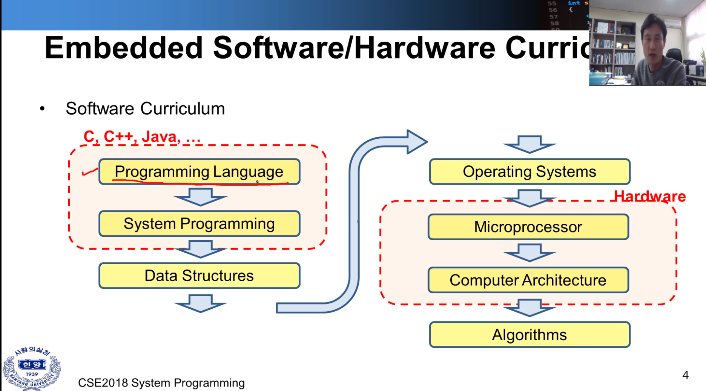
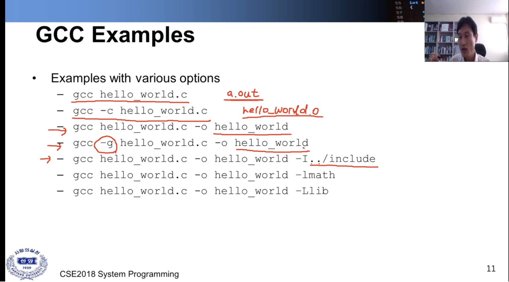
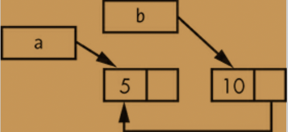
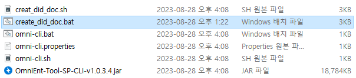

Hi.
I'm a guy who like to study about computer programming language.
specifically Rust.
this blog is about me, and Rust.
writing an OS in Rust
small operating system 을 구현해보자 .
출처 Philipp Oppermann's blog [https://os.phil-opp.com/]
A Freestanding Rust Binary


시스템 프로그래밍
개발자 첫 취업을 응용어플리케이션 쪽으로 하다보니 항상 시스템 쪽 프로그래밍에 대한 뭔가 조금 더 근본적인 것에 대한 갈망이 항상 존재해왔다.
그러다보니 로우레벨 언어인 러스트에 더욱 관심을 가졌는지도 모르겠다.
우연찮게 알게된 한양대 교수님의 강의가 유투브에 무료로 올라와 있는 것을 발견하였고
보다가 강의가 너무 좋아 조금씩 강의를 들으면서 정리하고자 한다.
감사합니다 잘 볼게요 교수님 :)
수업 개요
- 수업 내용에 대해(Course introduction)
- 유닉스와 리눅스(Unix and Linux Basics)
- c 프로그래밍 리뷰(C Programming review)
- 쓰레드와 프로세스(Threads and processes)
- 스케쥴링(Scheduling)
- 동기화(Synchronization)
- 프로세스 간 통신(Inter-process communication)
lecture1
시스템 프로그래밍은 Embedded Software 또는 Hardware 부분에 속해 있다.

-
Software Curriculum
- 컴퓨터 시스템 내에서 어떻게 적용이 되며 어떤 일이 일어나는지에 대해 고려하면서 프로그래밍 하는 것을 배운다.
- 데이터 구조
- 운영 체제(메모리 관리, os 기능 등)
-
Hardware
- 마이크로프로세서(하드웨어) 이해하고 프로그래밍하는 것이 중요
- 컴퓨터 구조
- 알고리즘 ( 데이터 구조에서 진보된 챕터)
-
배울 내용에 대해 간단히 도식화 해보자.
| Computer systems | Embedded systems |
|---|---|
|
|
| 내용 | 서로 다른 시스템이라 불리지만 흡사한 일련의 과정을 거쳐서 어플리케이션을 동작시킨다. |
| 궁금 | 하드웨어와 OS가 어떻게 동작하는지에 대해 궁금함.. |


-
하드웨어
- 입력 장비 ( 키보드, 마우스) -> cpu (hdd, ram)
- ex( cpu -> x86, arm..)
- 출력 장비 (모니터, 프린터, 스피커)
- 입력 장비 ( 키보드, 마우스) -> cpu (hdd, ram)
-
운영체제
-
커널 스페이스
- Architecture dependent kernel( 하드웨어와 가장 처음 맞닿는 영역, 하드웨어에 의존적)
- 커널(운영체제의 코어 영역), *핵심은 파일시스템과 프로세스 관리
- 파일 시스템(ex -exd2, 각 os 마다 사용하는 파일 시스템이 다름)
- Inter-process communication ( 프로세스 간의 통신 - 추후 자세히 안내)
- I/O and device management
- Process management
- System call interface ( api 같은, 함수화 되어 있는 기능, 파일 열기 등 )
-
유저 인터페이스
- Libraries ( system call interface lib )
- User applications
-
- 아래 표는 위의 내용 도식화한 것이다.

-
하드웨어가 발전함에 따라 멀티 쓰레딩, 멀티 프로세싱도 함께 발전.
-
OS의 타입
- 배치
- 멀티 프로그래밍
- 멀티프로세서
- 분산 OS (물리적으로 컴퓨터가 분산된 상태에서 사용)
- 리얼타임 OS (미사일 무기)
-
이 수업에서는 Linux 를 주로 사용한다.
- 유닉스와 동일하게 동작한다. (단지 개인 피씨에서 사용됨)
-
C Program Development Environment
- editor -> disk (코드 입력 및 저장)
- Preprocessor -> disk ( 컴파일될 라이브러리, ex: include stdio.h .. 을 가져와 소스에 추가)
- Compiler -> disk (코드 메모리 영역에 배치, 코드를 어셈블리화 하고 바이너리(오브젝트코드) 를 만듦)
- Linker -> disk (오브젝트를 코드를 다 붙인다. ex: inlclude 된 함수, 다른 곳에 있는 lib을 링크시킴)
- Loader -> disk (실행, 메모리에 올림, 메모리 영역도 다섯가지 정도로 분산 배치 됨)
- cpu -> 하나하나 씩 읽어와서 코드를 실행시킴
lecture2
about text editor
vi 편집기는 패스! 이미 충분히 익숙함
GCC
-
gnu c/c++ compiler
-
gcc is C code
-
g++ is C++
-
console-based compiler (터미널에 커맨드 입력을 통해)
-
gcc perfoms the followings
- preprocessing,
- complilation,
- assembly,
- linking
-
More Info, " man gcc "
GCC Options ( or Flags)
-
-c : perfomrs compilation and assembly of source file without linking.
- outfile is object file, if it compiles with link, then output file is excutive file.
-
-o : specify output file name, if not specify the flag output file name is default. ex) a.out
-
-g : debug flag,
-
-Wall : show all warning.
-
-I
: specify the path where the headerfile is located. -
-L
: specify the path where the libs is located. -
-l
: specify the lib name. -
-Werror : Treat warning as errors.
example

<그림1> <그림2>-
그림1과 그림2는 alias 를 걸어둔 것만 차이가 있으며 동일하게 사용할 수 있다.
-
compile 시 c에서 c++ 을 사용하거나 이름을 변경할 때 <그림2> 상단만 alias 부분만 수정하면 되서 편리함.
Componets of a makefile
-
Comments
- a comment is indicated by the character "#"
-
Rules
- 2 lines.
hello.o : hello.c // rull name : Dependency gcc -c hello.c // 명령어 -
Dependency Lines
hello.exe: main.o hello.o // dependency line gcc main.o hello.o -o hello.exe -
Shell Lines
hello.exe: main.o hello.o gcc main.o hello.o -o hello.exe // shell line, \t 이 필수 -
Macro
home = /home/user1 //alias 와 동일하게 사용가능 lib = $(home) // 사용 시 $() -
Inference Rules
%.o : %.c // the "%" is used to indicate a wild card $(cc) $ (FLAGS) -c $(SRC)

- 설명 cc = gcc DIR = /home/user1/lib CFLAGS = -g -I$ (DIR) -I. -c // compile 시 다른 옵션을 주기 위함 LFLAGS = -g std : 룰 이름 / analysis.o 디펜던시 추가
The Rust Progamming Language by Carol Nichols
러스트 기본서 라고 불리는 책이다. 공식 홈페이지에서도 제공되고 현재 번역본과 원서 두가지가 제공되고 있긴 하지만 필자는 원서로 공부하였다.
- 그냥 읽는 것은 내 머리 수준으로는 정리가 되지 않았다.
- 3회 정도 훑어보았지만 부족함을 느꼈다.
- 아예 필사를 해보자 하였지만 이마저도 큰 도움이 되지 않는 거 같앴다.
- 다시 꼼꼼히 읽으면 각 챕터별 중요한 문장을 밑줄치고 그것을 정리하는 것이 좋을 것 같다는 것이 나의 결론이다.
- 그래서 정리한다.
아 개인적으로 이 책을 정말 좋아한다.
Common Programming Concepts, ch3
Summary:
this chapter introduces essential programming concepts that are common not only in Rust but also in many other languages. The chapter covers variables, data types, functions, comments, and control flow.
key Concepts:
1.Variables and Mutablility
VariablesandMutability:Variablesare immutable by default in Rust.- To make a variable mutable, use the
mutkeyword.
Example:
fn main() { let x = 5; // Immutable variable let mut y = 6; // Mutable variable // x += 1; //Not allowed. y += 1; //Allowed because y is mutable println!(" result of `y` : {}", y); }
2. Data Types:
- Scalar - integers, floating-point numbers, Booleans and characters.
- int - signed, unsigned : 8 ~ 128 bit and isize, usize.
- Compound - tuples, arrays
- Can take user-defined
structandenumeration.
- Can take user-defined
fn main() { let a: i32 = 10; let b = 3.14; // Type inference let x : i32 = -1; let y : u32 = 1; let pi: f64 = 3.14159265359; let is_true : bool = true; let c : char = 'a'; //Tuples : can contain mutiple values of different types. let person : (i32, f64, &str) = (25, 5.9, "Ho"); //Arrays : only contains the same type. let numbers : [i32, 3] = [3,2,1]; }
3. Functions:
- Functions are defined using the
fnkeyword. - Parameters must have their types explicitly annotated.
fn add(x : i32, y : i32) -> i32 { x + y } fn main() { println!(" x + y = {}", add(3, 5)); }
4. Comments:
- Single-line comments start with
// - Multi-line comments are rarely used but start with
/*and end with*/.
fn main() { // This is a single-line comment /* This is a muti-line comment */ }
5. Control Flow:
if-else,loop,while, andforare available for control flow.
6. Statements and Expressions
-
Statements: These are instructions that perform some action and do not return a value. They usually end with a semicolon(
;). -
Expressions : These are pieces of code that evaluate to a value and do not end with a semicolon.
- Expressions can be part of a statement.
fn main() { let x = 5; //Statement : This initializes the variable `x` with the value 5. let y = (x + 1); // Expression : ` x + 1 ` evaluates to a value (6 in this case). let x1 = 5; // statement let y1 = { let z = 3; // statement z + 1 // expression }; // this block is also an ?? println!(" y = {}", y1); }
UNDERSTANDING OWNERSHIP, ch4
it enables Rust to make memory safety guarntees without needing a garbage collector.
in this chapter, we will talk about
- ownership
- borrowing, slices, how rust lays data out in memory ( stack & heap )
What is Ownership?
Some languages have garbage collector, and C lang use explicitly allocate and free the memory but rust use different kind of system.
- Memory is managed through a system of ownership with a set of rules that the compliler checks at compile time.
| the stack and the heap |
|---|
| All data stored on the stack must have a known, fixed size. Data with an unkown size at compile time or size that might change must be stored on the heap instead |
Ownership Rules
- Each value has a variable that's called its owner.
- There can be only one owner at a time.
- When the owner goes out of scope, the value will be dropped.
fn main() { { let s = "who are you?"; println!("{}", s); } // s variable will be dropped after this scope }
- When s comes into scope, it is valid.
- It remains valid until it goes out of scope.
The String Type
String type is allocated on the heap and as such is able to store an amount of text that is unknown to us at compile time.
- String
- str, &String
the difference is how these two topes deal with memory.
Memory and Allocation
str case, we know this comtents of size at compile time.
pros -> fast and efficient.
cons -> can not change the value.
- we can not put a blob of memory into the binary for each piece of text whose size is unknown at conpile time and whoese size might change while running the program.
In other to grow and mutable piece of text, we need to allocate an amount of memory on the HEAP
-
The memory must be requested from the operating system at runtime.
- ex) String::from().. etc
-
We need to way of returning this memory to the operating system when we are done with our String.
- ex) drop
the memory is automatically returned once the variable that owns it goes out of the scope.
- when the variable goes out of scope, rust program automatically calls the drop method that drops the varable and free the memory.
Ways That Variable and Data Interact : Move
fn main() { let s1 = String::from("hello"); let s2 = s1; }
- value
| s1 | status |
|---|---|
| name | value |
| ptr | pointer to heap memory |
| len | 5 |
| capacity | 5 |
- pointer to heap memory
| index | value |
|---|---|
| 0 | h |
| 1 | e |
| 2 | l |
| 3 | l |
| 4 | o |
- value's pointer is pointing to the heap memory that holding the value "hello".
when s1 is copied to s2 then s1 and s2 have same pointer. what if we drop s2 and keep the s1, this will cause memory loss. s1's pointer can not find value that holding in the heap.
So rust uses "move".
s1 is moved to s2 then s1 is no longer valid.
Ways that Variables and Data Interact : Clone
- Heap data does get coppied.
Stack-Only Data : Copy
if a type have a copy trait, an older variable is still usable after assignment. rust won't allow to use copy trait if the type implement drop trait.
then what types are Copy ? -> scala type.
- integer, bool, char, floating, tuple that only contains scala type.
Mutable References
Mutable reference has one bing restriction -> can not allow borrow once it mutably borrow.
The benefit of having this restriction is that rust can prevent data races at compile time. A data race is similar to a race condtion and happens when these three behaviors occur :
-
Two or more pointers access the same data at the same time.
-
At least one of the pointers is being used to write to the data.
-
There's no mechanism being used to synchronize access to the data.
Dangling References
a pointer that references a location in memory that may have been given to someone else, by freeing some memory while preserving a pointer to that memory.
- rust ensure that the data can not be dangle when you compile the code.
- compiler let you know where the dangling occurs.
The Rules of References
-
At any given time, you can have either but not both of the following: one mutable reference or any number of immutable references.
-
References must always be valid.
The Slice Type
Another data that does not have ownership is the slice. Slices let you reference a contiguous sequence of elements in a collection.
-> String slices. its same &String and &str.
Summary
Ownership, borrowing, and slices ensure memory safety in Rust at compile time.
USING STRUCTS TO STRUCTURE RELATED DATA, ch5
Custome data type.
Struct and Enums are the building blocks for creating new types in your program's domain to take full advantage of rust's compile time type checking.
-
when you use mut keyword on struct, entire instance must be mutable.
-
using the field init shorthand when variables and field have the same name.
-
creating instances from other instances with struct update sysntax ( ..user1)
- ex) User { ..user1 };
-
using tuple structs without named field to create different types
- ex) struct Color(i32, i32, i32);
- ex) struct Point(i32, i32, i32);
-
Unit-Like structs without any fields
- ex) struct A();
- ex) implements trait with unit-like struct is useful. you can distingush with just unit-like struct
-
method
- ex) impl User { fn method(self, &self, &mut self) }
- rust has a feature called automatic referencing and dereferencing
-
object.something(), rust automatically adds in &, &mut, or * so object matches the signature of the method.
-
the fact that rust makes borrowing implicit for method receivers is a big part of making ownership ergonomic in practice.
-
-
associated functions
- ex) impl user { fn new() -> something {} }
- there no self parameter in associated function, it can be used for making a new instance.. etc
ENUMS AND PATTERN MATCHING, Ch6
this chapter covers...
-
how an enum can encode meaning along with data
-
explore particulary useful enum, called Option
-
how pattern matching in the match expression
-
if let construct
Rust's enums are most similar to algebraic data types in functional languages, such as F#, OCaml, and Haskell.
defining and using enum
fn main() { enum IpAddrKind { V4, // or V4(u8, u8, u8, u8) V6, // or V6(String), } let four = IpAddrKind::V4; // or IpAddrKind::V4(127, 0, 0, 1); let six = IpAddrKind::V6; // or IpAddrKind::V6(String::from("::1")); }
-
example of enum
enum Msg { Quit, Move { x: i32, y: i32}, Write(String), ChangeColor(i32, i32, i32), }
-> Msg Enum whose variants each store different amounts and types of values.
- Quit has no data associated with it at all.
- Move includes an anonymous struct inside it.
- Write includes a single String.
- ChangeColor includes a three i32 values
-
why are we using enum? -> if we use different structs, which each have their own type, we couldn't as easily define a fucntion.
The Option Enum and Its Advantages over Null Values.
-
Expressing this concept in terms of the type system means the compiler can check whether you've handled all the cases you should be handling.
-
Rust does not have null feature. -> the problem with null values is that if you try to use null value as not-null value, you'll get an error of some kind.
-> the concept that null is trying to express is still a useful one: a null is value that is currently invalid or absent for some reason.
-
Rust does have an enum that can encode the concept of a value being present of absent.
enum Option<T> {
Some(T),
None,
}
let some_number = Some(5);
let some_string = Some("a string");
let absent_number : Option<i32> = None;
- it included in the prelude.
- you can you Some or None directly.
- if we use None rather than Some, we need to tell Rust what type of Option
we have because compiler can not infer the type. - can not use value inside some directly, we need to take the value from Some
The match Control Flow Operator
let some_val = Some(123);
match some_val {
Some(t) -> println!("in some, there is value : {}", t),
_ -> println!("there is no value at all"), // or we can use use (),
};
- in this case, uses '_' in match this means it can take all cases that aren't specified before it.
- () is just the unit type, nothing will happen in the _ case.
if let
#![allow(unused)] fn main() { let some_val = Some(123); if let val = some_val { println!("there is vale inside some_val : {}", val); }else{ println!("none"); } }
Sommary
- how to create custom enum type.
- Option
- match & if let
MANAGING GROWING PROJECTS WITH PACKAGES, CREATES, AND MODULES
What we will covers ..
As a project grows, you can organize code by splitting it into multiple modules and then multiple files. a package can contain multiple binary crates and optionally one library crate. as package grows, you can extract parts into separate crates that become external dependencies.
- organizing project.
- grouping functionality, encapsulating implementation details lets you reuse code at a higher level.
- parts of code are public or private.
Module system
- Packages : a cargo feature that lets you build, test, share crates.
- Crates : a tree of modules that produces a library or executable.
- Modules and use : let you control the organization, scope, and privacy of paths.
- Path : a way of naming an item, such as a struct, function, or module.
Packages and crates
- a crate is a binary of library. (root file is library:lib.rs, binary:main.rs)
- rust compiler starts from and makes up the root module of your crate.
- one or more crates that provide a set of functionality.
- package must contain zero or one library crates and no more.
- it can contain as many binary crates as you'd like, but it must contain at least one crate(either lib, bin)
- a package can have multiple binary crates by placing files in the src/bin directory : each file will be separate binary crate.
- crate's functionality is namespaced in its own scope. ex) rand::Rnd
Defining Modules to Control Scope and Privacy
- we will discuss :
- use keyword.
- pub keyword.
- as keyword, external packages
- the glob operator
in the src/lib.rs
we difined a module.
#![allow(unused)] fn main() { mod frond_of_house { mod hosting { fn add_to_waitlist() {} fn seat_at_table() {} } mod serving { fn take_order(){} fn serve_order(){} fn take_payment(){} } } }
-
we difined a module start with mod keyword.
-
inside modules, we can have other modules and also hold definitions for other items, such as structs, enums, constant, triat, and function.
-
modules can be useful when you navigate the code you do not need to follow all the code but just follow the groups in this case module.
-
the etire module tree is rooted under the implicit module named crate.
-
lib.rs/main.rs are called crate roots -> it looks like tree structure, filesystem ex) crate root / frond_of_house / hosting / add_to_waitlist. it look like this.
Paths for Referring to an Item in the Module Tree
A path can take two forms :
-
An absolute path : starts from a crate root by using a crate name or a literal crate.
-
An relative path : starts from the current module and uses self, super, or an identifier in the current module.
these path forms are followed by one or more identifiers separated by double colons (::).
#![allow(unused)] fn main() { mod frond_of_house { mod hosting { fn add_to_waitlist() {} } } pub fn eat_at_restaurant() { //absolute path crate::front_of_house::hosting::add_to_waitlist(); //relative path front_of_house::hosting::add_to_waitlist(); } }
when to use relative path and absolute path?
-
The decision should depend on whether you're more likely to move item definition code separately from together with the code that uses the item.
- if we mode the front_of_house module and the eat_at_restaurant function into a module named customer_experience, we'd need to update the absolute path to add_to_waitlist, but the relative path would still be valid.
-
modules do -
-
organizing your code
-
define rust's privacy boundary
-
private is default in rust.
-
Items in a parent module can not use the private items inside child modules.
-
Items in child module can use the items in their ancestor modules.
- the reason is that child modules wrap and hide their implementation details, but the child modules can see the context in which they're defined.
-
-
Exposing Paths with the pub Keyword.
#![allow(unused)] fn main() { mod frond_of_house { pub mod hosting { pub fn add_to_waitlist() {} } } pub fn eat_at_restaurant() { //absolute path crate::front_of_house::hosting::add_to_waitlist(); //relative path front_of_house::hosting::add_to_waitlist(); } }
- adding the pub keyword to mod hosting and fn add_to_waitlist lets us call the function from eat_at_restaurant.
Starting Relative Paths with super.
src/lib.rs
#![allow(unused)] fn main() { fn serve_order(){} mod back_of_house { fn fix_incorrect_order() { cook_order(); super::serve_order(); // relative path with super. } fn cook_order() {} } }
-> we used super so we'll have fewer places to update code in the future if this code gets moved to a different module.
Making Structs and Enums Publics
if we make struct public, but the struct's fields will still be private.
#![allow(unused)] fn main() { // src/lib.rs mod back_of_house { pub struct Breakfast { pub toast: String, seasonal_fruit: String, } impl Breakfast { pub fn summer(toast: &str) -> Breakfast { Breakfast { toast : String::from(toast), seasonal_fruit : String::from("peaches"), } } } } pub fn eat_at_restaurant() { let mut meal = back_of_house::Breakfast::summer("Rye"); // Change our mind about what bread we'd like meal.toast = String::from("wheat"); // but seasonal_fruit can not be modified. } }
In contrast, if we make an enum public, all of its variants are then public.
Bringing Paths into Scope with the use Keyword
#![allow(unused)] fn main() { // src/lib.rs mod front_of_house { pub mod hosting { pub fn add_to_waitlist() {} } } use crate::front_of_house::hosting; // we can also bring module with relative path. // use front_of_house::hosting; pub fn eat_at_restaurant() { hosting::add_to_waitlist(); } }
- adding use and a path in a scope is smilar to creating a symbolic link in the filesystem.
Creating Idiomatic use Paths.
you might wonder why we use 'use create::front_of_house::hosting' instead of bring it all the way out to add_to_waitlist.
-
bring it all the way out to fn is unidiomatic.
-
otherwise we can have benefit.
-
when calling the function, we can catch the function isn't locally defined.
-
Bringing two types with the same name into the same scope requires using their parent module otherwise we can not ditingush which one is which.
-
on the other hand, when bringing in structs, enums, and other items with use, it's idiomatic to specify the full path.
-
there's no string reason behind this idiom: it's just the convention that has emerged, and folks have gotten used to reading and writing Rust code this way.
-
Providing New Names with the as Keyword.
#![allow(unused)] fn main() { use std::io::Result as IoResult; }
Re-exporting Names with pub use.
To enable the code that calls our code to refer to that name as if it had been defined in that code's scope, we can conbine pub and use.
-
this technique is called 're-exporting'
- making that item available for others to bring into their scope.
#![allow(unused)] fn main() { // src/lib.rs mod front_of_house { pub mod hosting { pub fn add_to_waitlist(){} } } pub use crate::front_of_house::hosting; }
By using pub use, external code can now call the add_to_waitlist function using hosting::add_to_waitlist. if we had not specified pub use, it can be called in the scope but external code could not.
- Doing so makes our library well organized for programmers working on the library and programmers calling the library.
Using External Packages.
in the Cargo.toml
[dependencies] rand = "0.5.5"
use rand::Rng; fn main() { let secret_number = rand::thread_rng().gen_range(1,101); }
Note that standard library (std) is also a crate that's external to our package. it shiped with rust, so we do not need to include it.
Using Nested Paths to Clean Up Large use Lists.
#![allow(unused)] fn main() { // use std::io; //use std::cmp::Ordering; // it can also be used this way. use std::{io, cmp::Ordering}; // use std::io; // use std::io::Write; use std::io::{self, Write}; }
The Glob Operator
#![allow(unused)] fn main() { use std::collections::*; }
glob can make it harder to tell what names are in scope and where a name used in your program was defined.
The glob operators is often used when testing to bring everything under thest into the tests moduile.
Separating Modules into Different Files.
move the front_of_house module to its own file src/front_of_house.rs
#![allow(unused)] fn main() { // src/lib.rs mod front_of_house; pub use crate::front_of_house::hosting; }
#![allow(unused)] fn main() { // src/front_of_house.rs pub mod hosting { pub fn add_to_waitlist() {} } }
Using a semicolon after mod front_of_hose rather than using a block tells Rust to load the contents of the module fron another file with the same name as the module.
same example as follws...
#![allow(unused)] fn main() { // src/front_of_house.rs pub mod hosting; }
#![allow(unused)] fn main() { // src/front_of_house/hosting.rs pub fn add_to_waitlist(){} }
this technique lets you move modules to new files as they grow in size.
Summary
-
organize your packages into crates
-
your crates into modules so you xan refer to items defined in one module from another module.
-
using a relative path or absolute path denpend on the situation.
-
bring it into the scope with a use statement.
-
module code is private by default, use pub keyword to public usecases.
COMMON COLLECTIONS, Ch 8
unlike the built-in array and tuple types these collections point to is stored on the heap memory.
which is that the size is not determined at compile time.
it means these collections can shrink and grow as the program rus.
we'll cover..
create and uipdate vectors, strings, and hashmaps as well as what makes each special.
-
A vector - allows you to store a variable number of values next to each other.
-
A string - is a collection of characters.
-
A hashmap - allows you to associate a value with a particular key. it's a particular implementation of the more general data structure called a map.
About Vectors.
-
vector can only store values of the same type.
-
create vector, we can use Vec::new() from std lib or vec!["value"] macro.
- when we create vector, we need to specify what the type of vector.
- but some cases compiler might infer the type if we add value after create.
- when we create vector, we need to specify what the type of vector.
-
get value from vector, two methods are represent..
- vec.get(index) - return type is Option type -> no compile time error always return Option.
- vec[index] - return type is value of that vector. -> compile error occured if it does not have value.
-
can not use mutable vector after referencing to other value.
- because adding a new elements onto the end of the vector might require allocating new memory and copying the old elements to the new space. so this might result in pointing to a deallocated memory.
Different types that can store in vector.
vector can only take value of same type so we can not use struct type. Instead, enum that can be useful. But this type can not be added at runtime. what should we do? -> trait object, cover in chapter 17.
About Strings.
strings in rust are implemented as a collection of bytes, plus some methods to provide useful functionality when those bytes are interpreted as text.
we'll discuss..
-
indexing into a string and why it is difficult, what is differences between how people and computers interpret string data.
-
string slices, which are references to some UTF-8 encoded string data stored elsewhere.
- string literals, for example, are stored in the program's binary and are therefore string slices.
-
String type, which is provided by std lib is a growable, mutable, owned, UTF-8 encoded string type.
- std lib also include OsString, OsStr, CString, and CStr.
-
create String, String::new(); or "value".to_string() method, this method need to be the type that implemented the Display trait, as string literals do.
- to_string method is same as String::from("value").
updating string.
-
s.push_str("value"), took ownership of str value.
-
s.push('c'), adding char.
-
add(self, &str) -> s1 + &s2. coerce the &string argument into a &str.
- deref coercion which is &string into &string[..]
-
using a format! macro. format!("{} - {}", s1, s2);
Indexing into Strings.
-
A String is a wrapper over a Vec
-
depends on Unicode scalar value in string, each char use different byte size.
-
char() or bytes()
Hash Maps
The type HashMap<K, V>
-
store their data on the heap.
-
all the keys must have the same type, and all of the values must have the same type.
-
use zip to create hash map. ex) teams = vec!["blue","red"], scores = vec![10, 20] -> teams.iter().zip(scores.iter()).collect();
-
hashmap take ownership.
-
only inserting a value if the key has no value. ex) entry("blue").or_insert(50);
-
updating a value based on the old value. ex) entry("blue") returns value of key. and if value is not exist, insert value.
Hasing Functions
hashmap uses a cryptographically strong hasing function that can provide resistance to Denial of Service (Dos) attacks. This is not the fastest hashing algorithm available, but the trade-off for better security that comes with the drop in performance is worth it.
ERROR HANDLING, Ch 9
we will cover..
-
recoverable vs unrecoverable
-
panic! macro and return Result<T, E> values.
-
deciding whether to try to recover from an error or to stop execution.
unrecoverable Errors with panic!
when panic! macro executes, your program will print a failure message, unwind and clean up the stack, and the quit. but this process is a lot of work. the alternative is to immediately abort, which ends the program without cleaning up.
at Cargo.toml file.
| [profile.release] |
|---|
| panic = 'abort' |
- when we try to get the value of the vector that is out of index, std lib vec, calls panic! macro.
- like C language, it can access the memory that is not included in vector array it cause a lot of problem.
- use RUST_BACKTRACE=1 cargo run to see details of error where is it cause.
recoverable Errors with Result.
#![allow(unused)] fn main() { enum Result<T, E> { Ok(T), Err(E), } }
in this Result struct,
-
T represents return type of a success case -> Ok(T).
-
E represents return type of a fail case -> Err(E).
#![allow(unused)] fn main() { File::open("Yeon.txt"); // returns Ok(file) or Err(e) it is implemented in std lib, fs::File, io::ErrorKind. }
shortcuts for Panic on Error : unwrap and expect
-
unwrap will return the value inside the Ok. if the value inside Result is Err(e) then it will call the panic! macro.
-
using .expect("messages") convey your intent and easy to track down the source of a panic.
propagating the error
#![allow(unused)] fn main() { fn read_file() -> Result<io::File, io::Error> { File::open("yeon") } }
- the function that call read_file() can receive the Result<T, E>.
- we can choose what we will do after receving the result type.
a shortcut for propagating errors : the ? operator.
#![allow(unused)] fn main() { fn read_username_from_file() -> Result<String, io::Error> { let mut f = File::open("hello.txt")?; let mut s = String::new(); f.read_to_string(&mut s)?; Ok(s) } // chaining also works File::open("hello.txt")?.read_to_string(&mut s)?; }
-
? convert automatically.
-
? operator can only be used in function that return result type.
- Result<(), Box
> is called a trait object we will talk about this later.
- Result<(), Box
To panic! or Not to panic!
-
prototype code, and test panic is very useful.
-
cases in which you have more information than the compiler -> you can choose unwarp because you know what the result type is.
Guidelines for error handling
-
the bad state is not something that's expected to happen occationally.
-
your code after this point needs to rely on not being in this bad state.
-
there's not a good way to encode this information in the types you use.
Summary
-
the panic! macro signals that your program is in a state it can not handle and lets you tell the process to stop instead of trying to proceed with invalid or incorrect value.
-
the result enum uses rust's type system to indicate that operations might fail in a way that your code could recover from.
- it needs to handle potential success or failur.
GENERIC TYPE, TRAITS, AND LIFETIMES, Ch, 10
Generics are abstract stand-:ine your own types, functions, and methods with generics.
-
how to use generic type in struct and enum definitions.
-
how to use traits to define behavior in a generic way.
- combine traits with generic types to constrain a generic type to only those types that have a particular behavior.
-
lifetimes, a variety of generics that give the compiler imformation about how reference relate to each other. lifetimes allow us to borrow values in many situations while still enabling the compiler to check that the references are valid.
In Function Definitions
we place the generics in the signature of the function. where we would usually specify the data types of the parameters and return value.
// this function is generic over some type T
fn function<T>(param : T) -> T {
//...
};
- you can use any type identifier as a type parameter name. But 'T' by convention, parameter names in Rust are short, often just a letter, and Rust's type-naming convention is CamelCase. "type", T is the default choice of most Rust programmers.
In Struct Definitions
struct Point<T> {
x : T,
y : T,
}
struct Differ_field<T, U> {
x : T,
y : U,
}
In Enum Definitions
enum Option<T> {
Some(T),
None,
}
enum Result<T, E> {
Ok(T),
Err(E),
}
In Method Definitions
struct Point<T> {
x : T,
y : T,
}
impl<T> Point<T> {
fn x(&self) -> &T {
&self.x
}
}
impl Point<f32> {
fn distance_from_origin(&self) -> f32 {
(self.x.powi(2) + self.y.powi(2)).sqrt()
}
}
-
By declaring T as a generic type after impl, Rust can identify that the type in the angle brakets in point struct is a generic type.
-
we could implement concrete type method for Point struct.
Performance of Code Using Generics
Monomorphization is the process of turning generic code into specific code by filling in the concrete types that are used when compiled.
- we pay no run time cost for using generics.
Traits: Defining Shared Behavior.
-
tells the rust compiler about functionality a particular type has and can share with other type.
-
trait bounds is to specify a generic can be any time that has certain behavior.
-
group method signatures.
-
accomplish some purpose.
trait Summary {
fn summary(&self) -> String;
}
-
implementing a trait, compiler enforce you to implement all methods trait has.
-
we do not need to curly brakets for implement function, we use semiconlon instead.
-
we use alse curly brakets to implement function. ex) default fucntion..
Implementing a Trait on a Type.
pub struct Tweet {
pub username: String,
pub content: String,
pub reply: bool,
pub retweet: bool,
}
impl Summary for Tweet {
fn summarize(&self) -> String {
format!("{}: {}", self.username, self.content)
}
}
-
we can implement a trait on a type only if either the trait or the type is local to our crate.
-
this restriction is called, coherence, orphan rule. ( parent type is not present )
-
two crates could implement the same trait for the same type, and Rust wouldn’t know which implementation to use.
Default Implementaion.
pub trait Summary {
fn summarize_author(&self) -> String;
fn summarize(&self) -> String {
String::from("(Read more...)")
}
}
- Default implementations can call other methods in the same trait, even if those other methods don’t have a default implementation.
impl Summary for Tweet {
fn summarize_author(&self) -> String {
format!("@{}", self.username)
}
}
- Note that it isn’t possible to call the default implementation from an overriding implementation of that same method.
Traits as Parameters.
pub fn notify(item: impl Summary) {
println!("Breaking news! {}", item.summarize());
}
// trait bound syntax
pub fn notify<T: Summary>(item: T) {
println!("Breaking news! {}", item.summarize());
}
// where clauses
fn some_function<T, U>(t: T, u: U) -> i32
where T: Display + Clone,
U: Clone + Debug
{
//...
}
Returning Types that implement Traits.
fn returns_summarizable(switch: bool) -> impl Summary {
if switch {
NewsArticle {
headline: String::from("Penguins win the Stanley Cup Championship!"),
location: String::from("Pittsburgh, PA, USA"),
author: String::from("Iceburgh"),
content: String::from("The Pittsburgh Penguins once again are the best
hockey team in the NHL."),
}
} else {
Tweet {
username: String::from("horse_ebooks"),
content: String::from("of course, as you probably already know, people"),
reply: false,
retweet: false,
}
}
}
-
this code would not work.
-
due to restrictions around how the impl Trait syntax is implemented in the compiler. We’ll cover how to write a function with this behavior in “Using Trait Objects That Allow for Values of Different Types”
- **The ability to return a type that is only specified by the trait it implements is especially useful in the context of closures and iterators, which we cover in Chapter 13.
Using Trait Bounds to Conditionally Implement Methods.
struct Pair<T> {
x: T,
y: T,
}
impl<T> Pair<T> {
fn new(x: T, y: T) -> Self {
Self {
x,
y,
}
}
}
impl<T: Display + PartialOrd> Pair<T> {
fn cmp_display(&self) {
if self.x >= self.y {
println!("The largest member is x = {}", self.x);
} else {
println!("The largest member is y = {}", self.y);
}
}
}
- blanket implementations.
example of std.
// the ToString trait on any type that implements the Display trait.
impl<T: Display> ToString for T {
// --snip--
}
-
we can call to_string method defined by the ToString Trait on any type that implements the Display trait.
-
Blanket implementations appear in the documentation for the trait in the “Implementors” section.
-
Traits and trait bounds let us write code that uses generic type parameters to reduce duplication
-
specify to the compiler that we want the generic type to have particular behavior.
-
In dynamically typed languages, we would get an error at runtime if we called a method on a type that the type didn’t implement. But Rust moves these errors to compile time so we’re forced to fix the problems before our code is even able to run.
Validating References with Lifetimes.
Although we won't cover lifetimes in their entirety in this chapter.
we'll discus common ways you might encounter lifetime syntax.
Preventing Dangling References with Lifetimes.
it can prevent memory loss while referencing other data.
{ let r; //println!("r : {}", r); // rust does not allow null values. { let x= 5; r = &x; } println!("r : {}", r); // x variable is dropped after the '}' culry braket. // can not compile. }
- '{}' scope can borrow check, compiler let you know where it need to be fixed.
Generic Lifetimes in Functions.
fn function(a : &str, b : &str) -> &str {
if a.len() > b.len() {
return a
}
b
}
-
borrow checker can't determine.
-
does not know how the lifetimes of x and y relate to the lifetime of the return value.
-
we'll add generic lifetime parameters that define the relationship between the references.
fn function<'a>(a : &'a str, b : &'a str) -> &'a str {
if a.len() > b.len() {
return a
}
b
}
-
lifetime annotations describe the relationships of the lifetims of multiple references to each other without affecting the lifetimes. // ??
-
string slice returned from the function will live at least as long as lifetime 'a.
-
we're not changing the lifetimes of any values passed in or returned.
-
we're specifying that the borrow checker shoud reject any values that don't adhere to these contraints
-
this function doesn't need to know exactly how long x and y will live, only that some scope can be substited for 'a that will satisfy this signature.
-
the annotations go in the function signature, not in the function body. Rust can analyze the code within the function without any help. However, when a function has references to or from code outside that function, it becomes almost impossible for Rust to figure out the lifetimes of the parameters or return values on its own. The lifetimes might be different each time the function is called. This is why we need to annotate the lifetimes manually.
-
generic lifetime 'a will get the concrete lifetime that is equal to the smaller of the lifetimes of x and y.
fn test<'a>(a : &'a str, b : &'a str) -> &'a str {
if a.len() > b.len() {
return a
}
b
}
{
let string1 = String::from("xyz");
let string2;
{
let string2_test = String::from("abc");
}
test(&string1, &string2);
// can not compile because value that is referencing to string2 is already dropped.
}
-
lifetime syntax is connecting the lifetimes of various parameters and return values of functions.
-
Rust has enough information to allow memory-safe operations and disallow operations that would create dangling pointers or otherwise violate memory safety.
Lifetime Annotaions in Struct Definitions.
struct ImportantExcerpt<'a> {
part: &'a str,
}
- this annotation means can't outlive the reference it holds in its part field.
Lifetime Elision.
- first rule
- reference gets its own lifetime parameter.
fn test1(a : &'a str){}
fn test2(a: &'a str, b: &'a str){}
- second rule
- if there is exactly one input lifetime parameter, that lifetime is assigned to all output lifetime parameters.
fn test1(a : &'a str) -> &'a str {}
- third rule
- one of them is &self or &mut self, the lifetime of self is assigned to all output lifetime parameters.
Lifetime Annotaions in Method Definitions
-
third rule applies.
-
Lifetime names for struct fields always need to be declared after the impl keyword and then used after the struct's name. its lifetimes are part of the struct's type.
impl<'a> ImportantExcerpt<'a> {
fn announce_and_return_part(&self, announcement: &str) -> &str {
println!("Attention please: {}", announcement);
self.part
}
}
- Rust applies the first lifetime elision rule and gives both &self and announcement their own lifetimes. one of the parameters is &self, the return type gets the lifetime of &self.
The Static Lifetime
let s : &'static str = "I have a static lifetime.";
- the text of this string is strored directly in the binary of your program.
Generic Type Parameters, Trait Bounds, And LifeTimes Together.
use std::fmt::Display;
fn longest_with_an_announcement<'a, T>(x: &'a str, y: &'a str, ann: T) -> &'a
str
where T: Display
{
println!("Announcement! {}", ann);
if x.len() > y.len() {
x
} else {
y
}
}
Summary
-
Trait and trait bounds ensure that even though the types are generic, they will have the behavior the code needs.
-
lifetime annotations to ensure that this flexible code won't have any dangling references at compile time.
FUNCTIONAL LANGUAGE FEATRUES : ITERATORS AND CLOSURES, ch 13
functional programming : functions as values by passing them in arguments, returning them from other functions, assigning them to variables for later execution, and so forth.
we' ll cover:
-
Closures, a function like construct you can store in a variable.
-
Iterators, a way of processing a series of elements
pattern matching and enums are influenced by the functional style. Mastering closures and iterators is a key to learn Rust.
Closures : Anonymouse functions that can chapture their environment
-
rust's closures are value that can contain function.
-
it can be passed as arguments to other functions.
Closure type inference and annotation
-
function's type annotations are required on functions because they're part of an explicit interface exposed to your users.
-
closure definitions will have one concrete type inferred for each of their parameters and for their return value.
- types are locked into the closure.
Storing closures using generic parameters and the fn traits.
- memoization or lazy evaluation.
-
create struct that will hold the closure and the resulting value of calling the closure. the struct will execute the closure only if we need the resulting value, and it will cache the resulting value so the rest of our code doesn't have to be responsible for saving and reusing the result.
-
Memoization refers to the technique of caching the results of a function call so that subsequent calls with the same arguments can be returned quickly from the cache instead of recomputing the result. This can be useful in cases where a function is computationally expensive or has side effects that can be avoided with caching. Memoization can be implemented using a HashMap or a similar data structure in Rust.
-
Lazy evaluation, on the other hand, refers to the evaluation of an expression only when its value is actually needed, rather than eagerly evaluating it before it is needed. This can be useful for optimizing performance and reducing memory usage in cases where not all values need to be computed or stored at once. In Rust, lazy evaluation can be implemented using closures, iterators, and the lazy_static crate.
Both memoization and lazy evaluation can be powerful techniques for optimizing Rust code, but they are best used judiciously and in cases where they provide a clear benefit.
struct Cacher<T>
where T: Fn(u32) -> u32 {
calculation : T,
value : Option<u32>,
}
-
Note
functions can implement all three of the Fn traits, too. If what we want to do doesn not require capturing a value from the environment, we can use a function rather than a clousre where we need something that implements an Fn trait
impl<T> Cacher<T>
➊ where T: Fn(u32) -> u32
{
➋ fn new(calculation: T) -> Cacher<T> {
➌ Cacher {
calculation,
value: None,
}
}
➍ fn value(&mut self, arg: u32) -> u32 {
match self.value {
➎ Some(v) => v,
➏ None => {
let v = (self.calculation)(arg);
self.value = Some(v);
v
},
}
}
}
fn generate_workout(intensity: u32, random_number: u32) {
➊ let mut expensive_result = Cacher::new(|num| {
println!("calculating slowly...");
thread::sleep(Duration::from_secs(2));
num
});
if intensity < 25 {
println!(
"Today, do {} pushups!",
➋ expensive_result.value(intensity)
);
println!(
"Next, do {} situps!",
➌ expensive_result.value(intensity)
);
} else {
if random_number == 3 {
println!("Take a break today! Remember to stay hydrated!");
} else {
println!(
"Today, run for {} minutes!",
➍ expensive_result.value(intensity)
);
}
}
}
Limitations of the cacher implementation
-
problem is that the first time we called c.value with 1, the Cacher instance saved Some(1) in self.value. Thereafter, no matter what we pass in to the value method, it will always return 1.
-
to fix this problem using a hash map -> the key will the are arg values that are passed in, and the value of key will be the result of caluation.
Capturing the environment with closures
fn main() {
let x = 4;
let equal_to_x = |z| z == x;
let y = 4;
assert!(equal_to_x(y));
}
-
when a closure captures a value from its environment, it uses memory to store the values for use in the closure body
-
but this case is overhead so we do not want to pay in more common cases where we want to execute code such as funtions.
three ways of capturing
-
taking ownership, borrowing mutably, and borrowing immutably.
-
FnOnce : taking ownership of a variable, it can be called only once.
-
FnMut : mutably borrows values, can change the environment.
-
Fn : borrows values from the environment immutably.
-
-
rust infers which trait to use based on how the closure uses the values from the environment.
-
take ownership of the values, move keyword force to take the value of ownership.
- this technique is mostyly useful when passing a closure to a new thread to move the data so it's owned by the new thread
fn main() {
let x = vec![1, 2, 3];
let equal_to_x = move |z| z == x;
// this print macro does not work because x has been moved.
println!("can't use x here: {:?}", x);
let y = vec![1, 2, 3];
assert!(equal_to_x(y));
}
Processing a Series of Items with Iterators
An iterators is responsible for the logic of iterating over each item an determining when the sequence has finished.
In Rust, iterators are lazy, they have no effect until you call methods that consume the iterator to use it up.
let v1 = vec![1,2,3];
// creating iterator using iter() method that implemented on Vec<T>
let v1_iter = v1.iter();
The Iterator Trait and the next Method
pub trait Iterator {
type Item;
fn next(&mut self) -> Option<Self::Item> {
//elided
}
}
-
type Item and Self::Item, defining an associated type with this trait.
-
talk about associated types in depth in chapter 19.
-
Implementing the Iterator trait requires that you also define an Item type, and this Item type is used in the return type of the next mehtod.
-
the Iterator trait only requires implementors to define one method: the next method, which returns one item of the iterator.
-
calling the next method on an iterator chages internal state so it needs to be mutable.
-
iterators uses to keep track of where it is in the sequence.
-
this called consumes or uses up the iterator.
-
each call to next eats up an item from the iterator.
-
iter_mut() - take mutable reference, into_iter() - take ownership, iter() - reference.
Methods That Consume the Iterator.
-
Methods that call next are refered to as consuming adaptors.
-
also sum method.
Methods That Produce Otehr Iterators.
-
change iteraotrs into different kinds of iterators, iterator adaptors
-
iterators are lazy, you need to call one of the consuming adaptor methods to get iterator adaptors.
let v1 = vec![1,2,3];
v1.iter().map(|x| x + 1);
-
warning - unused
std::iter::Mapwhich must be used: iterator adaptors are lazy and do nothing unless consumed. -
to fix this issue, we need to call collect() method.
- consume the new iterator and create a vector.
Using Closures That Capture Their Environment.
#[derive(PartialEq, Debug)]
struct Shoe {
size: u32,
style: String,
}
➊ fn shoes_in_my_size(shoes: Vec<Shoe>, shoe_size: u32) -> Vec<Shoe> {
➋ shoes.into_iter()
➌ .filter(|s| s.size == shoe_size
➍ .collect()
}
#[test]
fn filters_by_size() {
let shoes = vec![
Shoe { size: 10, style: String::from("sneaker") },
Shoe { size: 13, style: String::from("sandal") },
Shoe { size: 10, style: String::from("boot") },
];
let in_my_size = shoes_in_my_size(shoes, 10);
assert_eq!(
in_my_size,
vec![
Shoe { size: 10, style: String::from("sneaker") },
Shoe { size: 10, style: String::from("boot") },
]
);
}
- filter() method example.
Creating Our Own Iterators with the Iterator Trait.
struct Counter {
count: u32,
}
impl Counter {
fn new() -> Counter {
Counter { count: 0 }
}
}
impl Iterator for Counter {
type Item = u32;
fn next(&mut self) -> Option<Self::Item> {
if self.count < 5 {
self.count += 1;
Some(self.count)
} else {
None
}
}
}
Using Otehr Iterator Triat Methods
fn using_other_iterator_trait_methods() {
let sum: u32 = Counter::new().zip(Counter::new().skip(1))
.map(|(a, b)| a * b)
.filter(|x| x % 3 == 0)
.sum();
assert_eq!(18, sum);
}
Comparing Performance : Looks vs. Iterators
Iterators are one of Rust's zero-cose abstractions, no additional runtime overhead.
Summary
- Closures and iterators contribute to Rust's capability to clearly express high-level ideas at low-level perfromance.
MORE ABOUT CARGO AND CREATES.IO, ch 14
we will discuss ..
-
customize your build through release profiles.
-
publish libraries on https://crates.io/.
-
Organize large projects with workspaces.
-
Install binaries from https://crates.io/.
-
Extend Cargo using custom commands.
-
full explanation of all its features. https://doc.rust-lang.org/cargo/.
Customizing Builds with Release Profiles.
Cargo.toml
[profile.dev]
opt-level = 0
[profile.release]
opt-level = 3
-
cargo build command is useally for development.
-
cargo build --release is for the release.
-
we can controll opt-level setting. ( 0 to 3 ).
- default opt-level is zero, faster compiling than upper number.
Publishing a Crate to Crates.io
-
Making Useful Documentation Comments.
- documentaion comment - generate HTML documentation.
- example of documenting the source code.
- documenting use three slashes.
- description of what the add_one function does.
- start a section with the heading Examples
- demonstrates how to use the add_one function.
- we can generate by running cargo doc > target/doc directory
- more convenience, running cargo doc --open
/// Adds one to the number given.
///
/// # Examples
///
/// ```
/// let arg = 5;
/// let answer = my_crate::add_one(arg);
///
/// assert_eq!(6, answer);
/// ```
pub fn add_one(x: i32) -> i32 {
x + 1
}
Commonly Used Sections
Panics , Errors, Safety
Documentation Comments as Tests
- adding example code blocks to your documentation comments can help demonstrate how to use your library, and doing so has an additional bonus: running cargo test will run the code examples in your documentation as tests.
Commenting Contained Items
- Another style of doc comment, //!, adds documentation to the item that contains the comments rather than adding documentation to the items following the comments. We typically use these doc comments inside the crate root file (src/lib.rs by convention) or inside a module to document the crate or the module as a whole.
//! # My Crate
//!
//! `my_crate` is a collection of utilities to make performing certain
//! calculations more convenient.
/// Adds one to the number given.
// --snip--

Exporting a Convenient Public API with pub use
-
you might want to organize your structs in a hierarchy containing multiple levels.
- people could have trouble finding out.
-
the structure of your public API is a major consideration when publishing a crate.
-
structure isn't convenient for others to use from another library, you don't have to rearrange your internal organization: instead, you can re-export items to make a public structure that's different from your private structure by using pub use.
//! # Art
//!
//! A library for modeling artistic concepts.
pub mod kinds {
/// The primary colors according to the RYB color model.
pub enum PrimaryColor {
Red,
Yellow,
Blue,
}
/// The secondary colors according to the RYB color model.
pub enum SecondaryColor {
Orange,
Green,
Purple,
}
}
pub mod utils {
use crate::kinds::*;
/// Combines two primary colors in equal amounts to create
/// a secondary color.
pub fn mix(c1: PrimaryColor, c2: PrimaryColor) -> SecondaryColor {
// --snip--
}
}

-
Note that the PrimaryColor and SecondaryColor types aren't listed on the front page, nor is the mix function.
-
we have to click kinds and utils to see them.
use art::kinds::PrimaryColor;
use art::utils::mix;
fn main() {
let red = PrimaryColor::Red;
let yellow = PrimaryColor::Yellow;
mix(red, yellow);
}
-
we need to use statements that bring the items from art into scope.
-
this structure is more relevant to developers working on the art crate than to developers using the art crate.
-
developers have to figure out where to look, and the structure is inconvenient because developers must specify the module names in the use statements.
-
To remove the internal organization from the public API, we can modify the art crate code to add pub use statements to re-export the items at the top level.
//! # Art
//!
//! A library for modeling artistic concepts.
pub use self::kinds::PrimaryColor;
pub use self::kinds::SecondaryColor;
pub use self::utils::mix;
pub mod kinds {
// --snip--
}
pub mod utils {
// --snip--
}

- now the art crate users can still see and use the internal structrue.
Setting Up a Crates.io Account
- before you publish any crates, you need to crate an account on https://crates.io and get an API token.
cargo login abcdefgadsf123 // api key from crates.io
- this command will inform Cargo of your API token and stroe it locally in ~/.cargo/credentials.
Adding Metadata to a New Crate
-
adding it to the [package] section of the crate's Cargo.toml file.
-
your crate will need a unique name. (you need to search it before publish)
- once a crate name is taken, no one else can pblish a crate with that name.
-
license http://spdx.org/licenses/, you need to check and adding it.
- also you can adding a license file.
Cargo.toml
[package]
name = "guessing_game"
version = "0.1.0"
authors = ["Your Name <you@example.com>"]
description = "A fun game where you guess what number the computer has
chosen."
license = "MIT OR Apache-2.0"
edition = "2018"
[dependencies]
Publishing to Crates.io
-
publish is permanent.
-
cargo publish command will upload your crates.
Publishing a New Version of an Existing Crate
-
when you have been made changes to your crate and are ready to release a new version, you change the version value specified in your Cargo.toml file and republish.
-
Use the Semantic Versioning rules at http://semver.org/.
Removing Versions from Crates.io with cargo yank
-
you can not remove previous versions of a crate, you can prevent any future projects from adding them s a new dependency.
-
In such situations, Cargo supports yanking a crate version.
cargo yank --vers 1.0.1
cargo yank --vers 1.0.1 --undo
Cargo Workspaces
- Cargo offers a feature called workspaces that can help manage multiple related packages that are developed in tandem.
Creating a Workspace
- we will have a workspace containing a binary and two libraries
mkdir add
cd add
vi Cargo.toml
//in Cargo.toml
[workspace]
members = [
"adder",
]
$ cargo new adder
// then cargo build, inside or outside of adder.

-
the workspace has one target directory at the top level for the compiled artifacts.
-
adder crate does not have its own target directory, Even if we were to run cargo build from insdie the adder directory. it would endup add/target.
-
the crates in a workspace are meant to depend on each other.
-
if each crate had its own target directory, each crate would have to recompile each of the other crates in the workspace to have the artifacts in its own target directory.
-
by sharing one target directory the crates can avoid unnecessary rebuilding.
-
Creating the Second Crate in the Workspace
- add top-level Cargo.toml on the members list - "add-one"
members = [
"adder",
"add-one",
]
$ cargo new add-one --lib

-
in the add-one/src/lib.rs
-
add add_one function that gets one parameter then add 1.
// in the adder/Cargo.toml
[dependencies]
add-one = { path = "../add-one"}
//adder/src/main.rs
use add_one;
fn main() {
let num = 10;
println!("Hello, world! {} plus one is {}!", num, add_one::add_one(num));
}
- cargo build in the top-level add directory
// -p ( package adder )
$ cargo run -p adder
Depending on an External Crate in a Workspace
-
Notice that the workspace has only one Cargo.lock file at the top level of the workspace rather than having a Cargo.lock in each crate's directory.
- this ensures that all crates are using the same version of all dependencies.
-
if we add rand crate to the adder/Cargo.toml and add-one/Cargo.toml files, Cargo will resolve both of those to one version of rand and record that in the one Cargo.lock.
-
we can not use it in other crates in the workspace unless we add rand to their Cargo.toml files.
- we do not need download it again.
Adding a Test to a Workspace
//add-one/src/lib.rs
pub fn add_one(x: i32) -> i32 {
x + 1
}
#[cfg(test)]
mod tests {
use super::*;
#[test]
fn it_works() {
assert_eq!(3, add_one(2));
}
}
-
cargo test in the top-level add directory.
-
we can test by using the -p flag for the crate that we want to test.
publish tip
-
you can not publish **cargo publish --all.
-
you should publish on each directory of Cargo.
Installing Binaries from Crates.io with cargo install
-
the ** cargo install ** command allows you to install and you binary crates locally.
-
note that you can only install packages that have binary targets.
-
A binary target is the runnable program otherwise library is not.
-
README file has infomation about a crate.
-
installed binaries stored in the installation root's bin folder.
-
if you installed Rust using rustup and do not have any custom configurations, this directory will be $HOME/.cargo/bin.
- ensure that directory is in your $PATH to be able to run programs you have installed with cargo install.
example)
$ cargo install ripgrep
Updating registry `https://github.com/rust-lang/crates.io-index`
Downloading ripgrep v0.3.2
--snip--
Compiling ripgrep v0.3.2
Finished release [optimized + debuginfo] target(s) in 97.91 secs
Installing ~/.cargo/bin/rg
you can use rg --help
Summary
-
customizing builds with profile.
-
publishing a crate to crates.io.
- documentation comment - ///
- generate by running cargo doc
- more convenience, running cargo doc --open
- commenting contained items //!
-
exporting a public API with pub use.
-
setting up a crates.io account.
-
adding metadata in cargo.toml.
-
publishing a new version of an existing crate.
-
removing versions from crates.io with cargo yank.
-
creating a workspace.
- creating the second crate in the workspace.
- members = ["a", "b", ..] in carglo.toml
- creating the second crate in the workspace.
-
adding a test to a workspace. ex) using -p flag
SMART POINTERS, ch 15
a pointer is a general concept for a variable that contains an address in memory. this pointer is point at some other data.
Smart Pointers are data structrue not only act like pointer but also have additional metadata and capabilities.
reference counting smart pointer type. * having a multiple owners of data by keeping track of the number of owners and, when no owners remain, cleaning up the data.
difference
- references are pointers that only borrow data, in contrast smart pointers own the data they point to.
ex) String, Vec
- Smart pointers are usually implemented using structs.
-
smart pointers implement the Deref and Drop traits.
- dref trait is let smart pointer act like a reference.
- drop trait allows you to customize the code that is run when an instance of the smart pointer goes out of scope.
-
We'll cover the most common smart pointets in the standard library:
-
Box
for allocating values on the heap -
Rc
, a reference counting type that enables multiple ownership -
Ref
, and RefMut , accessed through RefCell , a type that enforces the borrowing rules at runtime instead of compile time. -
In addition, we'll cover the interior mutaiblity pattern where an immutable type exposes an API for mutating an interior value.
-
reference cycles : how they can leak memory and how to prevent them.
Using Box to Point to Data on the Heap
-
storing data on the heap rather than the stack.
-
Boxes don't have performance overhead
-
use case of Box
-
when you have a type whose size can't be known at compile time and you want to use a value of that type in a context that requires an exact size
- Enabling Recursive Types with Boxes
-
when you have a large amount of data and you want to transfer ownership but ensure the data won't be copied when you do so
- transferring ownership of large amount of data can take a long time because the data is copied around on the stack. To improve performance in this situation, we can store large amount of data on the heap in a box. then, only the small amount of pointer data is copied around on the stack, while the data it references stays in one place on the heap.
-
when you want to own a value and you care only that it's a type that implements a particular trait rather than being of a specific type
- chapter 17.
-
Using a Box to Store Data on the Heap
Before we discuss this use case for Box
#![allow(unused)] fn main() { let v = Box::new(value); }
Enabling Recursive Types with Boxes
Rust does not know how much space a value of a recursive type needs -> boxes have a known size.
you can have recursive type in boxes.
#![allow(unused)] fn main() { enum List { Cons(i32, List), nil, } // this can not compile because in the list of Cons's size is not known at compile time. enum List { Cons(i32, Box<List>), nil, } }

Computing the Size of a NonRecursive Type
enum Message {
Quit,
Move { x: i32, y: i32 },
Write(String),
ChangeColor(i32, i32, i32),
}
to determine how much space to allocate for a Message value, Rust goes through each of the variants to see which variant needs the most space.
contrast, Cons list need size of i32 and size of List. the important thing is the size of list is not known at compile time when you declear the enum.
Using Box to get a Recursive type with a known size
store the value indirectly by storing pointer to the value.
Box
so inside of List of Cons, we can put Box
enum List {
Cons(i32, Box<List>),
Nil,
}
use crate::List::{Cons, Nil};
fn main() {
let list = Cons(1,
Box::new(Cons(2,
Box::new(Cons(3,
Box::new(Nil))))));
}
so it looks like this.

usize is the pointer that point to the value in the heap memory.
Treating smart pointer like a regular reference with the deref trait.
by implementing deref trait you can use it like a regular reference and also used as smart pointer.
Following the pointer to the value with the dereference operator.
fn main() {
let x = 5;
let y = &x;
assert_eq!(x, y);
}
- this code will fail because x and y have different type.
- x is i32, y is reference i32.
Using Box like a reference
fn main() {
let x = 5;
let y = Box::new(x); // y is the pointer to the value on the heap
assert_eq!(x, *y);
}
Implementing the deref
use std::ops::Deref;
struct MyBox<T>(T);
impl<T> MyBox<T> {
fn new(val : T) -> MyBox(T) {
MyBox(val)
}
}
impl<T> Deref for MyBox<T> {
type Target = T;
fn deref(&self) -> &Target {
&self.0
}
}
fn main() {
let a = 5;
let b = MyBox(a);
assert_eq!(a, *b);
}
dref impl makes * operator returns reference to the value instead of return value without reference. because it cause deref fn takes ownership of parameter.
it actually looks like this *(a.deref()).
Implicit deref coersion with functions and methods
deref coersion is reference changes into original type that functions and methods expected.
fn main() {
fn hello(val : &str) {
println!(" hey, {}", val);
}
let a = String::new("whats up");
hello(&a);
// &(*a)[..] -> if we don't use deref coercion we should write down as it is.
}
std lib also implement deref coersion on String struct thats why string to reference can be str to reference.
How deref coercion interact with mutability
-
From &T to &U when T: Dref<Target=U>
-
From &mut T to &mut U when T: DrefMut<Target=U>
-
From &mut T to U when T: Dref<Target=U>
- note that mutable references can be changed into immutable but reverse is not possible.
- think about ownership and borrowing rules.
Running code on cleanup with the drop trait
-
drop trait can be useful when we release resources like files or network connections.
-
drop trait is almost used to implement on smart pointer this is why we are introducing the trait in this chapter.
- Box
needs to drop to deallocate on heap memory.
- Box
struct CustomSmartPointer {
data: String,
}
impl Drop for CustomSmartPointer {
fn drop(&mut self) {
println!("Dropping CustomSmartPointer with data `{}`!", self.data);
}
}
Dropping a value early with std::men::drop
Disabling drop isn't usually necessary; the whole point of the Drop triat is that is's taken care of automatically. however, you might want to clean up a value early.
one example is when using smart pointers that manage locks: you might want to force the drop method that release the lock to run so other code in the same scope can acquire the lock.
but rust does not let you call the Drop trait's drop method manually; instead you have to call the std::mem::drop function if you want to drop value before the end of the its scope.
and also using value.drop() method early is not allowed.
error[E0040]: explicit use of destructor method
--> src/main.rs:14:7
|
14 | c.drop();
| ^^^^ explicit destructor calls not allowed
- destructor is the general programming term for a function that cleans up an instance.
- it causes double free error. rust would still automatically call drop on the value at the end of main or scope.
drop(value) // from std::mem::drop , it works. for early droping value
Rc, the reference counted smart pointer
use Rc
-
Rc
allows a single value to have multiple owners, and the count ensures that the value remains valid as long as any of the owners still exist. -
note that Rc
is only used in single thread scenario. -
what is difference just & and Rc
- Rc has multiple ownership
Using Rc to share data
we'll create two lists that share ownership of a third list.

Example - Two lists, b and c, sharing ownership of a third list, a
enum List { Cons(i32, Box<List>), Nil, } use crate::List::{Cons, Nil}; fn main() { let a = Cons(5, Box::new(Cons(10, Box::new(Nil)))); let b = Cons(3, Box::new(a)); let c = Cons(4, Box::new(a)); }
example - demonstrating we're not allowed to have two lists using Box
error[E0382]: use of moved value: `a`
--> src/main.rs:13:30
|
12 | let b = Cons(3, Box::new(a));
| - value moved here
13 | let c = Cons(4, Box::new(a));
| ^ value used here after move
|
= note: move occurs because `a` has type `List`, which does not implement
the `Copy` trait
-
a is moved into b and b owns a. when we try to use a again when creating c, we're not allowed to because a has been moved.
-
we could change the definition of Cons to hold references instead, but then we would have to specify lifetime parameters. By specifying lifetime parameters, we would be specifying that every element in the list will live at least as long as the entire list.
- the borrow checker wouldn't let us compile let a = Cons(10, &Nil); for example, because the temporary Nil value would be dropped before a could take a reference to it.
enum List { Cons(i32, Rc<List>), Nil, } use crate::List::{Cons, Nil}; ➊ use std::rc::Rc; // rc is not in the prelude. fn main() { ➋ let a = Rc::new(Cons(5, Rc::new(Cons(10, Rc::new(Nil))))); ➌ let b = Cons(3, Rc::clone(&a)); ➍ let c = Cons(4, Rc::clone(&a)); }
example - a definition of list that uses Rc
-
each Cons variant will now hold a value and an Rc
pointing to a list. when we create b, instead of taking ownership of a, we'll clone the Rc - that a is holding, thereby increasing the number of references from one to two and letting a and b share ownership of the data in that Rc
- .
-
we'll also clone a when creating c, increasing the number of references from two to three.
-
every time we call Rc::clone, the reference count to the data within the Rc
- will increase, and the data won't be cleaned up unless there are zero references to it.
-
Rc::clone only increments the reference count and doesn't make a deep copy.
Cloning an Rc increases the reference count
let a = Rc::new(Cons(5, Rc::new(Cons(10, Rc::new(Nil)))));
Rc::strong_count(&a);
-
we can get reference count to call this function - Rc::string_count(&value).
-
also has weak_count we will take care of this in later.
-
Rc
- in a has an initial reference count of 1.
RefCell and the Interior Mutability Pattern
Interior mutability is a design pattern in Rust that allows you to mutate data even when there are immutable references to that data; normally, this action is disallowed by the borrowing rules. To mutate data, the pattern uses unsafe code inside a data structure to bend Rust’s usual rules that govern mutation and borrowing. We haven’t yet covered unsafe code; we will in Chapter 19. We can use types that use the interior mutability pattern when we can ensure that the borrowing rules will be followed at runtime, even though the compiler can’t guarantee that. The unsafe code involved is then wrapped in a safe API, and the outer type is still immutable.
Enforcing Borrowing Rules at Runtime with RefCell
-
borrowing rules enforcing at compile time -> references and Box
. -
checking the borrowing rules at compile time is the best choice in the majority of cases, which is why this is Rust's default.
-
The advantage of checking the borrowing rules at runtime instead is that certain memory-safe scenarios are then allowed, whereas they are disallowed by the compile-time checks.
-
same as Rc
, RefCell is used in the single thread.
Halting problem..
- The RefCell
type is useful when you’re sure your code follows the borrowing rules but the compiler is unable to understand and guarantee that.
a recap of the reasons to choose Box, Rc, or RefCell:
- Rc
enables multiple owners of the same data; Box and RefCell have single owners. - Box
allows immutable or mutable borrows checked at compile time; Rc allows only immutable borrows checked at compile time; RefCell allows immutable or mutable borrows checked at runtime. - Because RefCell
allows mutable borrows checked at runtime, you can mutate the value inside the RefCell even when the RefCell is immutable.
Interior Mutablilty : A Mutable Borrow to an Immutable Value
- Using RefCell
is one way to get the ability to have interior mutability. But RefCell doesn’t get around the borrowing rules completely: the borrow checker in the compiler allows this interior mutability, and the borrowing rules are checked at runtime instead. If you violate the rules, you’ll get a panic! instead of a compiler error. Let’s work through a practical example where we can use RefCell to mutate an immutable value and see why that is useful.
A Use Case for Interior Mutability: Mock Objects
- A test double is the general programming concept for a type used in place of another type during testing. Mock objects are specific types of test doubles that record what happens during a test so you can assert that the correct actions took place. Rust doesn’t have objects in the same sense as other languages have objects, and Rust doesn’t have mock object functionality built into the standard library as some other languages do. However, you can definitely create a struct that will serve the same purposes as a mock object.
#![allow(unused)] fn main() { pub trait Messenger { fn send(&self, msg: &str); } pub struct LimitTracker<'a, T: 'a + Messenger> { messenger: &'a T, value: usize, max: usize, } impl<'a, T> LimitTracker<'a, T> where T: Messenger { pub fn new(messenger: &T, max: usize) -> LimitTracker<T> { LimitTracker { messenger, value: 0, max, } } pub fn set_value(&mut self, value: usize) { self.value = value; let percentage_of_max = self.value as f64 / self.max as f64; if percentage_of_max >= 1.0 { self.messenger.send("Error: You are over your quota!"); } else if percentage_of_max >= 0.9 { self.messenger.send("Urgent warning: You've used up over 90% of your quota!"); } else if percentage_of_max >= 0.75 { self.messenger.send("Warning: You've used up over 75% of your quota!"); } } } }
- we are trying to make an example of RefCell
type. so we are using mock struct.
#![allow(unused)] fn main() { #[cfg(test)] mod tests { use super::*; struct MockMessenger { sent_messages: Vec<String>, } impl MockMessenger { fn new() -> MockMessenger { MockMessenger { sent_messages: vec![] } } } impl Messenger for MockMessenger { fn send(&self, message: &str) { self.sent_messages.push(String::from(message)); } } #[test] fn it_sends_an_over_75_percent_warning_message() { let mock_messenger = MockMessenger::new(); let mut limit_tracker = LimitTracker::new(&mock_messenger, 100); limit_tracker.set_value(80); assert_eq!(mock_messenger.sent_messages.len(), 1); } } }
- but this code does not compile because MockMessenger struct's send method is immutable ( trait messenger is using immutable self in send method )
#![allow(unused)] fn main() { error[E0596]: cannot borrow immutable field 'self.sent_messages' as mutable --> src/lib.rs:52:13 | 51 | fn send(&self, message: &str) { | ----- use '&mut self' here to make mutable 52 | self.sent_messages.push(String::from(message)); | ^^^^^^^^^^^^^^^^^^ cannot mutably borrow immutable field }
- We also can’t take the suggestion from the error text to use &mut self instead, because then the signature of send wouldn’t match the signature in the Messenger trait definition (feel free to try it out and see what error message you get).
- I tried to changed to mut but it does not work and i can even understand why..
solved.
-
the Messensger and LimitTracker and methods are the source code can not change and test code the MockMessenger is implements that for test.
-
in this case we use RefCell for change immutable value to mutable.
#![allow(unused)] fn main() { mod tests { use super::*; use std::cell::RefCell; struct MockMessenger { sent_messages: RefCell<Vec<String>>, } ... self.sent_messages.borrow_mut().push(String::from(message)); }
- we can change it like this and compile with mock struct.
Keeping Track of Borrows at Runtime with RefCell
-
When creating immutable and mutable references, we use the & and &mut syntax, respectively. With RefCell
, we use the borrow and borrow_mut methods, which are part of the safe API that belongs to RefCell . -
The borrow method returns the smart pointer type Ref
, and borrow_mut returns the smart pointer type RefMut . Both types implement Deref, so we can treat them like regular references. -
When a Ref
value goes out of scope, the count of immutable borrows goes down by one. Just like the compile-time borrowing rules, RefCell lets us have many immutable borrows or one mutable borrow at any point in time.
#![allow(unused)] fn main() { impl Messenger for MockMessenger { fn send(&self, message: &str) { let mut one_borrow = self.sent_messages.borrow_mut(); let mut two_borrow = self.sent_messages.borrow_mut(); one_borrow.push(String::from(message)); two_borrow.push(String::from(message)); } } }
-
Creating two mutable references in the same scope to see that RefCell
will panic. -
Notice that the code panic with the message already borrowed: BorrowMutError. This is how RefCell
handles violations of the borrowing rules at runtime. -
Catching borrowing errors at runtime may cause mistakes to be found later in the development process and incur a small runtime performance penalty. However, using RefCell
allows for the creation of mock objects that can modify themselves and provide more functionality than regular references. Despite its trade-offs, RefCell can be used to achieve this.
Having Multiple Owners of Mutable Data by Combining Rc and RefCell
Rc
However, there are some rules to follow when using this combination, such as not creating reference cycles and ensuring that all changes to the value are done through a RefCell
Overall, this chapter provides a practical guide for combining Rc
#[derive(Debug)] enum List { Cons(Rc<RefCell<i32>>, Rc<List>), Nil, } use crate::List::{Cons, Nil}; use std::rc::Rc; use std::cell::RefCell; fn main() { let value = Rc::new(RefCell::new(5)); // clone value so both a and value have ownership of the value // we wrap the list a in an Rc<T> so when we create lists b and c, they can both refer to a. multiple ownership let a = Rc::new(Cons(Rc::clone(&value), Rc::new(Nil))); let b = Cons(Rc::new(RefCell::new(6)), Rc::clone(&a)); let c = Cons(Rc::new(RefCell::new(10)), Rc::clone(&a)); *value.borrow_mut() += 10; println!("a after = {:?}", a); println!("b after = {:?}", b); println!("c after = {:?}", c); }
-
uses the automatic dereferencing feature we discussed in Chapter 5 (see “Where’s the -> Operator?” on page 94) to dereference the Rc
to the inner RefCell value. The borrow_mut method returns a RefMut smart pointer, and we use the dereference operator on it and change the inner value. - Chapter 5 of "The Rust Programming Language" book introduces the ownership system in Rust and explains the automatic dereferencing feature. This feature allows us to use the . operator instead of -> to access fields and methods of a struct or an object when working with pointers. Rust automatically inserts a dereference operation when it encounters a . operator on a pointer type, but we can still use the * operator to explicitly access the pointer's inner value. Overall, this feature simplifies working with pointers in Rust.
-
The runtime checks of the borrowing rules protect us from data races, and it’s sometimes worth trading a bit of speed for this flexibility in our data structures.
- In Rust, a data race occurs when two or more pointers access the same memory location concurrently without proper synchronization. Data races can lead to undefined behavior and difficult-to-debug issues. Rust's ownership and borrowing system is designed to prevent data races at compile time by enforcing strict rules on how pointers are used and accessed. Rust's borrow checker ensures that a mutable reference is the only reference to a value at any given time, preventing concurrent writes, and Rust provides synchronization primitives to safely share data across threads and prevent data races. By preventing data races at compile time, Rust provides a high level of safety and reliability for concurrent programming while still allowing for high performance.
-
The standard library has other types that provide interior mutability, such as Cell
, which is similar except that instead of giving references to the inner value, the value is copied in and out of the Cell . There’s also Mutex , which offers interior mutability that’s safe to use across threads; we’ll discuss its use in Chapter 16. Check out the standard library docs for more details on the differences between these types.
Reference Cycles Can Leak Memory
the problem of reference cycles, where two or more values refer to each other, either directly or indirectly, and can cause memory leaks. In Rust, this problem can be addressed using the Rc
However, combining Rc
The chapter also emphasizes the importance of understanding reference cycles and how they can cause memory leaks, and provides practical examples to help readers identify and address reference cycles in their own Rust code. By understanding and addressing reference cycles, developers can ensure the reliability and safety of their Rust programs.
-
Rc
, RefCell are possible to create references that can cause memory leaks. -
each item in the cycle will never reach 0, and the value will never be dropped.
Creating a Reference Cycle.
lets look at how a reference cycle might happen and how to prevent it, starting with the definition of the List enum and a tail method.
#![allow(unused)] fn main() { use std::rc::Rc; use std::cell::RefCell; use crate::List::{Cons, Nil}; #[derive(Debug)] enum List { Cons(i32, RefCell<Rc<List>>), Nil, } impl List { fn tail(&self) -> Option<&RefCell<Rc<List>>> { match self { Cons(_, item) => Some(item), Nil => None, } } } }
instead of changing value of i32, (example below)
#[derive(Debug)] enum List { Cons(Rc<RefCell<i32>>, Rc<List>), Nil, } use crate::List::{Cons, Nil}; use std::rc::Rc; use std::cell::RefCell; fn main() { ➊ let value = Rc::new(RefCell::new(5)); ➋ let a = Rc::new(Cons(Rc::clone(&value), Rc::new(Nil))); let b = Cons(Rc::new(RefCell::new(6)), Rc::clone(&a)); let c = Cons(Rc::new(RefCell::new(10)), Rc::clone(&a)); ➌ *value.borrow_mut() += 10; println!("a after = {:?}", a); println!("b after = {:?}", b); println!("c after = {:?}", c); }
➌. We do this by calling borrow_mut on value, which uses the automatic dereferencing feature we discussed in Chapter 5 (see “Where’s the -> Operator?” on page 94) to dereference the Rc
we're also adding a tail method to make it convenient for us to access the second item if we have a Cons variant.
use std::rc::Rc; use std::cell::RefCell; use crate::List::{Cons, Nil}; #[derive(Debug)] enum List { Cons(i32, RefCell<Rc<List>>), Nil, } impl List { fn tail(&self) -> Option<&RefCell<Rc<List>>> { match self { Cons(_, item) => Some(item), Nil => None, } } } fn main() { // 1 let a = Rc::new(Cons(5, RefCell::new(Rc::new(Nil)))); println!("a initial rc count = {}", Rc::strong_count(&a)); println!("a next item = {:?}", a.tail()); // 2 let b = Rc::new(Cons(10, RefCell::new(Rc::clone(&a)))); println!("a rc count after b creation = {}", Rc::strong_count(&a)); println!("b initial rc count = {}", Rc::strong_count(&b)); println!("b next item = {:?}", b.tail()); // 3 if let Some(link) = a.tail() { // 4 *link.borrow_mut() = Rc::clone(&b); } println!("b rc count after changing a = {}", Rc::strong_count(&b)); println!("a rc count after changing a = {}", Rc::strong_count(&a)); // Uncomment the next line to see that we have a cycle; // it will overflow the stack. // println!("a next item = {:?}", a.tail()); }
a initial rc count = 1
a next item = Some(RefCell { value: Nil })
a rc count after b creation = 2
b initial rc count = 1
b next item = Some(RefCell { value: Cons(5, RefCell { value: Nil }) })
b rc count after changing a = 2
a rc count after changing a = 2
-
a is still referencing the Rc
- that was in b, that Rc
- has a count of 1 rather than 0, so the memory the Rc
- has on the heap won't be dropped.
-
the memory will just sit there with a count of 1, forever. to visualize this below.

-
Creating reference cycles is not easily done, but it’s not impossible either. If you have RefCell
values that contain Rc values or similar nested combinations of types with interior mutability and reference counting, you must ensure that you don’t create cycles; you can’t rely on Rust to catch them. Creating a reference cycle would be a logic bug in your program that you should use automated tests, code reviews, and other software development practices to minimize. -
another solution for avoiding reference cycles is reorganizing your data structures so that some references express ownership and some reference don't. as a result, you can have cycles made up of some ownership relationships and some noe-ownership relationships, and only the ownership relationships affect whether or not a value can be dropped. Cons<i32, RefCell<Rc
- >) always want to own their list, so reorganizing the data structrue isn't possible.
-
lets look at an example using graphs made up of parent nodes and child nodes to see when non-ownership relationships are an appropriate way to prevent reference cycles.
Preventing Reference Cycles : Turning an Rc into a Weak
-
strong_count - only cleaned up if its strong_count is 0.
- you can share ownership of an Rc
instance.
- you can share ownership of an Rc
-
weak reference - Rc::downgrade -> smart pointer of type Weak
-
instead of increasing the strong_count in the Rc
instance by 1 increases the weak_count by 1. -
the difference with strong_count is the weak_count doesn't need to be 0 for the Rc
instance to be cleaned up. -
do not express an ownership relationship.
- this means that they will not cause a reference cycle because any cycle involving some weak references will be broken once the strong reference count of values involved is 0.
-
the value that Weak
references might have been dropped, to do anything with the value that a Weak is pointing to, you must make sure the value still exists. - calling the upgrade method on a Weak
will return the result of Some or None.
- calling the upgrade method on a Weak
-
As an example, rather than using a list whose items know only about the next item, we will create a tree whose items know about their children items and their parent items.
Creating a Tree Data Structure: A Node with Child Nodes.
we will build a tree with nodes that know about their child nodes. we will create a struct named Node that holds its own i32 value as well as references to its children Node values:
#![allow(unused)] fn main() { use std::rc::Rc; use std::cell::RefCell; #[derive(Debug)] struct Node { value: i32, children: RefCell<Vec<Rc<Node>>>, } }
-
Node to own its children, and want to share that ownership with variables so we can access each Node in the tree directly.
-
To do this we define the Vec
items to be values of type Rc . -
also want to modify which nodes are children of another node, so we have a RefCell
in children around the Vec<Rc >.
use std::rc::Rc; use std::cell::RefCell; #[derive(Debug)] struct Node { value: i32, children: RefCell<Vec<Rc<Node>>>, } fn main() { let leaf = Rc::new(Node { value: 3, children: RefCell::new(vec![]), }); let branch = Rc::new(Node { value: 5, children: RefCell::new(vec![Rc::clone(&leaf)]), }); }
- can get from branch to leaf through branch.children otherwise can not.(can not get the parent information)
Adding a Reference from a Child to Its Parent
-
can not contain an Rc
because that would create a reference cycle with leaf.parent pointing to branch and branch.children pointing to leaf, which would cause their strong_count values to never be 0. -
a parent node should own its children: if a parent node is dropped, its child nodes should be dropped as well.
-
a child should not own its parent: if we drop a child node, the parent should still exist.
-
we will use Weak
.
use std::rc::{Rc, Weak};
use std::cell::RefCell;
#[derive(Debug)]
struct Node {
value: i32,
parent: RefCell<Weak<Node>>,
children: RefCell<Vec<Rc<Node>>>,
}
- A node will be able to refer to its parent node but does not own its parent(Weak
type).
use std::rc::{Rc, Weak}; use std::cell::RefCell; #[derive(Debug)] struct Node { value: i32, parent: RefCell<Weak<Node>>, children: RefCell<Vec<Rc<Node>>>, } fn main() { // 1 let leaf = Rc::new(Node { value: 3, parent: RefCell::new(Weak::new()), children: RefCell::new(vec![]), }); // 2 println!("leaf parent = {:?}", leaf.parent.borrow().upgrade()); let branch = Rc::new(Node { value: 5, parent: RefCell::new(Weak::new()), children: RefCell::new(vec![Rc::clone(&leaf)]), }); // 4 *leaf.parent.borrow_mut() = Rc::downgrade(&branch); // 5 println!("leaf parent = {:?}", leaf.parent.borrow().upgrade()); }
-
- leaf starts out without a prarent, that's why its empty Weak
reference instance.
- leaf starts out without a prarent, that's why its empty Weak
-
- try to get a reference to the parent of leaf by using the upgrade method, we get a None value.
-
- Weak reference is from Rc::downgrade(&T).
-
- when we call parent node (Weak
type), using leaf.parent.borrow().upgrade() method.
- when we call parent node (Weak
-
we can avoid reference cycle. weak reference can be dropped and never drop any relation reference becuase its weak!
Visualizing Changes to string_count and weak_count
use std::rc::{Rc, Weak}; use std::cell::RefCell; #[derive(Debug)] struct Node { value: i32, parent: RefCell<Weak<Node>>, children: RefCell<Vec<Rc<Node>>>, } fn main() { let leaf = Rc::new(Node { value: 3, parent: RefCell::new(Weak::new()), children: RefCell::new(vec![]), }); // 1 println!( "leaf strong = {}, weak = {}", Rc::strong_count(&leaf), Rc::weak_count(&leaf), ); // 2 { let branch = Rc::new(Node { value: 5, parent: RefCell::new(Weak::new()), children: RefCell::new(vec![Rc::clone(&leaf)]), }); *leaf.parent.borrow_mut() = Rc::downgrade(&branch); // 3 println!( "branch strong = {}, weak = {}", Rc::strong_count(&branch), Rc::weak_count(&branch), ); // 4 println!( "leaf strong = {}, weak = {}", Rc::strong_count(&leaf), Rc::weak_count(&leaf), ); } // 5 // 6 println!("leaf parent = {:?}", leaf.parent.borrow().upgrade()); // 7 println!( "leaf strong = {}, weak = {}", Rc::strong_count(&leaf), Rc::weak_count(&leaf), ); }
-
- after leaf is created, its Rc
has a strong count of 1 and a weak count of 0.
- after leaf is created, its Rc
-
- inner scope, 3. branch strong count is 1 for init(Rc::new) and weak count also is 1 (leaf.parent.borrow_mut() = Rc::downgrade(&branch))
-
- leaf has 2 strong count ( default for leaf, and children for branch ) otherwise weak count is still 0( there is no weak reference for leaf )
-
5 after branch goes out of scope, leaf.parent.borrow().upgrade() is None.
-
6 leaf.parent.borrow().upgrade() is accessing the parent weak
( converting a pointer from a type with weaker shared ownership to a type with stronger shared owndership) -
7 strong_count for leaf is 1, originally it was 2 ( branch is droped, it had children for leaf)
-
weak_count is still 0.
What is upgrading and downgrading ?
-
upgrade refers to converting a pointer from a type with weaker shared ownership to a type with stronger shared ownership.
- ex) converting a
&mut Treference to anRc<T>smart pointer would be an upgrade because theRc<T>pointer provides shared ownership whereas the&mut Treference does not.
- ex) converting a
In Rust, smart pointers provide different levels of shared ownership. Some smart pointers allow multiple references to the same data while others only allow one mutable reference.
When you convert from one type of smart pointer to another, you may be changing the level of shared ownership.
For example, let's say you have a mutable reference to some data:
let mut data = "hello".to_string();
let mut_ref = &mut data;
If you convert this mutable reference to an Rc pointer, you are upgrading the level of shared ownership. This is because the Rc pointer allows multiple immutable references to the same data, whereas the mutable reference only allows one mutable reference at a time. Here's an example:
use std::rc::Rc;
let rc_ref = Rc::new(*mut_ref);
In this code, *mut_ref dereferences the mutable reference to get the underlying data, and then the Rc::new function creates an Rc pointer to that data.
Conversely, if you convert an Rc pointer to a mutable reference, you are downgrading the level of shared ownership. This is because the mutable reference allows only one mutable reference at a time, whereas the Rc pointer allows multiple immutable references. Here's an example:
let mut_ref_again = Rc::get_mut(&mut rc_ref).unwrap();
In this code, the Rc::get_mut method returns a mutable reference to the data inside the Rc pointer. If the Rc pointer has only one reference to the data (i.e., there are no other immutable references), this method will succeed and return a mutable reference. If there are other immutable references, this method will fail and return None.
So, upgrading and downgrading refer to the change in level of shared ownership when you convert from one type of smart pointer to another.
what is weak referece ?
-
it refers to an object without increasing its reference count.
-
it is useful where you want to refer to an object, but you do not want to prevent it from being dropped when it is no longer need.
-
can create a weak reference from a strong reference by calling the 'downgrade' method on the strong reference.
-
using weak reference, you can call the 'upgrade' method on it. it returns Option<&T>.
-
downgrade makes it weak
and upgrade makes it just Rc .
downgrade reference weak ?
In Rust, the term "downgrade" is typically used when converting a strong reference (Rc
When a Rc
The resulting Weak
So, to answer your question directly, converting a strong reference to a weak reference using Rc::downgrade() does not change the type of the reference. It creates a new Weak
Summary
-
the Box
type has a known size and points to data allocated on the heap. -
Rc
type keeps track of the number of references to data on the heap so that data can have multiple owners. -
RefCell
type with its interior mutablility gives us a type that we can use when we need an immutable type but need to change an inner value of that type; it also enforces the borrowing rules at runtime instead of at compile time. -
Dref and Drop traits, which enable a lot of the functionality of smart pointers.
-
reference cycles and that can cause memory leaks and how to prevent them using Weak
.
more interest more about smart pointer
Fearless Concurrency, Ch 16
-
How to create threads to run multiple pieces of code at the same time.
-
Message-Passing concurrency, where channels send messages between threads.
-
Shared-state concurrency, where multiple threads have a access to some piece of data.
-
The Sync and Send traits, which extends Rust's concurrency guarntess to user-defined types as well as types provied by the standard library
thread
Spliting the computation in your program into multiple threads can improve performance but it also cause
-
Race conditions : accesing data or resource in an inconsistent order.
-
Deadlocks : two threads are waiting for each other to finish using a resource the order thread has.
-
Bugs : happen only in certain situations and hard to fix.
Rust in std only provide 1:1 threading. (check M:N threading and what is green thrad).
example)
- the return type of thread::spawn is Join Handle (it owns value).
- join method on it, will wait for its thread to finish.
use std::thread; use std::time::Duration; fn main() { let handle = thread::spawn(|| { for i in 1..10 { println!("hi number {} from the spawned thread!", i); thread::sleep(Duration::from_millis(1)); } }); for i in 1..5 { println!("hi number {} from the main thread!", i); thread::sleep(Duration::from_millis(1)); } handle.join().unwrap(); // -> block the current thread. }
-
join on the handle blocks the thread currently running until thread represented by the handle terminates.
-
Blocking a thread means that thread is prevented from performing work or exiting.
Using move Closures with Threads.
transfer data from one thread to another thread.
fn main() { let v = vec![1, 2, 3]; let handle = thread::spawn(|| { println!("Here's a vector: {:?}", v); }); // here handle.join().unwrap(); }
-
can not compile because the thread is borrowing value v but compiler does not know how long spawned thread will run.
-
example, if we put drop code above drop(v) at here then thread using v value has a problem.
-
use move keyword can fix these problem.
Using message passing to transfer data between threads.
-
channel has two halves : transmitter and receiver .
-
a chanel is said to be closed if either transmitter or receiver half is dropped.
usecase : chat system, or a system where many threads perform parts of a calulation and send the parts to one thread that aggregates the results.
use std::sync::mpsc; use std::thread; fn main(){ let (tx, rx) = mpsc::channel(); thread::spawn(move || { let tranfer_value = String::from("value"); let o = tx.send(tranfer_value).unwrap(); println!("{:?}", o); }); //let recv = rx.recv().unwrap(); let recv = rx.recv(); println!("{:?}", recv); }
-
mpsc stands for multiple producer, single consumer.
- multiple streams flowing together into one big river.
-
send() method returns Result<T, E> type, if receiver is dropped results will be Result
otherwise it returns nothing. -
recv() method block the current threads and returns Result<T, E> type, if sending end of the channel closes, recv will return error otherwise it returns value.
-
the receiving end of a channel has two useful methods : recv(), try_recv().
-
try_recv() methods does not block, but it will instead return Results immediately: an Ok or Error if there are any messages this time.
- using it is useful when thread has other work to do while waiting for messages.
use std::thread; use std::sync::mpsc; use std::time::Duration; fn main() { let (tx, rx) = mpsc::channel(); let tx1 = mpsc::Sender::clone(&tx); thread::spawn(move || { let vals = vec![ String::from("hi"), String::from("from"), String::from("the"), String::from("thread"), ]; for val in vals { tx1.send(val).unwrap(); thread::sleep(Duration::from_secs(1)); } }); thread::spawn(move || { let vals = vec![ String::from("hi"), String::from("from"), String::from("the"), String::from("thread"), ]; for val in vals { tx.send(val).unwrap(); thread::sleep(Duration::from_secs(1)); } }); for received in rx { println!("Got: {}", received); } }
- multiple producer single consumer
Shared-State Concurrency
mulitiple threads can access the same memory location at the same time.
-
mutexes, one of the more common concurrency primitives for shared memory.
- Mutex , mutual exclusion .
-
to access the data in a mutex, a thread must signal that it wants access by asking to acquire the mutax' lock.
-
the mutex is descrived as garding the data it holds via locking system.
mutex rules
-
you must attempt to acquire the lock before using the data.
-
when you're done with the data that the mutex guards, you must unlock the data so other thread can acquire the lock.
- example of pannel disscusion at conference with only one microphone.
use std::sync::Mutex; fn main() { let m = Mutex::new(5); { println!("lock = {:?}", m.lock()); let mut num = m.lock().unwrap(); println!("num = {:?}", num); *num = 100; } println!("m = {:?}", m); }
-
lock will block the current thread until the thread had held lock releses the lock.
-
the call to lock would fail if another thread holding the lock panicked. in this case, we call unwrap() have this thread panic.
-
Mutex
is a smart pointer called MutexGuard (lock returns it). - impl deref, and drop (releases the lock automatically).
Sharing a Mutex Between multiple threads.
use std::sync::Mutex; use std::thread; fn main() { let count = Mutex::new(10); let mut handles = vec![]; for _ in 0..10 { let handle = thread::spawn(move || { let mut num = count.lock().unwrap(); *num += 10; }); handles.push(handle); }; for h in handles { h.join().unwrap(); }; println!("count : {:?}", count); }
- this code does not compile. using mutex
in multiple thread is not allowed and also Rc type can not use in this case as well because Rc is not safe across threads.
Atomic reference counting with Arc
-
atomics work like primitive types but are safe to share across threads.
- it can cause performance panalty.
use std::sync::{Mutex, Arc}; use std::thread; fn main() { let count = Arc::new(Mutex::new(10)); let mut handles = vec![]; for _ in 0..10 { let count = Arc::clone(&count); let handle = thread::spawn(move || { let mut num = count.lock().unwrap(); *num += 10; }); handles.push(handle); }; for h in handles { h.join().unwrap(); }; println!("count : {:?}", count); }
Similarities between Refcell, Rc and Mutex, Arc
-
mutex also provide interior mutablility.
-
using Rc
come with the risk of creating reference cycles and also Mutex come with the risk of creating deadlocks.
extensible concurrency with the Sync and Send Traits.
-
the Send marker trait indicates that ownership of the type implementing Send can be transfered between threads.
-
almost every Rust type is Send, but there are some exceptions, including Rc
: if you tried to tranfer it across thread, both threads need to be updated count. -
almost all primitive types are Send, aside from raw pointers.
-
allowing acess from Multiple threads with Sync.
-
the Sync makers trait indicates that it is safe for the type implementing Sync to be referenced from multiple threads. In other words, any type T is Sync if &T(a reference to T) is Send, meaning the reference can be send safely to another thread.
-
the smart pointer Rc
is also not Sync for the same reasons that it's not Send. -
RefCell and Cell types are not Sync.
- Cell is used for scalar type that implements Copy trait, otherwise Refcell is used more comflex type.
-
Implementing Send and Sync Manually is Unsafe.
-
thoes are Maker traits, they do not have methods to implement.
-
we will talk about unsafe code in chapter 19 and building new concurrent type without those need to be careful thought.
summary
-
handler, join : block thread until it finished.
-
channel (mpsc) : recv(), try_recv()
-
mutex, arc
-
send and sync as maker type.
Object Oriented programming, Ch 17
a trait object points to both an instance of a type implementing our specified trait as well as a table used to look up trait methods on that type at runtime.
// we can move this code to lib.rs like a modules. pub trait Draw { fn draw(&self); } pub struct Screen { pub components : Vec<Box<dyn Draw>>, // pub components : Vec<T>, -> it can not take multiple types at a time. } impl Screen { fn run(&self) { for component in self.components.iter() { component.draw(); } } } struct SelectBox { // elided .. } impl Draw for SelectBox { fn draw(&self) { // elided .. println!(" draw for select box"); } } struct Button { // elided .. } impl Draw for Button { fn draw(&self) { // elided .. println!(" draw for button"); } } fn main() { let screen = Screen { components : vec![ Box::new(SelectBox{ // .. }), Box::new(Button{ // .. }), ], }; screen.run(); }
- A generic type parameter can only be substituted with one concrete type at a time, whereas trait objects allow for multiple concrete types to fill in for the trait object at runtime.
Trait Objects Perform Dynamic Dispatch
-
recall in performance of code using generic, monomorphization performed by the compiler. -> static dispatch
-
dynamic dispatch cases, the compiler emits codes that at runtime will figure out which method to call.
-
trait object have two pointer, one is the pointer of the instance of struct or enum that implements the trait andthe other pointer points to the funtions that implemeted on the instance. (compiler checks that the type of object and if its safe, then create pointer address and put it in the vtable).
-
dynamic dispatch also prevents compiler from inline a method's code, which in turn prevents some optimizations.
Object Safety is required for trait objects
-
the return type is not self. (Clone trait)
-
there are no generic type parameters.
example
fn main() { trait State { // we use *Box<Self>*, invalidating the old state so the state value of **Post** can transform into a new state. fn request_review(self: Box<Self>) -> Box<dyn State>; fn approve(self: Box<Self>) -> Box<dyn State>; fn content<'a>(&self, post: &'a Post) -> Option<&'a str> { Some("") } fn reject(self: Box<Self>) -> Box<dyn State>; } #[derive(Debug)] struct Draft {} impl State for Draft { fn approve(self: Box<Self>) -> Box<dyn State> { self } fn request_review(self: Box<Self>) -> Box<dyn State> { Box::new(PendingReview {}) } fn reject(self: Box<Self>) -> Box<dyn State> { self } fn content<'a>(&self, post: &'a Post) -> Option<&'a str> { None } } #[derive(Debug)] struct PendingReview {} impl State for PendingReview { fn approve(self: Box<Self>) -> Box<dyn State> { Box::new(Published {}) } fn request_review(self: Box<Self>) -> Box<dyn State> { self } fn reject(self: Box<Self>) -> Box<dyn State> { Box::new(Draft {}) } fn content<'a>(&self, post: &'a Post) -> Option<&'a str> { Some("") } } #[derive(Debug)] struct Published {} impl State for Published { fn request_review(self: Box<Self>) -> Box<dyn State> { self } fn approve(self: Box<Self>) -> Box<dyn State> { self } fn content<'a>(&self, post: &'a Post) -> Option<&'a str> { println!("Published contents"); Some(&post.content) } fn reject(self: Box<Self>) -> Box<dyn State> { self } } // #[derive(Debug)] pub struct Post { state: Option<Box<dyn State>>, content: String, } // impl Debug for Post {} impl Post { pub fn new() -> Post { Post { state: Some(Box::new(Draft {})), content: String::new(), } } pub fn add_text(&mut self, text: &str) { match self.state.as_ref().unwrap().content(&self) { Some(s) => println!("add text : {:?}", s), None => { self.content.push_str(text); }, } } // take method to take ownership of it. pub fn request_review(&mut self) { if let Some(s) = self.state.take() { self.state = Some(s.request_review()) } } pub fn approve(&mut self) { if let Some(s) = self.state.take() { self.state = Some(s.approve()) } } pub fn content(&self) -> &str { match &self.state.as_ref().unwrap().content(self) { Some(s) => s, None => "", } // self.state.as_re().unwrap().content(&self).unwrap() } pub fn reject(&mut self) { if let Some(s) = self.state.take() { self.state = Some(s.reject()) } } } let mut post = Post::new(); println!("{:?}", post.content()); post.add_text("test"); println!("{:?}", post.content()); post.request_review(); post.add_text("hello"); println!("{:?}", post.content()); post.approve(); post.add_text("world"); println!("####### {:?}", post.content()); }
Trade-offs of the State Pattern
we've shown that Rust is capable of implementing the object-oriented state pattern to encapsulate the different kinds of behavior a post shold have in each state.
the state pattern can result in some coupling between states, as each state object is responsible for transitioning to the next state. Additionally, there may be some duplication of logic, and attempts to eliminate this may violate object safety. Finally, implementing the state pattern in Rust as it is defined for object-oriented languages may not take full advantage of Rust's strengths, such as compile-time checks for invalid states and transitions.
Therefore, the state pattern in Rust is a trade-off between the benefits of encapsulating state-based behavior and the potential downsides of coupling between states and duplication of logic. By using Rust's unique features such as macros and compile-time checks, it is possible to mitigate some of these downsides and create more efficient and maintainable code.
Encoding states and behavior as types
the code below shows that it will be impossible for us to accidentally display draft post content in production, because that code won't even compile.
pub struct Post { content: String, } pub struct DraftPost { content: String, } impl Post { pub fn new() -> DraftPost { DraftPost { content: String::new(), } } pub fn content(&self) -> &str { &self.content } } impl DraftPost { pub fn add_text(&mut self, text: &str) { self.content.push_str(text); } }
- draftpost does not have a content method, so it can display the content.
implementing transition as transformations into different types.
fn main(){ pub struct Post { content: String, } pub struct DraftPost { content: String, } impl Post { pub fn new() -> DraftPost { DraftPost { content: String::new(), } } pub fn content(&self) -> &str { &self.content } } impl DraftPost { pub fn add_text(&mut self, text: &str) { self.content.push_str(text); } pub fn request_review(self) -> PendingReviewPost { PendingReviewPost { content: self.content, } } } pub struct PendingReviewPost { content: String, } impl PendingReviewPost { pub fn approve(self) -> Post { Post { content: self.content, } } } let mut post = Post::new(); post.add_text("I ate a salad for lunch today"); let post = post.request_review(); let post = post.approve(); assert_eq!("I ate a salad for lunch today", post.content()); }
Rust is capable of implementing objects-oriented patterns, other patterns, such as encoding state into the type system, are available in Rust.
summary
Rust can use trait objects to implement some object-oriented features and patterns, which can improve code maintainability at the expense of runtime performance. Rust has other unique features such as ownership that traditional object-oriented languages lack, and these features should be considered when choosing the best design pattern.
Advanced Features, Ch 19
we will cover..
-
Unsafe Rust How to opt out of some of Rust's guarantess and take responsibility for manually upholding those guarantees
-
Advanced traits Associated types, default type parameters, fully qualified syntax, supertraits, and newtype pattern in relation to traits
-
Advanced types More about the newtype pattern, type aliases, the never type, and dynamically sized types
-
Advanced functions and closures Function pointers and returning closures
-
Macros Ways to define code that defines more code at compile time
thoes are panoply of Rust features that you should know.
Unsafe Rust
so far, we've discussed Rust's memory safety guarantees enforced at compile time. other features that does not enforced at compile time. Unsafe Rust exists because of that static analysis is conservative.(in this context, static analysis means process of being analyzing code at compile time) but if you use unsafe incollectly, problems due to memory unsafety, such as null pointer dereferencing, can occur.
"Another reason Rust has an unsafe alter ego is that the underlying computer hardware is inherently unsafe"
"Rust can directly interact with the operating system or even writing your own operating system"
"working with low-level systems programming is one of the goals of the language"
unsafe superpowers
-
dereference a raw pointer
-
call an unsafe function or method
-
access or modify a mutable static variable
-
implement an unsafe trait
what you need to know
- unsafe does not turn off the borrow checker or disable any other of Rust's safety checks.
- if you use a reference in unsafe code, it will still be checked.
- unsafe keyword only give you access to these four features that are then not checked by the compiler for memory safety.
- you will still get some degree of safety inside of an unsafe block.
then why we annotate unsafe?
- you will know that any errors related to memory safety must be within an unsafe block, easy to find when you investigate memory bugs.
it's best to enclose unsafe code within a safe abstraction and provide a safe API. (unsafe function, methods)
dereferencing a raw pointer
ealier, the compiler ensures references are always valid.
Usafe Rust has two new types
-
raw pointers : immutable - *const T, mutable - *mut T. the asterisk isn't the dereference operator, it's part of the type name. ex) let raw_ptr = x as *const i32; *raw_ptr = other value; , can not be assigned.
- are allowed to ignore the borrowing rules by having both immutable and mutable pointers or multiple mutable pointers to the same location
- are not guaranteed to point to valid memory
- are allowed to be null
- do not implement any automatic cleanup
- you can use these abilities for performance or interface with another language or hardware.
fn main() { let mut num = 5; // raw pointer can create mutable and immutable reference at the same time let raw_ptr = &num as *const i32; let raw_ptr2 = &mut num as *mut i32; unsafe { println!("raw_ptr : {}", raw_ptr); println!("raw_ptr2 : {}", raw_ptr2); } }
- can not derefernce raw pointers outside an unsafe block.
- we can make assumption that raw pointer is valid because we created them directrly from references guaranteed, but we can not make that assumption about just any raw pointer.
fn main() { let addr = 0x012345usize; let r = addr as *const i32; // we just created raw pointer from an arbitrary memory that is undefined. // we can use raw pointer within unsafe block. }
- With raw pointers, we can create a mutable pointer and an immutable pointer to the same location.
- it can potentially creating a data race so we need to be careful.
use case.
- interfacing with C code.
- when building up safe abstractions that the borow checker does not understand.
Calling an Unsafe Function or Method
the keyword "unsafe" means we has requirements we need to uphold when we call this function that Rust can not guarntee.
fn main() { unsafe fn danger_fn(){} unsafe { danger_fn(); } }
Creating a Safe Abstraction over Unsafe Code
wrapping unsafe code in a safe function is a common abstraction.
fn split_at_mut(slice : &mut [i32], mid : usize) -> (&mut [i32], &mut [i32]) { let len = slice.len(); assert!(mid <= len); //(&mut slice[0..mid], &mut[mid..]) // this code can not compile because we know slice of a and b are not overlaping but Rust does not know this. let prt = slice.at_mut_ptr(); unsafe { (slice::from_raw_parts_mut(ptr, mid), slice::from_raw_parts_mut(prt.add(mid), len - mid)) } // second value of tuple's pointer location start at pointer plus mid and lenth of ramainer. } fn main() { let mut v = vec![1,2,3,4,5,6]; let r = &mut v[..]; let (a, b) = r.split_at_mut(3); assert_eq!(a, &mut[1,2,3]); assert_eq!(a, &mut[4,5,6]); // this code now compile. }
fn main() { let addr = 0x012345usize; let r = addr as *mut i32; let slice: &[i32] = unsafe { slice::from_raw_parts_mut(r, 10000) }; }
- Creating a slice from an arbitrary memory location.
- in this case,
- we do not own the memory at this arbitrary location,
- and there is no guarantee that the slice this code creates contains valid i32 values.
- attemping to use slice as though it's a valid slice results in undefined behavior.
Using extern functions to call external code.
- extern keyword( within extern blocks are always unsafe to call from Rust code).
- other languages do not enforce Rust's rules and guarantees and Rust can not check them.
- use of a Foreign Function Interface (FFI)


Rust by example
제가 정리할 러스트 예제는 RustByExample을 정독하며 번역과 요약을 통해 올릴 예정입니다.
부족함이 많고 영어가 출중하신 분들은 위에 링크된 페이지를 통해 공부하시는 것도 좋은 방법입니다.
공홈에 있는 책을 먼저 읽고 보는 것이 좋다고 생각되나 프로그래밍에 대한 지식이 조금 있으시면 바로 예제를 보시는 것도 나쁘지 않다고 생각하며 예제도 상당히 좋다고 생각합니다.
참고하여 제 생각대로 번역하고 정리한 것임으로 부족함이 많습니다. 고려하여 참고 부탁드립니다.
감사합니다.
Hello world
간단하게 출력 그리고 포맷팅 출력에 대해 알아보자.
먼저 main.rs 파일을 만들어 직접 컴파일해서 출력하는 방법을 알아보자.
$vi main.rs
fn main() { println!("Hello World!"); }
rustc 로 컴파일하기.
$rustc hello.rs
./hello
Comments, 주석
-
주석은 컴파일러에 의해 무시된다. 즉 사용자가 코드에 대한 설명 등을 작성할 때 주로 사용된다.
-
종류
- // 라인 주석
- /* 블록 주석
fn main() { /* * 설명이 긴 주석이 필요로 할 때에는 블록 주석을 * 통해 추가할 수 있습니다. */ // 변수 a 와 b 를 통해 원하는 String 을 나타낼 수 있다. let a = String::from("러스트를 배워보자"); let b = String::from("예제를 통해"); println!("{} {} ", b, a) }
Formatted print, 형식에 맞춰 출력하기.
러스트에서 print 는 macros 로 짜여져있다. 후반에 macro 에 대해 자세히 다룰 예정이다. 또한 macro 는 standard lib 인 std::fmt 에 포함되어 있다.
- 포맷 종류
format!: 어떠한 text 를 String 으로 포맷팅한다.print!: 포맷과 비슷하지만 입력된 text 는 콘솔에 표현된다 (io::stdout).println!: print 와 동일하지만 ln 을 보면 알겠지만 한 줄 추가된다(엔터 친 효과).eprint!: 포맷과 같지만 text가 standard error 로 프린트된다(io::stderr).eprintln!: eprint!와 같지만 한 줄 추가된다.
fn main() { let a = "ln이 없을 경우와 있을 경우.".to_string(); let b = "ln이 있을 경우와 없을 경우.".to_string(); print!("{a} :"); print!("한 줄 추가 없이 그대로 나열됨.\n"); println!("-----------------------------"); println!("{b} :"); print!("한 줄 추가된 채로 나열됨. \n "); println!("{1} 보다 {0} 을 먼저 갖춰라.", "인", "예"); //변수 이름 지정 println!("{first}은 바람을 거역해서 {second} 를 낼 수 없지만, {third}이 풍기는 향기는 바람을 거역해서 사방으로 퍼진다.", first="꽃", second="향기", third="선하고 어진 사람"); // : 를 이용해서 포맷하기. println!("10 진수 {}", 69420); println!(" 2 진수 {:b}", 69420); println!(" 8 진수 {:o}", 69420); println!("16 진수 {:x}", 69420); // 공백 나타내기. println!("{number:>5}", number=1); // 공백 값 지정하기. println!("{number:0>5}", number=1); //공백 값을 변수에 지정하기. println!("{number:0>width$}", number=1, width=5); }
Debug & Display
러스트 내에 std library 에 포함된 타입들은 자동으로 프린트 매서드가 구현되어있다.
이외의 다른 타입들은 무조건 구현해야만 프린트 할 수 있다.
구현할 수 있는 방법은 기본적으로는 두가지가 존재한다.
바로 Debug 와 Display 이다.
Debug
그 중 Debug에 대해 먼저 알아보자.
fmt::Debug trait은 굉장히 사용자 편의성이 좋은 편이다. derive 를 선언하면 자동으로 fmt::Debug 를 구현한다.
ex) 자바의 애너테이션 개념과 비슷하다고 표현해도 무방할듯..
예제와 같이 알아보자.
참고 - Debug 사용 시, 프린트 매크로에는 항상 {:?} 또는 {:#?} 을 사용하셔야 합니다.
fn main() { // 기본 타입들은 프린트가 가능. let t = "hello_world"; let tt = 3; println!("프린트 == {t}, {tt} == 가능"); //사용자 지정타입, 즉 std library 에서 제공되지 않음 -> 프린트 불가. struct CanNotPrint(i32); //아래 코드는 주석을 풀면 에러가 납니다. //println!("{:?}", CanNotPrint(3)); //Debug 선언 #[derive(Debug)] struct CanPrintWithDebug(i32); println!("{:?}", CanPrintWithDebug(3)); #[derive(Debug)] struct Person<'a> { name: &'a str, age:u8 } let tony = Person { name : "과노", age : 34 }; //{:?}, {:#?} 비교 println!("{:?}", tony); println!("{:#?}", tony); }
Display
Display 에 대해 알아보자.
Debug 가 derive 를 통해 자동으로 프린트를 구현하였다면 Display 는 조금 더 손이 많이 간다. 즉 사용자가 직접 구현해야한다는 말이다. 다시 말하면 프린트하는 포맷을 내 입맛에 맛에 손 볼 수 있다.
예제를 통해 알아보자.
use std::fmt::Display; struct PrintWithDisplay(i32); impl Display for PrintWithDisplay { // Display 를 구현함에 따라 Display 에 존재하는 default 함수를 가져와서 이를 구현한다. /* *다소 이해가 가지 부분들이 있으리라 생각됩니다만, 앞으로 나올 내용이니 너무 고민마시> 고 * 추후 배울 내용을 미리 눈으로 익힌다는 느낌으로 보시는 게 좋을 듯 합니다. */ fn fmt(&self, f: &mut std::fmt::Formatter<'_>) -> std::fmt::Result { write!(f, "내가 원하는 입맛대로 출력하기. {}", self.0) } } fn main() { let t = PrintWithDisplay(3); // 단순히 {} 만 사용하여도 출력가능 -> Display 구현했기 때문. println!("{}", t); }
비교
use std::fmt::Display; #[derive(Debug)] struct DebugAndDisplay { x: String, y: String, } impl Display for DebugAndDisplay { fn fmt(&self, f: &mut std::fmt::Formatter<'_>) -> std::fmt::Result { write!(f, "내 기준에서 y가 먼저지! {} 그리고 {}", self.y, self.x) } } fn main() { let t = DebugAndDisplay{ x: "다른 프로그래밍 언어...".to_string(), y: "러스트".to_string() }; println!("Debug : {:?}", t); println!("Display : {}", t); }
참고
Vec<T> 타입과 같은 경우는 Display 를 구현할 수가 없는데, 제네릭의 경우는 어떠한 포맷으로 구현할지 타입마다 다르기 때문에 애매하다. 따라서 Vec<T> 는 Display 로 구현되지 않는다는 점을 알아두자.
TestCase: List(iter 개념과 Option 개념이 필요함)
그렇다면 배열이 있는 struct 일 경우, fmt::Display 로는 어떤 식으로 구현할까?
use std::fmt::Display; #[derive(Debug)] struct ListVec(Vec<i32>); impl ListVec { fn new() -> Self { ListVec(vec![1,2,3,4,5,6,7]) } } impl Display for ListVec { // iter() 는 for 문의 형태로 쓰인다는 점에 알아두자. // 리턴 타입이 Result 인데, 이는 ? 를 사용할 수 있다는 의미이다. // 간단히 눈으로 익히고 뒤에 자세히 알아보자. fn fmt(&self, f: &mut std::fmt::Formatter<'_>) -> std::fmt::Result { write!(f, "list start "); for (count, n) in self.0.iter().enumerate() { if count != (self.0.len() - 1) { write!(f, "{} -> ", n)?; }else{ write!(f, "{}", n); } } write!(f, " finished.") } } fn main(){ println!("{}", ListVec::new()); println!("{:?}", ListVec::new()); }
다른 예제를 살펴보자.
use std::fmt::Display; struct City { // &'static 에 대해서 후반에 다룰 예정이니 String 포인터 개념이지만 스택에 올라간 // 데이터라고 생각하고 넘어가자. name : &'static str, lat : f32, lon : f32 } impl Display for City { // 여기서 `f` 는 버퍼인데 간단하게 부하를 줄이기 위해 잠시 데이터를 저장하는 공간 // String 포맷으로 구현하되 이를 버퍼에 저장한다고 생각하자. fn fmt(&self, f: &mut std::fmt::Formatter<'_>) -> std::fmt::Result { let location_of_latitude = if self.lat > 0.0 { 'N' } else { 'S' }; let location_of_longitude = if self.lon > 0.0 { 'E' } else { 'W' }; write!(f, "location of {} : {:.3}, {}, {:.3}, {}", self.name, self.lat, location_of_latitude, self.lon, location_of_longitude ) } } fn main() { let t = City{ name: "Vancouver", lat: 49.25, lon: -123.1 }; println!("{t}"); }
Primitives, 원시타입
러스트 언어는 타입 지정이 우선시 되어야 한다. 항상 이를 염두하자.
Scalar Types
-
signed integers:
i8,i16,i32,i64,i128andisize(pointer size) -
unsigned integers:
u8,u16,u32,u64,u128anduisze(pointer size) -
floating point:
f32,f64 -
charUnicode 인'a','α'and'∞'(4 bytes each) -
booleithertrueorfalse -
and unit type
(), empty typle 이라고 하는데 아래에서 알아보자.
튜플 타입 임에도 불구하고 컴파운드 타입으로 고려되지 않는 것은 하나의 타입으로 지정되어 있기 때문이다.
Compound Types
-
arrays like
[1,2,3] -
tuples like
(1, true)
타입 지정할 때 숫자는 suffix 로 지정할 수 있다. 숫자는 default 타입이 존재하는데 Int 는 i32, float는 f64 가 있다. 또한 러스트는 타입 infer 시스템을 가지고 있다.
fn main() { let _logical: bool = true; let _a_float: f64 = 1.0; // Regular annotation let _suffix_integer = 3i32; // Suffix annotation i32 let _default_float = 3.0; // default f64 let _default_integer = 7; // default i32 //주석을 풀면 에러남. //println!("{default_integer}"); // 러스트는 기본적으로 변수가 immutable 이기 때문에 mut 를 변수 앞에 선언할 수 있다. let mut can_change = "나는 예전엔 어리석었다.".to_string(); println!("{can_change}"); can_change = "현재는 무지에서 벗어났다".to_string(); println!("{can_change}"); //아래 코드는 주석을 풀면 에러가 난다. 같은 타입에서만 변화만 가능하다. //사람이 제 아무리 노력해서 변화한다 한들 다람쥐나 고래가 될 수 없듯이 //can_change = 3; }
Tuples
튜플 타입은 () 으로 지정한다. (type1, type2, type3...) 과 같은 방식으로 선언할 수 있다.
fn reverse_tuple( pair : (i32, bool) ) -> (bool, i32) { let (reverse_bool, reverse_i32) = pair; i32, bool (reverse_i32, reverse_bool) } fn main() { let t = (33, true); (i32, bool) let result_t = reverse_tuple(t); (bool, i32) println!("{:?}", result_t); }
Arrays and Slices
Arrays
Array는 스택 메모리에 인접하게 저장되어 있는 객체들을 말한다.- [] 을 사용하여 선언한다.
- [] 의 길이는 컴파일 타임에 알 수 있다(미리 선언되기 때문이며 Array 는 길이 변화가 불가능하기 때문)
fn main() { //배열 선언 let arrays : [i32; 5] = [1,2,3,4,5]; let ys : [i32; 500] = [0; 500]; //배열 안에 데이터 접근 println!("{}", arrays[0]); }
Slices
Slices는arrays와 비슷하지만 길이를 컴파일 타임에 알 수 없다.Slice는 두 단어로된 객체인데, 첫번째 단어는 저장된 데이터를 가르키는 포인터, 두번째 단어는 해당 포인터의 길이(usize)로 표현된다.
러스트의 참조 개념과 스트링 슬라이스에 대한 이해는 사실 초보자들에겐 쉽지만은 않다. 스스로도 무지한 상태에서 이를 이해하는데 꽤나 오랜 시간이 걸린 것 같다. 눈으로 익혀 두고 기회가 되면 러스트 책 또는 다른 곳에서 이해할 수 있길 바란다.
#![allow(unused)] fn main() { let s = "hello world".to_string(); let world = &hello_world[6..11]; }

Custom Types
커스텀 타입에는 struct 와 enum 그리고 Constants가 있다.
Structrues
struct 키워드로 생성할 수 있다.
- Tuple structs, 안에 튜플을 가진 객체이다.
- The classic C structs. C언어 스타일의 객체
- Unit structs 필드는 존재하지 않는다. Generic 제니릭 부분에서 유용하게 쓰인다.
#![allow(unused)] fn main() { //튜플 struct struct Pair(i32, f32); struct Point { x: i32, y: f32, } struct Unit; }
Enums
enum 키워드로 생성할 수 있다.
*선언된 enum 안에 필드는 struct과 동일하게 여러 타입들이 선언될 수 있다. *선언된 enum 안에 필드는 C 언어 처럼 0, 1, 2 인덱싱이 가능하다.
type aliases
enum 명이 길다면 aliases 선언 가능.
ex)
enum verylongverboseEnum { A, B } type short = verylongverboseEnum; fn main(){ let x = short::A; }
TestCase: linked-list
흔히들 사용하는 간단한 링크드 리스트 배열을 구현해보자. 내용이 어렵기 때문에 설명은 간략하게 할 것이며 눈으로 익히는 정도만 해도 충분하다.
#[derive(Debug)] enum List { //Box 를 사용하는 것은 메모리를 정확히 알 수 없을 경우 사용한다. 힙에 저장됨. // List 가 몇개나 들어갈지 알 수 없기 때문에 Box 사용하며 자세한 내용은 뒤에서 설명하겠다. Cons(u32, Box<List>), Nil, } impl List { // 배열 첫번째에 숫자를 넣는 경우, 객체 그 자체가 새로 만들어지기 때문에 & 없이 self 변수가 들어간다. fn insert_to_fth(self, fth_num: u32) -> Self { List::Cons(fth_num, Box::new(self)) } // associated function 이라고 하는데 객체의 구현 시, 파라미터가 없이 사용할 수 있는 함수이다. static method 와 비슷한 개념이다. fn new() -> Self { List::Nil } // 해당 리스트의 길이를 알려주는 함수인데 tail.len() 재귀함수 방식으로 구현한다. // match 와 래퍼런스 개념이 필요한데 눈으로 익히고 추후에 자세하게 설명하겠다. // 간단하게 설명하면 객체 자체를 파라미터로 넣으면 해당 객체는 더이상 사용할 수 없게 됨으로 참조하여 사용하며 // match 사용 시, 러스트 컴파일러는 참조된 것으로 파악해서 match &self 로 쓰지 않아도 &self 된 것 처럼 사용할 수 있다. fn len(&self) -> u32 { match self { List::Cons(_, tail) => 1 + tail.len(), List::Nil => 0, } } fn stringify(&self) -> String { match self { List::Cons(head, tail) => { format!("{} {} ", head, tail.stringify()) }, List::Nil => { format!("") } } } } fn main() { let t_list = List::new(); println!("{:?}", t_list); let mut new_list = t_list.insert_to_fth(3); println!("{:?}", new_list); for n in 1..10 { new_list = new_list.insert_to_fth(n); match &new_list { List::Cons(_, ref tail) => { println!("List : {:?} : len : {:?}", new_list, tail.len()); } List::Nil => todo!(), } } let print = new_list.stringify(); println!("{}", print); }
constants
러스트에는 두 종류의 불 변수가 존재한다.
const: 불변하는 value(주로 사용)static: static 이라는 라이프 타임을 지정하며mutable 하게 변수 지정할 수 있다. mutable static 변수에 접근하거나 변경하는 것은unsafe를 사용한다.
// constants 타입은 어디든 선언이 가능하다. static LANGUAGE : &str = "러스트"; // 변수명은 항상 대문자 const THRESHOLD : i32 = 10; fn main() { println!("{LANGUAGE}"); println!("{THRESHOLD}"); // 불변수에는 재선언 불가능 // THRESHOULD = 5; // LANGUAGE = "rust"; }
static 개념에 대해서는 추후에 자세하게 다룰 예정이다. 눈으로 이런 문법이 있다 정도면
익히고 넘어가면 된다.
개인적인 생각으로는 러스트는 다른 언어에 비해 러닝커브가 까다롭다. 여러번 훑어본다는 느낌으로 전체를 이해하고 이해한 후에 코드를 짜다보면 조금씩 나아진다. Rust!
Variable Bindings,변수 바인딩
러스트는 static typing 을 통한 type safety 제공한다. 타입은 변수 선언시 지정할 수 있지만 대부분 컴파일러에 의해 타입이 선언될 수 있다.
Mutability
러스트는 기본으로 불변수인데 mut 를 사용하면 수정이 가능하다.
fn main() { let last_name = "lee"; // 불가능 // last_name = "kim"; //mut let mut name = "hello"; name = "world"; println!("{name}"); }
Scope and Shadowing
러스트에서 Scope 영역은 해당 변수의 드랍 여부를 나타내는 중요한 지표이다. (드랍이라는 것은 더 이상 참조가 불가능하며 바로는 아니지만 메모리에 제거 된다는 말이다.)
fn main() { // Scope let scope = 1; { let inner_scope = 2; println!("{inner_scope}"); } // 이 블록 영역이 지나면 호출 불가능, 드랍된다. //println!("{inner_scope}"); println!("{scope}"); //Shadowing let shadow = 1; { let shadow = "shadow"; println!("{shadow}"); } // 같은 이름으로 선언하였지만 드랍되어 쓰일 수 없다. println!("{shadow}"); }
Declare first, 변수 선언과 초기화
러스트는 변수를 선언하고 그 후에 초기화 하는 것이 가능하다. 그러나 초기화하지 않고 사용하는 것은 컴파일 에러를 나타낸다.
fn main() { //선언 let declare; { let a = 2; declare = a * a; } //위에 초기화값은 블록 안에서도 가능한다. 왜냐하면 변수는 상위에 선언되고 블록 안에서는 상위에 선언된 변수가 value 값만 들어가기 때문이다. (Move 개념_ 추후 설명) println!("{declare}"); //선언 후 초기화 작업 없이는 사용 불가능 //let a_declare; //println!("{a_declare}"); }
Freezing
데이터가 mut 하게 선언되었다가 다시 immut 로 선언되면 이것을 freez 라고 한다. 더 이상 mutable 하게 사용이 불가능하기 때문이다.
fn main() { let mut number = 3; { // 해당 변수에 value 값만 들어간다. 쉐도잉으로 새롭게 선언된 변수는 immut 하다. let number = number; //그렇기에 아래와 같은 구문은 불가능하다. //number = 1; } // 위의 문장들은 블록 영역이 끝이 나면서 드랍되기 때문에 더 이상 쓸모 없게 되며 // 맨 위 mut number 변수에 영향을 받는다. number = 6; println!("{number}"); }
Types
러스트 타입 매커니즘
- 기본 타입에 대한 형변환과 정의
- 기본형에 대한 형변환
- literals
- type inference
- aliasing
casting_and_literals
Casting
fn main() { let decimal = 65.4321_f32; //let integer : u8 = decimal; u8 이라는 타입을 지정하여도 value 값에 지정한 게 아니기 때문에 //명확하게 표현된 것이라 보기 어렵다. let integer = decimal as u8; // value 값에 변환 타입을 명확히 지정 let character = integer as char; // decimal 에서 바로 char 로 변환하는 것은 가능한가 //let char = decimal as char; //소수에서는 utf8 로 매칭되는 게 없기 때문에 불가능하다. println!("Casting : {decimal} -> {integer} -> {character}"); // 가능 // 8비트에서 16이나 32비트로 형변환 하는 것은 문제가 없다. 그렇다면 16비트에서 8비트, 더 적은 // 비트 수로 변환하는 것은 어떻게 될까 let bit_16 = 300.0_f32; let answer = bit_16 as u8; // unsigned 8, u8은 255 까지 밖에 표현되지 못하기 때문에 300이 나오지 못한다. println!("{answer}"); // overflow. unsafe 는 자주 사용되진 않지만 시스템 쪽을 구현해야하 할때 종종 사용하는 듯 하다. // runtime cost가 존재하기 때문에 완벽히 이해한 후 사용해야한다. unsafe { // 300.0 is 44 println!("300.0 is {}", bit_16.to_int_unchecked::<u8>()); } }
fn main() { // value 값과 타입을 한번에 지정한 literals let x = 1u8; let y = 2u32; let z = 3f32; // 타입을 지정하진 않고 사용됨에 따라 타입이 지정됨. let i = 1; let f = 1.0; println!("size of `x` in bytes: {}", std::mem::size_of_val(&x)); println!("size of `y` in bytes: {}", std::mem::size_of_val(&y)); println!("size of `z` in bytes: {}", std::mem::size_of_val(&z)); println!("size of `i` in bytes: {}", std::mem::size_of_val(&i)); println!("size of `f` in bytes: {}", std::mem::size_of_val(&f)); }
inference_and_aliasing
Inference 타입 추론
러스트에 존재하는 타입 추론 엔진은 특별한 타입이나 상황을 제외하고는 직접 타입을 지정하지 않아도 된다.
- 변수에 값을 선언하였을 시 추론 가능
- 변수 선언 후 추후에 값을 지정해도 추론 가능
fn main() { let elem = 5; //변수에 값 지정, 타입 추론 가능 let mut vec = Vec::new(); // Array 계열인 빈 벡터 선언, 컴파일러는 아직 타입을 알지 못함. Vec<_> 타입인 상태 vec.push(elem); // vec의 타입은 Vec<i32> 가 된다. 러스트는 자연수 default 는 i32 이기 때문이다. println!("{:?}", vec); //여기서 알아둬야 할 부분은 선언 후 초기화를 하지 않으면 컴파일 에러가 난다. 컴파일 타임에 메모리의 양을 알 수 없거니와 //타입 지정 추론이 아예 불가능하기 떄문이다. //만약 변수 선언만 하고 초기화는 하지 않고 싶다 또는 추후에 하고 싶다면 변수 선언 시 타입을 지정하여야 한다. let typed_vec::Vec<i32>; let typed_num::i32; }
Aliasing
linux를 조금이라도 써본 사용자라면 alias 가 얼마나 유용한지 알 수 있다. 러스트에서도 비슷한 맥락으로 사용된다. 타입에 대한 alias 선언을 알아보자. - 추후 많은 타입에 대해서도 alias 가 가능한데, 개념만 알면 자연스럽게 익히게 된다.
type NanoSecond = u64; // u64는 NanoSecond 라는 타입으로 사용할 수 있다. type Inch = u64; // 러스트에서 Alias 는 UpperCamelCase 를 활용한다. fn main() { let nanosec : NanoSecond = 5; }
Conversion
앞서 배웠듯이 원시 타입은 casting 을 통해 타입 변환이 가능하다.
나아가 custom types 인 struct 와 enum 에서도 traits 를 사용하면 가능하다.
이번 챕터에서는 이러한 trait 에 대한 이해와 사용법에 대해 알아본다.
-
Generic conversion 인 경우 From 과 Into Trait 를 사용한다.
-
String 에서 사용되는 to 와 from Trait 을 사용한다.
From and Into
From 과 Into 매우 유용하며 개념만 이해한다면 쉽게 사용할 수 있다.
간단하게 설명하고 예제로 알아보자. 먼저 A 라는 enum 또는 struct 이 존재한다고 하자. A 는 B를 가져와서 A 화 할 수 있다.
마찬가지로 B 도 원하면 A 가 될 수 있다. 말이 이상한데 예제로 살펴보자. 앞에서 종종 나왔지만 String::from 과 같은 trait 를 구현한 것이다.
#[derive(Debug)] struct Gwano { kind: String, } // std::lib 에 구현된 from tait 를 이용하여 gwano Struct 을 구현하였다. impl From<String> for Gwano { fn from(value : String) -> Self { Gwano { kind : value, } } } fn main() { let k = Gwano::from("good".to_string()); println!("{:?}", k); //into 는 from 을 구현하면 자동으로 구현된다고 생각하자. //주의해야할 점은 into() 함수 사용 시, 타입을 필수로 지정해야 한다. 그래야 컴파일러가 어떤 타입으로 converting 할지 //알 수 있다. let kk = "veryGood".to_string(); let answer:Gwano = kk.into(); println!("{:?}", answer); }
TryFrom and TryInto
from and into 와 비슷한데, 리턴 값이 Err 일 수 있는 상황에서 유용하다. Result<> 타입은 추후에 자세히 다룬다. 이런 것이 있다 정도만 알아두자.
#[derive(Debug)] struct Gwano { kind: String, } // 구현된 tryform trait 을 이용해 gwano 를 impl 한다. impl TryFrom<String> for Gwano { type Error = (); fn try_from(value: String) -> Result<Self, Self::Error> { if value == "answer".to_string() { let answer = Gwano { kind : value , }; Ok(answer) } else { Err(()) } } } fn main() { let check = "answer".to_string(); let n_check = "not".to_string(); let an1 = Gwano::try_from(check); println!("{:?}", an1); let an2 = Gwano::try_from(n_check); println!("{:?}", an2); }
To and from Strings
Converting to String
어떤 타입이든 String 타입으로 변환하는 것은 어렵지 않다. fmt::Display trait 에서 편하게 toString 함수를 제공하기 때문이다.
use std::fmt::Display; struct PhoneNumList { num : Vec<i32>, } impl Display for PhoneNumList { fn fmt(&self, f: &mut std::fmt::Formatter<'_>) -> std::fmt::Result { write!(f, "number list -- {:?}", self.num) } } fn main() { // 폰번호 맨 앞자리 0이 사라지는 이유 알아보기 let list = PhoneNumList { num: vec![01029166767, 01029166766] }; println!("{}", list); }
Parsing a String, 문자열 형변환
러스트에선 문자열을 형변환 하는 것은 실제로는 까다로운데 String 문자열은 [u8] 형태로 구성되어 있기 때문이다.
그래서인지 러스트에서는 FromStr trait 를 std::lib 에서 여러 타입에 제공하고 있다. 그래서 primative 타입들 중에 FromStr 을 구현한 타입들은 쉽게 형변환이 가능하다.
fn main() { // 타입 지정이 필요함. 뭘로 형변환 해야할지 알지 못함. let parsed:i32 = "5".parse().unwrap(); // turbofish syntax, 유용하니 눈 여겨 봐두자. let turbo_parsed = "10".parse::<i32>().unwrap(); println!("parse : {parsed}, turbofish : {turbo_parsed}"); }
Expressions
개인적으로 개념을 제대로 암기 후 이해하고 있는 것이 가장 중요하다고 생각한다. 그럼 러스트의 Expressions 을 알아보자.
statements - "구문" 이며 expressions - "표현식" 이라 말한다.
표현과 식
-
식은 법 식이라는 한자이며 방정식, 등식, 수식 등에 쓰인다. 즉 어떤 것에 대한 표현.
-
구문은 얽을 구에 글월 문이다. 말 그대로 글자들이 나열된 것을 말한다.
이제 간단하게 구분할 수 있다
fn main() { let x = 3u32; // 변수에 value 를 바인딩하였다.구문이다. let y = {}; // 여기서 {} 은 구문일까 식일까? 당연히 구문이다. 리턴 값은 () let z = 3 + x; // 3 + x 는 식이다. //그렇다면 러스트에선 구문 안에서 구문과 식을 나눈 것을 알아보자. let x_ = { let t = 3 + x; // 이렇게 뒤에 ; 을 넣어버리면 이것은 끝나지 않았다는 뜻으로 구문으로 정의된다. t + 3 // 이 문장은 뒤에 ; 이 없기 떄문에 이 구문 안에서는 식으로 정의되며 x_ 변수에 9가 들어간다. }; }
꽤나 복잡하게 설명하고 복잡한듯 보이지만 익숙해지면 아주 쉽다.
Flow and Control
- if - else
fn main() { let t = 3; let init: i32; if t > 3 { init = 4; } else if t < 3 { init = 2 } else { init = 30 } println!("init value : {init}"); let return_value = if init > 40 { 50 } else if init == 30 { init * 10 } else { init / 10 }; println!("return value : {return_value}") }
- loop
fn main() { let mut t = 3i32; loop { t += 1; if t == 10 { println!("t is finally 10"); continue; } if t < 10 { println!("t is not yet 10, t is {}", t); } if t == 11 { println!("bye.."); break; } } }
- while
fn main() { let mut n = 1u32; while n < 50 { if n % 2 == 0 { println!("짝 : {n}"); }else{ println!("홀 : {n}"); } n += 1; } }
for and iterators
for문과 iterators에 대해 알아보자.
For 문
fn main() { for n in 1..101 { println!("{n}"); } for n in 1..=100 { println!(" 숫자 100까지 출력 {n}"); } }
Iterators
iterators 형은 for문 형태로 적용이 가능한 포맷을 말한다. 다시 말하면 loop 문이 가능하다. 또한 러스트에는 iter 종류가 3가지 존재한다.
iter- borrows, 데이터를 참조만 할 수 있다.iter_mut- mutably borrows, 변환 가능하게 참조한다.into_iter- consumes, 러스트에서 데이터에서 끄내온 객체는 더 이상 그 객체의 데이터는 사용이 불가능하다. 해당 소비된 데이터는 move 이동하였기 때문이다.
iter()
fn main() { let name1 = vec!["hell", "low", "world"]; for n in name1.iter() { // 참조로 사용하는 중 match n { &"hell" => { println!("name : {}", n); } _ => { println!("others"); } } } }
iter_mut()
fn main(){ let mut name2 = vec!["hell", "low", "world"]; for (index,n) in name2.iter_mut().enumerate() { // mutable 하게 사용 가능. // *는 ref된 데이터를 온전한 데이터로 사용한다는 것을 의미한다. 즉 온전한 데이터이기 때문에 다른 value 값을 넣을 수 있다. *n = match n { &mut "world" => "tony", _ => if index == 0 { "finally" }else { "i found " } } } println!("{:?}", name2); }
into_iter()
fn main() { let name3 = vec!["hell", "low", "world"]; for n in name3.into_iter() { //데이터 이동 중... match n { "world" => println!("hii"), _ => println!("...") } } //move, consume 되었기 때문에 더 이상 사용이 불가능하다. //println!("{:?}", name3); }
match
러스트에서는 C switch 와 비슷한 개념으로 패턴 매치를 제공하는데 기본적인 테크닉을 익히면 아주 유용하게 사용할 수 있다.
간단히 설명하면 value 값을 매칭 시켜 분기를 태울 수 있다.
fn main() { let say = "hello"; // _ 의미는 else 개념으로 이해하면 된다. match say { "hello" => println!("he said {}", say), _ => println!("nothing") } }
match Destructure 에 대해 알아보자.
Destructuring
예제는 tuple 로만 표현했지만 struct, enum, array 으로도 destructure 가능하다.
fn main() { let tuple_match = (0, 1, 2); match tuple_match { (0, y, z) => println!("first is 0, then random y: {}, z :{}" ,y ,z), (1, ..) => println!("first is 1, then ..."), _ => println!("I dont care what first number is .."), } }
pointers/ref
포인터와 참조 개념을 알아보자.
일단 매치에서 쓰이는 포인터와 참조 개념에 대해서 알아보자.
-
참조된 값을 reference, & 로 표현하며 반대로 참조된 값을 참조에서 벗길때는 *을 사용하며 Derefencing 이라고 한다.
-
매치에서 Destructuring 할 떄에는 &, ref 와 ref mut 을 사용한다.
추후 다른 단원에서 이러한 개념에 대해 깊게 다루니 그때 이해하면 되니까 너무 이해하려고 하지말자.
단박에 이해가 되면 좋지만 그렇지 못함으로 반복과 집중을 통해 이해를 높이자.
fn main() { let ref_val = &3; // 여기서 ref_val 는 &3 이다. match ref_val { &v => println!("& 를 이용한 match"), } // &3 -> 3 으로 매치 match *ref_val { v => println!("value 를 dereferencing 함.") } let not_ref_val = 3; // 선언 시 변수 앞에 ref 를 추가하여 &변수로 구현할 수 있다. let ref change_ref_val = not_ref_val; let value = 3; let mut mut_value = 3; match value { // value -> &val 로 출력할 수 있다. ref r => println!("Create a ref val : {}", r), } //mutable 한 value를 ref mut 로 구현 후 dereferencing 하여 변환 match mut_value { ref mut m => { *m += 10; println!("ref mut val : {}", m) } } }
Guards/Binding
Guards
매치에서 쓰이는 guard 는 filter 의 기능으로 사용할 수 있다.
fn main() { let pair = (3, 3); println!("the pair is {:?}", pair); match pair { (x, y) if x > y => println!("x is bigger than y "), (x, y) if x == y => println!("x is same as y"), _ => println!("x is smaller than y"), } }
Binding
말 그대로 변수에 특정 value 를 @ 을 통해 바인딩 할 수 있다.
fn get_value() -> u32 { 33 } fn main() { // return 값이 u32 이기 때문에 u32 에 대한 모든 수를 매치 시켜줘야 한다. 말이 된다? match get_value() { n @ 1 ..=19 => println!("미성년"), n @ 20 ..=30 => println!("성인, 이립"), n @ 31 ..=40 => println!("어른, 불혹"), n @ 41 ..=50 => println!("지천명"), n @ 51 ..=60 => println!("이순"), n @ 61 ..=70 => println!("종심"), _ => println!("망구"), } }
if let / while let
match 보다 간결하게 쓸 수 있다.
fn main() { let optional = Some(7); match optional { Some(i) => println!("use match, value is {}", i), _ => println!("none"), } let use_if_let = Some(7); if let Some(i) = use_if_let { println!("use if let, value is : {}", i); } else { println!("none"); } }
fn main() { let mut value = Some(0); // 굳이 설명하자면 while let 은 Some(i) 인 형태일 때까지 구문을 실행한다. while let Some(i) = value { if i > 9 { println!("got 10!!, quit"); value = None }else{ println!(" not reached yet... value is {}", i); value = Some(i+1) } } }
Functions
- 러스트에서 function,함수는
fn키워드로 선언하며 함수 안에 변수는 타입 지정이 필수이다. - 함수에서 리턴 값이 있으면
->로 표시하며 그 뒤에 타입을 입력한다. - 함수 안에 리턴 값은 구문이 아닌 식으로 표현해야 하기 때문에
;이 없어야 한다. (앞선 챕터 expression 참고) - 만약
if구문으로 인하여 아래 구문들이 실행되기 전에return해야 한다면return뒤에리턴값을 입력하면 된다.
//함수 선언 fn make_fn(num1 : i32, num2 : i32) -> i32 { num1 * num2 //식, return value } fn no_return_fn(num1 : i32, num2 : i32) -> () { println!("no return fn, 여기선 -> () 입력하였지만 생략 가능. "); // 구문 } fn return_value_at_num1(num1 : i32) -> i32 { if num1 == 1 { return num1 * 100 }else{ num1 * 0 } } fn main() { let num1 = 1; let num2 = 3; println!("make_fn : {}", make_fn(num1, num2)); no_return_fn(num1, num2); println!("return_value_at_num1 : {}", return_value_at_num1(num1)); }
Methods
Associated functions & Methods
러스트에서 Associated fn 과 Methods 라고 불리는 함수가 존재한다. 자바의 static method 라고 불리는 것이 Associated fn 이다.
객체 생성없이 해당 객체의 함수를 호출할 수 있는 함수를 Associated fn 이라 하며 생성된 객체, 인스턴스의 함수를 method 라 한다.
예를 통해 살펴보자.
#[derive(Debug)] struct Point { x : f64, y : f64 } impl Point { //Associated fn 객체 생성 없이 호출 가능. fn new() -> Point { Point { x : 0.0, y : 0.0} } // method 생성된 객체, 인스턴스에서 호출할 수 있는 함수. fn transrate(&mut self, x: f64, y: f64) { self.x = x; self.y = y; } // move 개념인데 눈으로만 익히고 넘어가면 곧 자세히 설명할 수 있는 챕터가 나온다. fn drop_point(self) { let move_to_here = self; println!("point was dropped"); } } fn main() { let mut point = Point::new(); println!("new : {:?}", point); point.transrate(3.3, 3.3); println!("transrate : {:?}", point); point.drop_point(); // 이미 move 된 후 drop 되었기 때문에 해당 인스턴스는 메모리에서 없어짐. // println!("can't call this {:?}", point); }
Closures
클로져에 대해 알아보는 시간이다. 클로져는 무엇일까? 모던 언어에서는 클로져를 종종 볼 수 있다. 먼저 예제를 통해 클로져를 알아보자.
fn main() {
let x = 3;
// () 대신 || 사용.
// 구문이 한 줄이라 {} 생략 가능.
// 아래 클로져에서 x 는 캡쳐되어 사용 가능.
let closure = | val:i32 | val + x ;
println!(" closure fn : {}", closure(3));
}
- input value를 사용하기 위해
()대신||을 사용한다. {}구문 부분에서 생략 가능, 하지만 구문이 한줄이 아니라면{}사용한다.- 클로져를 사용 시에는 다른 변수를 사용할 수 있다. Capturing 이라고 표현.
Capturing
클로져는 타입을 지정하고 선언하는 데 있어 상당히 자유롭게 작용하며 대부분 컴파일러가 알아서 파악한다. 즉 캡쳐링 함에 있어 해당 변수를 borrow 할지 mut borrow 할 지, move 할 지 클로져 함수에 따라 컴파일러가 알아서 알아낸다.
- borrow &T 참조만 하는 경우.
- mut borrow &mut T 변환가능하게 참조하는 경우.
- T 데이터를 아예 가져오는 경우.
크게는 이 세가지로 분류하며 이 경우를 잘 파악하고 인지하고 있어야 러스트를 깊이 있게 이해할 수 있다.
예제를 통해 알아보자.
fn main() { let color = String::from("red"); // 캡쳐해서 변수의 값을 가져오는데, 이때는 & 참조로만 사용한다. let print = || println!("참조만 하기 -> {color}"); // print() 클로져에서 color 를 참조로만 사용했기 때문에 다른 변수에 참조로 값을 선언할 수 있다. let t = &color; print(); // 하지만 color 를 그대로 참조없이 다른 변수에 넣어버리면 더 이상 print() 클로져를 사용할 수 // 없게 된다. 즉 아래 변수 선언은 컴파일 에러가 난다. // let move_color = color; print(); let mut count = 0; // inc() 클로져의 경우 count 를 캡쳐 한 후 숫자 1 씩 추가하는 함수인데, 이렇게 하기 위해선 // 단순히 borrow 가 아닌 &mut 또는 아예 가져와야하는데, 이럴 때에는 &mut 를 컴파일러가 알아서 // 사용한다. let mut inc = || { count += 1; println!("&mut 변환가능한 참조 하기 -> increase count by 1, current number is : {count}"); }; inc(); // inc() 클로져에서 이미 count 변수를 &mut 하게 사용하기 때문에 다른 변수에 선언할 수 없다. //let _count_borrowed = &mut count; inc(); inc(); //카피가 되지 않는 타입으로 선언. 힙에 저장된 변수. let movable = Box::new(3); //drop 함수는 std::lib 에 존재하는 함수인데, 데이터 객체 그 자체를 필요로 하기 때문에 아예 //move한다. let consume = || { println!("객체를 아예 옮겨버리기 -> movable : {:?}", movable); drop(movable); }; consume(); // 그렇기 때문에 아래 변수는 사용될 수 없다. 이미 consume 클로져에서 선언되었고 move했기 // 때문이다. 모순 발생. //println!("{:?}", movable); let haystack = vec![1, 2, 3]; //move 키워드를 사용하면 캡쳐링한 변수는 클로져로 이동하게 되어 사용할 수 없다. let contains = move |needle| haystack.contains(needle); println!("{}", contains(&3)); //아래 haystack 을 프린트 하는 함수를 사용하면 컴파일 에러가 난다. //println!("{:?}", haystack); println!("{}", contains(&4)); }
As input parameters
그렇다면 Closure 을 input parameter 로 받을 때에는 타입 지정을 어떻게 해야할까?
std::lib 에 지정된 trait 을 이용하는데 3가지 trait 을 이용하여 타입을 지정한다.
Fn- &T -> 오직 참조FnMut- &mut T -> 참조 그리고 변환FnOnce- T -> 참조 변환 그리고 이동
예제를 통해 알아보자.
fn use_fn<F>(fn_: F) where F: Fn(), { fn_() } fn use_fn_mut<F>(fn_mut: &mut F) where F: FnMut(), { fn_mut() } fn use_fn_once<F>(fn_once: F) where F: FnOnce(), { fn_once() } fn main() { //Fn 을 사용한 경우 let x = "just using this value as ref"; let fn_closure = || { println!("Fn : use fn as parameter : {x}"); }; use_fn(fn_closure); //println!("Fn : still can use this closure {:?}", fn_closure()); //FnMut 사용한 경우 let mut y = "using fn mut and see how it works".to_string(); let mut fnmut_closure = || { println!("FnMut : the sentence was -- {}", y); y = "it works".to_string(); println!("FnMut : the sentence changed -- {}", y); }; use_fn_mut(&mut fnmut_closure); //println!("FnMut : still can use this closure {:?}", fnmut_closure()); //fnonce 사용한 경우 let z = "using this value as FnOnce".to_string(); let fnonce_closure = || { println!("FnOnce : let's using this value as fnonce."); //두가지 방법으로 이동 시킬 수 있는데, 직접 변수에 캡쳐링 한 값을 넣는 경우 // let move_this_value_to = z; //std::lib 에 있는 drop 함수를 이용해서 메모리에서 드랍 시키는 경우 drop(z); }; use_fn_once(fnonce_closure); //아래 주석을 풀면 컴파일 에러가 난다. // println!("{z}"); }
As output parameters
인풋 타입으로 클로져를 파라미터로 사용하는 것이 가능한 것 처럼 아웃풋 파라미터로도 사용이 가능하다. 하지만 클로져 자체가 익명함수이기 때문에 반환 값으로 타입을 지정하기가 애매하다. 이럴땐 trait 로 리턴 값을 지정하면 된다.
Fn, FnMut, FnOnce 가 trait 로 구현된 것이기 때문이다. 추후에 trait 챕터에서 자세하게 다룰 예정이니
눈으로 익히고 넘어가시길 바랍니다.
각 예제 마다 move 키워드를 사용했는데 왜 사용했을까?
move와 참조 개념과 관련이 있는데, 블록 안에서는 변수 사용이 가능하지만 블록 밖으로 나가면 해당 변수는 메모리에서 드랍된다. (드랍에 대해서도 추후 챕터에서 나온다.)
드랍된 변수는 더 이상 사용이 불가능하기 때문에 해당 closure는 변수 사용이 불가능하기에 컴파일 에러가 난다.
fn create_fn() -> impl Fn() { let fn_text = "fn_text".to_string(); move || println!("this is a : {fn_text}") } fn create_fnmut() -> impl FnMut() { let fnmut_text = "fnmut_text".to_string(); move || println!("this is a : {fnmut_text}") } fn create_fnonce() -> impl FnOnce() { let fnonce_text = "fnonce_text".to_string(); move || println!("this is a {fnonce_text}") } fn main() { // return 값이 클로져이다. 클로져를 실행하자. let fn_function = create_fn(); fn_function(); let mut fnmut_function = create_fnmut(); fnmut_function(); let fnonce_function = create_fnonce(); fnonce_function(); }
Examples in std, standard Lib 에 존재하는 예제
Iterator::any, iter에 있는 any라는 함수에 대해
any라는 함수는 해당 iter 객체에서 나온 element 가 예상한 어떤 value 값과 비교하여 맞으면 true 아니면 false 를 반환하는 함수이다.
std::lib 에서는 어떻게 구현했는지 알아보자.
//std::lib 에 구현된 iter trait pub trait Iterator { //해당 iter의 type 을 item 이라 지정한다. type Item; //any 함수는 자신을 파라미터로 받고 클로져도 파라미터로 받는다. return 값은 bool type. fn any<F>(&mut self, f: F) -> bool where // 클로져에 대한 타입과 return 값으 지정한다. 클로저 파라미터 또한 해당 iter 객체의 // 아이템인 것을 알 수 있다. 왜 이렇게 하는가? F: FnMut(Self::Item) -> bool; } fn main() { let any_test = vec![1, 2, 3, 4, 5]; // iter 로 변환할 수 있는데 Vec 타입의 변수를 구현하고 // any 함수를 호출한다. 이때 any 함수는 파라미터로 자기 자신과 클로져를 받는다는 것을 알 수있다. // 호출할 때 자기 자신이 파라미터로 포함되었다. 그럼 클로져만 파라미터로 넣으면 된다. // || 를 사용하여 파라미터를 클로져를 구현하고 뒤에 리턴 값인 bool type 이 나올 수 있게 식을 // 구현한다. let answer = any_test.iter().any(|&x| x == 2); println!("{answer}"); }
Iterator::find, iter에 있는 find 라는 함수에 대해
trait Iterator { //해당 iter의 type 을 item 이라 지정한다. type Item; fn find<P>(&mut self, p: P) -> Option<Self::Item> where //find function 의 클로져는 iter 의 아이템을 & 로 받음. P: FnMut(&Self::Item) -> bool; fn any<F>(&mut self, f: F) -> bool where //any function 의 클로져는 iter 의 아이템을 & 없이 받음. F: FnMut(Self::Item) -> bool; } fn main() { let string_list = vec!["hi".to_string(), "bye".to_string()]; //iter 를 통해 |x| 는 &string 이 된다 let answer_any = string_list.iter().any(|x| x == "hi" ); println!("{}", answer_any); let str_list = vec!["hi", "bye"]; // iter 를 통해 |x| &&str 가 되고 == str에 &를 붙이면 && 가 되므로 비교 가능 let str = str_list.iter().any(|x| x == &"hi"); println!("{}", str); let num_list = vec![1,2,3,4,5]; // iter 를 통해 |x| &i32 가 되고 == i32 에 &를 붙이면 &i32 == &i32 되므로 비교 가능 let num = num_list.iter().any(|x| x == &3); println!("{}", num); // find fn 는 &를 추가한 item 값을 받는데 이유는 return 해야하기 때문이다. // &&string 이 되므로 == &&str 이랑 비교한다. let answer_find = string_list.iter().find(|&x| x == &"hi"); println!("{:?}", answer_find); let str_list = vec!["hi", "bye"]; //iter() 를 통해 &str 가 되고 find 는 &를 추가한 item 을 받기에 &x 추가한다. let find_str_list = str_list.iter().find(|&x| x == &"hi"); println!("find_str_list : {:?}", find_str_list); let fin_num_list = num_list.iter().find(|&x| x == &3); // iter 을 통해 |x| 값은 각 각 &String, &&str, &i32 가 된다. // &str 와 i32 는 Copy type 이다. &x pattern 에 의해 destruct 된다. }
Modules 모듈
모듈이란 function, structs, traits, impl 블록 또는 다른 모듈 을 포함한 영역을 설명한다.코드의 영역을 나누거나 할 때 쓰인다.
Visibility
mod- module 영역 선언super- 상위 단계에서 사용할 수 있도록 선언private- default
러스트에서 default 는 private 이며 pub 선언 시 다른 영역에서 사용이 가능하다. 예제를 통해 알아보자.
pub mod my_mod { use self::nested::nested_fn_only_called_by_super_mod; pub fn test() { println!("hello tony good morning"); } fn private_fn() { println!("it is private but can called by same module fn") } pub fn will_call_private_fn() { private_fn(); } mod nested { fn nested_fn() { println!("nested fn"); } pub(super) fn nested_fn_only_called_by_super_mod() { nested_fn(); } } pub fn can_call_nested_fn_can_nested_private_fn() { nested_fn_only_called_by_super_mod(); } } fn main() { my_mod::test(); my_mod::will_call_private_fn(); my_mod::can_call_nested_fn_can_nested_private_fn(); }
mod 이라고 선언하는 것이 하나의 파일을 만들어 그 안에 작성하는 것과 거의 동일한 역할을 한다. ex) test.rs 라는 파일 안에 pub hello fn 을 구현하고 현재 파일 내에서 mod test; 하면 해당 모듈(파일내함수) 들을 import 하여 쓰는 것과 동일한다.
Struct Visibility and use keyword
다른 언어에서와 비슷하게 동작한다. 크게 어렵지 않게 이해할 수 있다.
mod- module 선언associated fn- new functionuse,crate,as- Alias 사용가능
mod my { pub struct OpenBox<T> { pub contents : T, } pub struct ClosedBox<T> { contents: T, } impl<T> ClosedBox<T> { pub fn new(contents: T) -> Self { ClosedBox { contents: contents } } } } use crate::my::ClosedBox as CBox; fn main() { let open_box = my::OpenBox { contents: "can put anything, it is public" }; // let closed_box = my::ClosedBox { contents: "can't put anything, it is private" }; let closed_box = my::ClosedBox::new("struct can only be created when you use new associated fuction."); let t = CBox::new("I will call this CBox"); println!("{:?}", t); }
super and self
- super and self 개념은 자바스크립트나 자바에서 말하는 this == self, super 는 부모 모듈을 말한다.
Crates
-
crate 은 컴파일 유닛 - rustc some.rs 가 실행되면 해당 파일은 crate file 로 여겨진다.
-
crate 은 바이너리 또는 라이브러리 파일로 컴파일되며 default 는 바이너리.
--crate-typeflag 를 통해 지정도 가능.
creating a library file.
rary.rs 라는 파일 만든 후에 아래 코드를 작성한다.
#![allow(unused)] fn main() { pub fn rary_fn() { println!(" rary function "); } }
shell 에서 라이브러리 타입으로 컴파일한다. lib은 default, prefix name 이고 뒤에 붙는 것이 우리가 생성한 파일 이름이다.
--crate-name옵션으로 변경 가능.
$ rustc --crate-type=lib rary.rs
$ ls lib*
library.rlib
Using a Library
rlib 파일을 --extern 이름 지정 = library.rlib 에 추가하여 실행할 파일 추가한다. 해당 파일에서 라이브러리 사용 가능.
fn main() { rary::public_fn(); }
$ rustc main.rs --extern rary=library.rlib --edition=2021 && ./main
Cargo
cargo 공식적으로 러스트에서 지원하는 패키지 매니지먼트 툴이다.
- Dependency 관리를 쉽게 할 수 있음. crates.io - official package registry of rust
- 유닛테스트 지원
- 버전관리 용이
카고에 대한 자세한 내용은 The Cargo Book 참고하시길 바랍니다.
Dependencies
- binary project 생성 방법
- library project 생성 방법
# A binary
$cargo new foo
# OR A library
$cargo new --lib foo
Cargo Structure
- Cargo.toml - config file
- src - rs files
foo
├── Cargo.toml
└── src
└── main.rs
Cargo.toml
- name - 프로젝트 이름
- version - 버전 정보
- authors - 작성자
- dependencies - 추가할 디펜던시를 추가할 섹션
디펜던스 사이트 crates.io
[package]
name = "foo"
version = "0.1.0"
authors = ["mark"]
[dependencies]
clap = "2.27.1" # from crates.io
rand = { git = "https://github.com/rust-lang-nursery/rand" } # from online repo
bar = { path = "../bar" } # from a path in the local filesystem
참고 사이트 about Cargo The Cargo book_format
build & run
- cargo build - 디펜덴시 다운로드 및 추가, 빌드
- cargo run - 빌드 후 실행
Conventions, 바이너리 파일 실행
- main.rs 파일 외 다른 파일 실행하기
foo
├── Cargo.toml
└── src
└── main.rs
└── other
└── other_main.rs
$cargo r --bin other_main
카고에 대한 내용이 생각보다 방대하고 알아두면 좋은 지식들이 많기에 사이트를 둘러보는 것을 추천한다.
cargo test & Build scripts
추후 자세히 알아보자.
Attributes, 속성
모듈, 크래이트, 아이템 등에 적용되는 것을 말하는데 이 속성에는 metadata 가 들어있어 그 속성이 적용된다.
- 컴파일할 때 조건 적용
- 크래이트 이름, 버전, 타입 setting
- warnings 표시 유무
- macros, glob imports 적용
- 외부 라이브러리와 연결
- 함수에 unit 테스트라고 표시
예제)
- crate 적용 시 - #![crate_attribute], bash script 처럼 샤뱅 적용.
- 모듈이나 아이템에 적용 시 - #[item_attribute]
#[attribute(value, value2)]
#[attribute(value, value2, value3, value4)]
dead_code
러스트 코드를 짤 때 unused function 에 대해 warnings 을 나타내는데 꽤나 귀찮을 때도 있다. 이때 dead_code attribute 를 사용하면 표시되지 않는다.
#[allow(dead_code)]
fn unused_function() {}
책에서 말하기를 사용되지 않는 코드는 아예 지우는 편을 추천한다. 물론 동의하는 바이다. 같이 일하는 사수가 귀에 딱지가 앉도록 코드 정리가 중요하다고 얘기하고 있는데 감사하게 생각한다.... 많이 배우고 있다.... thank to Min 부장님..
cfg
Configuration 의 약자이며 OS 체크 시 유용하다.
- cfg 는 attribute.
- cfg! macro
// attribute를 이용한 os 체크 #[cfg(target_os = "linux")] fn are_you_on_linux() { println!("yes. running on linux!"); } // attribute #[cfg(not(target_os = "linux"))] fn are_you_on_linux() { println1(" Not running on linux!"); } fn main() { are_you_on_linux(); // 매크로를 사용하여 체크 if cfg!(target_os = "linux") { println!(" yes yes. It is linux"); } }
Custom
target_os 와 같은 몇몇은 rustc 에 의해 제공된다. 하지만 입맛대로 생성하여 조건을 맞출 수 있다.
#[cfg(custom_my_condition)] fn my_custom_condition() { println!(" condition met! "); } fn main() { my_custom_condition(); }
cargo r 하면 컴파일 에러가 나온다. 해당 컨디션을 컴파일러에게 미리 말해주어야 한다.
$ rustc --cfg custom_my_condition main.rs ** ./main
해당 컨디션은 컴파일에게 알려지고 컴파일 후 해당 함수가 실행된다.
Generics, 제네릭
개인적으로 러스트에서 중요하게 생각하는 개념이 있는데 오너쉽, 트레이트, 그리고 제네릭 3가지라 생각한다. 그 중 제네릭에 대해 알아보자. 예제만 잘 숙달하여도 이해하는데 큰 문제는 없다고 생각한다.
말 그대로 제네릭은 포괄적인 타입을 말한다. 그래서 제네릭 타입을 나타낼 때에도 타입을 특정하지 않고 camel case 방식으로 <Aaa, Bbb> 로 표현한다.
Functions & Implementation
- struct 에 제네릭 타입을 사용할 때에는 이름 뒤에
를 사용한다. - impl 에 사용할 떄에는 impl, Struct 뒤에 사용한다.
하나의 struct 으로 여러 타입의 struct 인스턴스 생성이 가능하다.
#[derive(Debug)] struct SGen<T> { random : T, } impl<T> SGen<T> { fn get_value(&self) -> &T { &self.random } } fn main() { let gen = SGen { random : 3}; println!("{:?}", &gen); let gen2 = SGen { random : 3.3}; println!("{:?}", &gen2); let gen3 = SGen { random : "hello".to_string()}; println!("{:?}", &gen3); let gen4 = SGen { random : "Hi"}; println!("{:?}", &gen4); }
Traits
trait 도 제네릭으로 활용할 수 있다. Drop trait 를 통해 알아보자.
#[derive(Debug)] struct Empty; #[derive(Debug)] struct Null; trait DoubleDrop<T> { fn double_drop(self, _: T); } // impl 할 struct 을 제네릭 타입 U 로 추가하였다. 현재 crate 에선 모든 타입이 // double_drop 을 사용할 수 있게 된다. impl<T, U> DoubleDrop<T> for U { fn double_drop(self, _: T) {} } fn main() { let e = Empty; println!("{:?}", e); let n = Null; println!("{:?}", n); // double_drop 함수 실행 후 더 이상 n, e는 사용할 수 없게 된다. n.double_drop(e); // println!("{:?}", n); }
Bounds
제네릭의 타입을 정하고 제한하는 것을 바운드라고 한다.
바운드 표현 방식에 대해 알아보자
- 타입 뒤에
:후 바운드 - 리턴 값 지정하기 전에 where 구문을 뒤에 바운드
use std::fmt::Display; // 타입 뒤에 바로 바운드 fn printer<T: Display>(t: &T) { println!("{}", t); } // 타입 지정 후 리턴 값 넣기 전에 where T : 방법으로 바운드 fn printer_<T>(t: &T) where T: Display, { println!("{}", t); } fn main() { //struct 자체에는 display 가 되지 않기에 따로 구현 필요. struct NoDisplayTrait(i32); //생성 시점 부터 display 를 구현한 타입만 받을 수 있게 바운드 처리. struct NeedDisplayTrait<T: Display>(T); let string_p = "tony".to_string(); printer(&string_p); printer_(&string_p); let nodisplay =NoDisplayTrait(3); // struct 은 display trait 이 구현되지 않았기에 printer 함수 실행 불가. // printer(&nodisplay); // vec 타입은 display trait 을 구현하지 않았기에 아예 생성 조차 불가능. // let vec_is_not_impl_display = NeedDisplayTrait(vec![1,2,3]); }
예제를 통해 자세히 알아보자.
struct Rectangle { length: f64, height: f64, } struct Triangle { length: f64, height: f64, } //trait HasArea 생성 후 함수만 생성 trait HasArea { fn area(&self) -> f64; } // HasArea 를 impl 한 Rec impl HasArea for Rectangle { // 함수식 구현 fn area(&self) -> f64 { println!("this is rectangle"); self.length * self.height } } // HasArea 를 impl 한 Tri impl HasArea for Triangle { // 함수식 구현 fn area(&self) -> f64 { println!("this is triangle"); (self.length * self.height) / 2.0 } } // where 를 이용한 바운드 // 하나의 함수를 만들고 제네릭 타입을 받고 바운드 처리 후 // 해당 trait 를 구현한 타입에 한해서 함수 실행. fn get_area<T>(objec: &T) -> f64 where T: HasArea, { objec.area() } fn main() { let rec = Rectangle { length: 3.0, height: 3.0, }; let tri = Triangle { length: 3.0, height: 3.0, }; let rec_area = get_area(&rec); println!("{:?}", rec_area); let tri_area = get_area(&tri); println!("{:?}", tri_area); }
Testcase: empty bounds
trait 에 함수가 없어도 유용하게 쓰일 수 있다. 예로 Copy 와 Eq trait 이 그러하다.
예제를 통해 어떻게 타입을 바운드 하는지 알아보자.
#[derive(Debug)] struct Rectangle { length: f64, height: f64, } struct Korea; struct China; trait Hanbok {} // 이렇게 Korea 란 struct 을 impl 하는 것으로 해당 struct 의 타입은 Hanbok 으로 바운드 된다. impl Hanbok for Korea {} // 해당 함수는 Hanbok 이란 타입으로 제한하고 있다. fn ownership<T>(_: &T) -> &'static str where T: Hanbok, { "한복" } fn main() { let k = Korea; let c = China; // 함수 호출 불가능 // println!("{:?}", ownership(&c)); // 호출 가능 println!("{:?}", ownership(&k)); }
Associated items & Phantom type parameters
말 그대로 Associated item 을 제네릭 타입과 결합하여 어떻게 활용할 수 있는지 알아보자.
trait 에서도 다른 제네릭 타입을 받을 수 있으며 이를 활용할 수 있는데, 아래 예제에서 처럼 제네릭을 선언할 수 있다. 하지만 이렇게 선언해버리면 코드 짜기가 여간 불편한 게 아니다.
Associated items
#![allow(unused)] fn main() { trait Contains<A, B> { .... } }
해당 trait 를 impl 할 떄 예제이다.
#![allow(unused)] fn main() { // 타입 A, B를 추가해야함 impl Contains<i32, i32> for SomeThing { } // 해당 trait 을 이용한 함수를 선언할 때에도 A, B, C 타입에 대해서도 // 선언해야 한다. fn diff<A, B, C>(con : &C) -> i32 where C : Contains<A, B> { } }
이러한 문제를 해결해보자. 바로 trait 안에 타입을 선언하는 것이다. 예제를 통해 알아보자.
// 해당 trait 안에 A, B 타입 선언
trait Contains {
type A;
type B;
// 함수에 위에서 선언한 타입을 이용
fn contains(&self, _: &Self::A, _: &Self::B) -> bool;
fn first(&self)-> i32;
fn last(&self) -> i32;
}
struct Container(i32, i32);
// 구현할 struct 내부에서 타입 선언
impl Contains for Container {
type A = i32;
type B = i32;
fn contains(&self, a: &Self::A, b: &Self::B) -> bool {
self.0 == *a && self.1 == *b
}
fn first(&self)-> i32 {
self.0
}
fn last(&self) -> i32 {
self.1
}
}
// 함수 선언 시에도 하나의 타입만 선언하면 된다.
fn difference<C>(con : &C) -> i32
where C : Contains {
con.last() - con.first()
}
fn main() {
let t = 3;
let tt = 3;
let c = Container(3, 3);
let result = c.contains(&t, &tt);
println!("{:?}", result);
println!("{:?}", difference(&c));
}
기존에는 A = B = C 가 같은 영역 안의 타입으로 지정되었다면,
Associated type 을 활용하면 C 영역 안에 A와 B 타입이 선언된다.
당연히 C type 을 구현할(impl) 타입에서 A와 B을 선언하니 A, B 타입을 따로 선언할 필요가
없게 된다.
Phantom type
팬텀 타입은 런타임에는 나타나지 않고 컴파일 타임에 나타나 체크하는 타입을 말합니다. 데이터 타입은 제네릭 타입을 파라미터로 활용하여 표시용이나 컴파일 타입에 체크용으로 활용할 수 있습니다. 이러한 타입은 메모리에 어떠한 데이터도 갖고 있지 않으며 런타임에도 아무 영향을 미치지 못합니다.
use std::marker::PhantomData; #[derive(PartialEq)] struct PhantomTuple<A, B>(A, PhantomData<B>); #[derive(PartialEq)] struct PhantomStruct<A, B> { first: A, phantom: PhantomData<B>, } // 메모리에 'A' 타입은 지정되어 있지만 'B'는 지정되어 있지 않다. fn main() { let _tuple1: PhantomTuple<char, f32> = PhantomTuple('Q', PhantomData); let _tuple2: PhantomTuple<char, f64> = PhantomTuple('Q', PhantomData); println!(" tuple 1 == tuple 2 can not be compared because they are different type"); let _struct1: PhantomStruct<char, f32> = PhantomStruct { first: 'S', phantom: PhantomData, }; let _struct2: PhantomStruct<char, f64> = PhantomStruct { first: 'S', phantom: PhantomData, }; // println!(" struct 1 == struct 2 비교할 수가 없다. 이 둘의 타입이 다르기 때문 : {}", _struct1 == _struct2); }
TestCase : Unit clarification
팬텀타입에 관해 활용 케이스를 알아보자.
use std::ops::Add; use std::marker::PhantomData; // Add 함수에서 객체가 카피되기 때문에 Clone과 Copy를 구현하였다. #[derive(Debug, Clone, Copy)] enum Inch {} #[derive(Debug, Clone, Copy)] enum Mm {} // Length는 Unit 을 제네릭으로 받는 Struct이다. // 여기서 팬텀 타입은 타입 체크를 위해 추가한 것. #[derive(Debug, Clone, Copy)] struct Length<Unit>(f64, PhantomData<Unit>); impl<Unit> Add for Length<Unit> { type Output = Length<Unit>; // length Struct 에서 첫번째 값만 연산을 하고 두번째 팬텀데이터는 타입 체크를 위해 활용되기 때문에, PhantomData 라고 추가하여 리턴한다. fn add(self, rhs: Length<Unit>) -> Length<Unit> { // '+' 를 사용하면 Add 함수를 호출한다. Length(self.0 + rhs.0, PhantomData) } } fn main() { // 동일한 타입만 연산됨. let inch_1: Length<Inch> = Length(3.0, PhantomData); let return_inch = inch_1 + Length(12.0, PhantomData); println!("{:?}", return_inch); let mm_1 : Length<Mm> = Length(1000.0, PhantomData); let mm_2 : Length<Mm> = Length(1000.0, PhantomData); let return_mm = mm_1 + mm_2; println!("{:?}", return_mm); }
Scoping rules(오너쉽, 참조, 라이프타임)
Scoping rules - ownership 과 borrowing 그리고 lifetimes 에서 중요한 역할을 한다.
part 1 - RAII (Resource Acquistion Is Initialization)
러스트에서 변수는 데이터를 스택에 저장하는 것만 하는 것은 아니다. --> 리소스를 소유하고 있다.
예로 Box
이러한 행위는 리소스 누수 버그를 예방하고 수동적으로 메모리를 없앨 필요가 없다. 예제를 통해 살펴보자.
fn create_box() { // Allocate an integer on the heap, 힙에 지정 i32 type let _box1 = Box::new(3i32); // `_box1` is destroyed here, and memory gets freed, scope 가 끝나는 시점에서 메모리에서 없어짐. } fn main() { // Allocate an integer on the heap, 힙에 i32 타입 지정 let _box2 = Box::new(5i32); // A nested scope: scope 만들기. { // Allocate an integer on the heap, scope 안에서 힙에 i32 타입 지정 let _box3 = Box::new(4i32); // `_box3` is destroyed here, and memory gets freed, scope 끝나는 시점에서 destructor 호출 -> drop } // Creating lots of boxes just for fun // There's no need to manually free memory!, //1000 개를 힙에 저장시키지만 단 한 개도 남지 않는다. for _ in 0u32..1_000 { create_box(); } // `_box2` is destroyed here. }
part 2 Destructor
스코프를 벗어날 때 호출되는 destructor 는 러스트가 제공하는 Drop trait 에 의해 실행된다.
자동으로 실행되며 따로 코드를 impl 할 필요는 없지만 필요하다면 구현할 수도 있다.
변수가 scope 를 벗어나려는 순간, destructor 는 호출되며 drop 이 실행된다.
// part 2 struct ToDrop; impl Drop for ToDrop { fn drop(&mut self) { println!("이 객체는 dropped 된다."); } } fn main() { let x = ToDrop; println!("곧 드랍될 예정"); }
Ownership, Move, Borrowing
part 1 오너쉽 그리고 이동 (Ownership and moves)
메모리에 저장된 리소스는 오직 한 변수만을 오너로 삼는다. 참고할 것은 모든 변수가 리소스를 소유하고 있는 것은 아니다. 레퍼런스를 가질 때도 있기 때문이다.
let x = y를 선언하거나 foo라는 함수에 foo(x) 를 적용하였을 시에는 오너쉽이 이동하게 된다.
y는 x 변수 안으로, 함수에서 x는 foo라는 함수 안으로 이동.
러스트에서는 이러한 이동을 move라고 얘기한다.
이렇게 이동하게 된 값, 즉 y나 함수에서 사용된 x값은 더 이상 사용할 수 없다. 이렇게 하면 dangling pointers 를 예방할 수 있다.
part 2 변환 (Mutability)
오너쉽이 다른 변수로 이동하였을 때, 변환타입(immutable -> mutable) 변경이 가능하다.
#![allow(unused)] fn main() { let immut_box = Box::new(5u32); let mut mut_box = immut_box; }
part 3 부분 이동(Partial moves)
변수를 destructuring 할 때, by-move, by-reference 패턴 바인딩이 동시에 가능하다.
다만 이렇게 할 때, 부분적으로 변수가 이동하게 된다. 즉 변수의 한 부분이 이동할 때 다른 한 부분은 변수에 머물게 된다.
이런 경우는 해당 변수는 전체로써 사용은 불가능하지만 부분적으로는 사용이 가능하다.
fn main() { #[derive(Debug)] struct Person { name : String, age : Box<u8> } let person = Person { name: String::from("Tony"), age: Box::new(35) }; let Person { name, ref age } = person; println!("what is your name : {:?}", name); let name_move = name; println!("{:?}", name_move); println!("{:?}", person.age); // println!("{:?}", person); // 전체 객체로는 사용이 불가능 }
part 4 빌림 (Borrowing)
대부분 데이터에 접근할 때 오너쉽을 가져와서 사용하지 않는다. 이때 러스트에서는 빌림 메커니즘을 이용한다(borrowing mechanism).
값을 (T) 를 그대로 던져주는 것이 아닌 (&T) 를 사용한다.
러스트 컴파일러는 정적인 상태에서도 (borrow checker 를 통해) 우리가 사용 중인 reference 에 대해 항상 값이 존재하는 것을 보장한다. 즉 참조값이 존재한다는 것은 해당 객체가 없어지는 않는다는 것이다.
fn main() { fn eat_box_i32(boxed_i32 : Box<i32>) { println!("Destroying box that contains {}", boxed_i32); } fn borrow_i32(borrowed_i32 : &i32) { println!("This int is : {}", borrowed_i32); } let boxed_i32 = Box::new(5_i32); let stacked_i32 = 6_i32; borrow_i32(&boxed_i32); borrow_i32(&stacked_i32); { let _ref_to_i32 = &boxed_i32; println!("{:?}", _ref_to_i32); } // &boxed_i32 값은 _ref_to_i32 로 이동하였지만 {} 스쿠핑 룰에 의해 참조값은 드랍된다. // 온전한 값으로 다시 사용 가능. eat_box_i32(boxed_i32); }
part 5 변환 (Mutability)
변환 데이터 (Mutable data) 는 &mut T 를 이용하여 mutably borrowed 가 가능하다. 이를 mutable reference 라 하며 참조값에 대해 읽기/쓰기 접근이 가능하다. 반대로 &T 는 immutably borrowed 가 가능하며 immutable reference 하며 참조값에 대해 읽기 접근만 가능하다.
fn main() { struct Book { author : &'static str, title : &'static str, year : u32, } fn borrow_book(book : &Book) { println!("immutably borrowed {} - {} edition", book.title, book.year); } fn new_edition(book : &mut Book) { book.title = "Rust란"; book.year = 2014; println!("mutably borrowed {} - {} edition", book.title, book.year); } let mut immutabook = Book { author: "tony", title: "rust란", year: 2020, }; borrow_book(&immutabook); new_edition(&mut immutabook); }
part 6 The ref pattern
pattern matching 이나 let 바인딩을 이용해 destructuring 할 때, ref는 해당 필드를 참조값으로 가져올 수 있다.
아래 예제를 살펴보자.
#[derive(Clone, Copy)] struct Point { x: i32, y: i32, } fn main() { let c = 'Q'; let ref ref_c1 = c; let ref_c2 = &c; println!("ref_c1 와 ref_c2 는 값이 같다. {}", *ref_c2 == *ref_c1); let point = Point { x: 3, y: 3 }; let _copy_of_x = { let Point{ x : ref ref_to_x, y : _ } = point; }; // mutable copy of point let mut mutable_point = point; { let Point { x:_, y: ref mut mut_ref_to_y } = mutable_point; *mut_ref_to_y = 30; } println!(" point is ( {}, {})", point.x, point.y ); println!(" mutable_point is ( {}, {})", mutable_point.x, mutable_point.y ); // 포인터를 포함하는 mutable 튜플 let mut mutable_tuple_with_pointer = (Box::new(5u32), 3u32); { let (_, ref mut val) = mutable_tuple_with_pointer; *val = 30u32; } println!("mutable_tuple_with_pointer : ( {}, {} ) ", mutable_tuple_with_pointer.0, mutable_tuple_with_pointer.1); }
Lifetimes
part 1 라이프타임
러스트에서는 borrow checker가 존재. 이 borrow check는 borrow한 값을 보장한다. 여기서 보장한다는 말은 라이프타임의 시작과 끝을 보장한다는 말이다.
예제를 통해 살펴보자.
fn main () { let i = 3; // 라이프 타임 i 시작. { let borrow1 = &i; // 'borrow1' 라이프타임 시작. println!("borrow1 : {}, 라이프 타임 끝 ", borrow1); } { let borrow2 = &i; // 'borrow1' 라이프타임 시작. println!("borrow2 : {}, 라이프 타임 끝 ", borrow2); } } // 라이프타임 i 끝.
part 2 Explicit annotation, 명확한 선언
참조한 값에 라이프타임 선언이 필요하다. 생략이 가능한 부분이 많은데, 생략이 불가능한 부분에서 사용한다.
#![allow(unused)] fn main() { foo<'a> // foo 는 라이프타임 파라미터 `'a` 를 갖는다. }
- 클로져에서 라이프타임을 사용할 때 제네릭과 동일한 방법으로 표기한다.
- foo<'a> 에서 foo는
'a보다 라이프타임이 짧다.
fn main() { fn fn_life_time_longer<'a>() { let t = 3; // let lifetime_valie: &'a i32= &t; // t 는 함수에 지정된 라이프타임보다 더 일찍 드랍되기 때문에 사용이 불가능하다. } }
part3 Functions
- 함수에서 사용된 참조값은 지정된 라이프타임 값이 존재해야 한다. 단 생략 가능한 경우는 제외.
- 함수에서 사용된 참조값 중에 리턴될 참조 값은 input 된 파라미터와 동일한 라이프 타임 참조값을 가지고 있어야 하거나 스태틱이여야 한다.
- input 없이 참조값을 리턴하는 것은 있을 수 없는 일이다.( 참조할 값이 없기 때문)
fn main() { // 동일한 라이프타임 소유 fn return_lifetime_str_after_compare<'a>(a : &'a str, b : &'a str) -> &'a str { if a.len() > b.len() { return a } b } let a = "hi"; let b = "tony"; let result = return_lifetime_str_after_compare(a, b); println!("{}", result); }
part4 Bounds
T: 'a: All references inTmust outlive life time `a.T: Trait + 'a: Type T must implement traitTraitand all references inTmust outlive 'a.
use std::fmt::Debug; fn main() { #[derive(Debug)] struct Ref<'a, T: 'a>(&'a T); fn print<T>(t: T) where T: Debug, { println!("print which impl Debug trait : {:?}", t); } fn print_ref<'a, T>(t: &'a T) where T: Debug + 'a, { println!(" print wich impl Debug and 'a : {:?}", t); } let st = "tony"; let t = Ref(&st); print_ref(&t); print(&t); }
part 5 Coercion
- A longer lifetime can be coerced into a shorter one.
fn multiply<'a>(first: &'a i32, second: &'a i32) -> i32 { first * second } // 'a 는 'b 와 동일한 라이프타임 이라는 의미 -> 'b 로 output 를 내기 때문에 // first 를 return 하든 second 를 return 하든 관계 없음 fn choose_first<'a: 'b, 'b>(first: &'a i32, second: &'b i32) -> &'b i32 { first } fn main() { let a = 3i32; let b = 6i32; println!("{}", multiply(&a, &b)); println!("{}", choose_first(&a, &b)); }
part 6 Static
- reserved name
'static
#![allow(unused)] fn main() { let s: &'static str = "hello tony"; fn generic<T>(x: T) where T: 'static {} }
위의 두 코드의 차이점을 알아보자.
Reference lifetime
'static 이라고 표시된 데이터는 프로그램이 실행될 동안 항상 존재한다. 물론 coercion 규칙도 적용되어 shorter 라이프타임으로도 쓰일 수 있다.
변수를 'static 라이프타임으로 만들 수 있는 방법이 두 가지가 존재한다. 그리고 이 데이터들은 read-only memory of the binary 이다.
- Make a constant 변수에
static선언하기. - Make a
stringliteral ->&'static strtype
#![allow(unused)] fn main() { static NUM:i32 = 18; fn coerce_static<'a>(_: &'a i32) -> &'a i32 { &NUM } }
Trait bound
트레이트 바운드에서 T: 'static 의 뜻은 static 이 아닌 레퍼런스는 허용하지 않는다는 뜻이다.
즉 특정 데이터에서 참조값을 준 데이터는 허용되지 않고 static 이거 owned data 여야 한다.
#![allow(unused)] fn main() { use std::fmt::Debug; fn print_it(input : impl Debug + 'static ) { println!("static value : {:?}", input ); } }
part 7 Elision
라이프타임 룰은 꽤나 규칙적이고 자주 볼 수 있기 때문에 borrow checker 에서 생략 가능 하도록 허용한다. 이를 elision 이라 한다.
- first - 모든 래퍼런스 파라미터에 라이프타임이 추가된다.
- second - 만약 input 파라미터가 하나라면 output 값에도 동일한 라이프타임 파라미터가 적용된다.
- third - 만약 multiple input 라이프타임 파라미터를 갖고 그 중 하나가
&self또는&mut self라면self의 라이프타임이 output 라이프타임 파라미터에 적용된다.
Traits
part1 Traits
-
trait는 함수의 집합이라고 볼 수 있다. 또한 선언된 함수들은 함수들 끼리 서로 호출할 수 있다. -
선언된 함수의 집합들은 어떤 데이터 타입에서도 implement 할 수 있다.
part2 Derive
- 러스트 컴파일러는
#[derive] attribute라는 선언을 이용해서 trait 을 이용할 수 있다. - 또한 직접
#[derive]말고trait을 직접 구현할 수 있다.
종류
- 비교 traits :
Eq,PartialEq,Ord,PartialOrd Clone, T 라는 객체를 &T 객체를 통해 Copy.Copy, Move 대신에 해당 type 을 Copy 한다.Hash, to compute a hash from &T.Default, to create an empty instance of a data type.Debug, to format a value using the{:?}formatter.
part2 Returning Traits with dyn
함수에서 return 타입을 지정할 때에는 명확한 타입이 필요하다. 그렇지 않으면 컴파일 타임에 return 타입에 사이즈를 알 수 없기 때문이다. 그렇다면 trait 타입은 어떻게 리턴할 수 있는가? 박스 타입을 이용하면 가능하다. 박스 타입은 레퍼런스이며 힙에 저장된 메모리이다. 레퍼런스는 사이즈를 알 수 있기 때문에 박스로 감싸면 return 이 가능하다.
use std::fmt::Debug; trait Human { fn get_name(&self) -> &str; } #[derive(Debug)] struct Tony { name: String, } #[derive(Debug)] struct Hee { name: String, } impl Human for Tony { fn get_name(&self) -> &str { &self.name } } impl Human for Hee { fn get_name(&self) -> &str { &self.name } } fn get_struct_name<T>(n: T) -> Box<dyn Human> where T: Human, { if n.get_name() == "gwano" { Box::new(Hee { name: "hee".to_string(), }) } else { Box::new(Tony { name: "gwano".to_string(), }) } } fn main() { let t = Tony { name: "gwano".to_string(), }; let h = Hee { name: "hee".to_string(), }; println!("{:?}", get_struct_name(t).get_name()); println!("{:?}", get_struct_name(h).get_name()); }
part3 Operator Overloading
연산자 는 trait 을 통해 Overloading이 가능하다.
use std::ops::Add; #[derive(Debug)] struct Bar; #[derive(Debug)] struct Foo; #[derive(Debug)] struct FooBar; #[derive(Debug)] struct BarFoo; impl Add<Foo> for Bar { type Output = BarFoo; fn add(self, rhs: Foo) -> BarFoo { BarFoo } } impl Add<Bar> for Foo { type Output = FooBar; fn add(self, rhs: Bar) -> Self::Output { FooBar } } fn main() { let t = Bar.add(Foo); let tt = Foo + Bar; println!("{:?}", tt); println!("{:?}", t); }
part4 Drop
Drop trait 는 drop 함수만을 가지고 있으며 해당 객체가 scope 에서 벗어날 때 자동으로
실행되는 함수이다. Drop 을 사용하는 이유는 해당 자원을 Free 시키기 위함이다.
Box, Vec, String, File, and Process 타입들이 대표적으로 Drop Trait 을 implement 한 것이다. 또한 Drop trait 은 수동적으로도 implement 하는 것이 가능하다.
struct Droppable { name : &'static str, } impl Droppable { fn new(name : &'static str) -> Self { Droppable { name } } } impl Drop for Droppable { fn drop(&mut self) { println!("will drop this name of struct : {:?}", self.name); } } fn main() { let a = Droppable::new("A"); { let b = Droppable::new("B"); { let c = Droppable::new("C"); } } drop(a); // 직접 드랍하기. }
part5 Iterators
iter Trait 를 구현하기 위해서는 next 요소만 구현하면 된다.
또는 arrays 나 ranges 의 경우는 자동으로 구현됨.
struct Fibonacci { curr: u32, next: u32, } impl Iterator for Fibonacci { type Item = u32; fn next(&mut self) -> Option<Self::Item> { let new_next = self.curr + self.next; self.curr = self.next; self.next = new_next; Some(self.curr) } } fn fibonacci() -> Fibonacci { Fibonacci { curr: 0, next: 1 } } fn main() { for i in fibonacci().take(4) { println!("> {}", i); } }
part6 impl Trait
impl Trait 은 보통 아래 두 가지 방법으로 쓰일 수 있다.
- 파라미터
- 리턴 타입
파라미터 타입으로 쓰일 경우
fn parse_csv_documnet<R: std::io::BufRead>(src : R) {} fn parse_csv_documnet_using_impl(src : impl std::io::BufRead) {}
리턴 타입으로 쓰일 경우
use std::iter; use std::vec::IntoIter; // This function combines two `Vec<i32>` and returns an iterator over it. // Look how complicated its return type is! fn combine_vecs_explicit_return_type( v: Vec<i32>, u: Vec<i32>, ) -> iter::Cycle<iter::Chain<IntoIter<i32>, IntoIter<i32>>> { v.into_iter().chain(u.into_iter()).cycle() } // This is the exact same function, but its return type uses `impl Trait`. // Look how much simpler it is! fn combine_vecs( v: Vec<i32>, u: Vec<i32>, ) -> impl Iterator<Item=i32> { v.into_iter().chain(u.into_iter()).cycle() } // Returns a function that adds `y` to its input // clouse 는 이름이 없는 콘크리트 타입을 가진다. impl Fn(타입) 으로 지정. fn make_adder_function(y: i32) -> impl Fn(i32) -> i32 { let closure = move |x: i32| { x + y }; closure } //you can also use impl Trait to return an iterator that uses map or filter closures. This makes //using map and filter easier. Because closure types don't have names, you can't write out an //explicit return type if your function returns iterators with closures. But with impl Trait you //can do this easily fn double_positives<'a>(numbers: &'a Vec<i32>) -> impl Iterator<Item = i32> + 'a { numbers .iter() .filter(|x| x > &&0) .map(|x| x * 2) } fn main() { let plus_one = make_adder_function(1); assert_eq!(plus_one(2), 3); let singles = vec![-3, -2, 2, 3]; let doubles = double_positives(&singles); assert_eq!(doubles.collect::<Vec<i32>>(), vec![4, 6]); }
part6 Supertraits
러스트에는 "inheritance" 가 존재하지 않지만 trait 에 또 다른 trait 을 구현할 수 있다.
trait Person { fn name(&self) -> String; } trait Student: Person { fn university(&self) -> String; } trait Programmer { fn fav_language(&self) -> String; } trait ComSciStudent: Programmer + Student { fn git_username(&self) -> String; } struct A; impl Person for A { fn name(&self) -> String { "gwano".to_string() } } impl Student for A { fn university(&self) -> String { "kyunghee_uni".to_string() } } impl Programmer for A { fn fav_language(&self) -> String { "rust".to_string() } } impl ComSciStudent for A { fn git_username(&self) -> String { "leepl37".to_string() } } fn comp_sci_student_greeting(student: &dyn ComSciStudent) -> String { format!( "My name is {} and I attend {}. My favorite language is {}. My Git username is {}", student.name(), student.university(), student.fav_language(), student.git_username() ) } fn main() { let who = comp_sci_student_greeting(&A); println!("{}", who); }
part7 Disambiguating overlapping traits
만일 두 개의 trait 을 impl 하였는데 동일한 이름이 존재한다면 어떻게 할 것인가?
impl 블락이 다르기 때문에 구현 시에는 문제가 없지만 해당 객체를 호출할 때 문제가 된다.
이럴 땐 full syntax 을 사용한다.
trait UsernameWidget { fn get(&self) -> String; } trait AgeWidget { fn get(&self) -> u8; } struct Form { username : String, age : u8, } impl UsernameWidget for Form { fn get(&self) -> String { self.username.clone() } } impl AgeWidget for Form { fn get(&self) -> u8 { self.age } } fn main() { let form: Form = Form { username: "rustacean".to_owned(), age: 35, }; let t = UsernameWidget::get(&form); }
macro
part 1 macro_rules!
러스트에 매크로 시스템은 메타프로그래밍이 가능하다. 함수와 비슷하지만 끝에 ! (bang) 이 붙는다.
fn main() { // macro_rules! 매크로이름 { // 생성된 함수 => statement // } macro_rules! say_hi { () => { println!("hello"); }; } say_hi!(); }
part2 Designators
- 매크로의 인수는
$로 표현한다. Designator 종류block,expr,ident,item,literal(literal constants),pat(pattern),path,stmt(statement),tt(token tree),ty(type),vis(visibility qualifier)
fn main() { macro_rules! create_fn { // ident 라는 designator 를 사용하고 함수 $fn_name 을 생성한다. ($fn_name : ident) => { fn $fn_name() { println!("I make fn name {:?}", stringify!($fn_name)); } }; } create_fn!(gwano); gwano(); macro_rules! print_result { // expr 라는 designator 를 사용 ($expression:expr) => { println!("{:?} = {:?}", stringify!($expression), $expression); }; } print_result!(2 + 2); }
part3 Overload
매크로는 다른 조합의 인수도 오버로드를 통해 받아들일 수 있다.
match 와 비슷하게 동작한다.
macro_rules! test { ($left:expr; and $right:expr) => { println!("{:?} and {:?} is {:?}", stringify!($left), stringify!($right), $left && $right) // bool }; // 새로운 단락에서 (arm) 세미콜론을 붙여줘야 한다. ($left:expr; or $right:expr) => { println!("{:?} or {:??} is {:?}", stringify!($left), stringify!($right), $left || $right) // bool } } fn main() { test!(1i32 + 1 == 2; and 2i32 + 0 == 2); // bool type만 비교 가능 test!(5i32 + 5 == 10; and 10i32 + 5 == 15); //bool type만 비교 가능 }
part4 Repeat
+인수로 사용하는데, 이는 적어도 한번은 반복하겠다는 의미이다.*아예 반복을 하지 않거나 여러 번 하겠다는 뜻.$(...), +로 감싸진 인수는 이에 맞는 단락에 매치되고,로 다음 인수를 분류한다.
macro_rules! find_min { ($x:expr) => ($x); // A Case ($x:expr, $($y:expr),+) => ( // B, C Case std::cmp::min($x, find_min!($($y),+)) ) } fn main() { println!("{}", find_min!(1)); // A Case println!("{}", find_min!(1 + 2, 2)); // B Case // 3, 2 => min(3, 2) => 2 println!("{}", find_min!(5, 2 * 3, 4)); // C Case // 5, (6, 4) => min(6, 4) => 4 => min(5, 4) => 4 }
part5 Don't Repeat Yourself
#![allow(unused)] fn main() { use std::ops::{Add, Mul, Sub}; macro_rules! assert_equal_len { // The `tt` (token tree) designator is used for // operators and tokens. ($a:expr, $b:expr, $func:ident, $op:tt) => { assert!($a.len() == $b.len(), "{:?}: dimension mismatch: {:?} {:?} {:?}", stringify!($func), ($a.len(),), stringify!($op), ($b.len(),)); }; } macro_rules! op { ($func:ident, $bound:ident, $op:tt, $method:ident) => { fn $func<T: $bound<T, Output=T> + Copy>(xs: &mut Vec<T>, ys: &Vec<T>) { assert_equal_len!(xs, ys, $func, $op); for (x, y) in xs.iter_mut().zip(ys.iter()) { *x = $bound::$method(*x, *y); // *x = x.$method(*y); } } }; } // Implement `add_assign`, `mul_assign`, and `sub_assign` functions. op!(add_assign, Add, +=, add); op!(mul_assign, Mul, *=, mul); op!(sub_assign, Sub, -=, sub); mod test { use std::iter; macro_rules! test { ($func:ident, $x:expr, $y:expr, $z:expr) => { #[test] fn $func() { for size in 0usize..10 { let mut x: Vec<_> = iter::repeat($x).take(size).collect(); let y: Vec<_> = iter::repeat($y).take(size).collect(); let z: Vec<_> = iter::repeat($z).take(size).collect(); super::$func(&mut x, &y); assert_eq!(x, z); } } }; } // Test `add_assign`, `mul_assign`, and `sub_assign`. test!(add_assign, 1u32, 2u32, 3u32); test!(mul_assign, 2u32, 3u32, 6u32); test!(sub_assign, 3u32, 2u32, 1u32); } }
part 6 Domain Specific Languages(DSLs)
러스트에 속해 있는 embedded 된 macro 언어라고 생각하자.
macro_rules! cal { (eval $e:expr) => { { let val: usize = $e; // 타입을 integer 로 제한한다. println!("{} = {}", stringify!{$e}, val); } }; } fn main(){ cal! { eval 1 + 2 } cal! { eval 1 + 3 } }
러스트 데이터 구조와 알고리즘
Chapters
section 1
- about lifetime, generics that are most important in rust
section 2
- sorting an algorithm complexity.
section 3
- lists and tress (linked lists, binary tress etc)
section 4
- about graph ( pathfinding algorithms)
section 5
- HashMap data structure
section 6
- Organizing your data by type with Entity Component Systems
section 7
- Persistent Storage Data structure ( something like a HashMap as a file)
Goals
- Confidence using Rust's Lifetime system.
- Understanding of common algorithms (library algorithm).
- Confidence building your own libraries based on.
- Understanding of the design decisions made in building useable algorithms.
- Knowing when to choose which kind of structure.
Section 1
Results and Options
this section, we are going to learn about Results and Options in rust.
Before using Results and Options in rust std lib, we are going to make our own result.
//lets build our own result type. #[derive(Debug)] enum Res<T, E> { Thing(T), Error(E), } //우리가 만든 Res, result 타입은 T, E 제네릭 타입으로 어떤 타입으로도 생성이 가능하다. //아래 함수에서 쓰일 T, E 의 타입은 i32, String 으로 정한다. fn divide(a: i32, b: i32) -> Res<i32, String> { if b == 0 { // b 가 0 이면 divide 가 불가능함으로 바로 return 한다. return Res::Error("0으로 나누는 것은 불가능합니다.".to_string()); } Res::Thing(a / b) } fn main() { let a = divide(3, 0); if let Res::Error(e) = a { println!("error : {e}"); } }
pub struct Stepper { curr: i32, step: i32, max: i32, } impl Stepper { fn new() -> Self { Stepper { curr: 1, step: 3, max: 55, } } } impl Iterator for Stepper { // 현재 iter 를 구현한 stepper 의 item type 은 i32 이며 type Item = i32; // next 함수 호출 시, max 값 보다 적을 때만 값을 리턴한다. fn next(&mut self) -> Option<Self::Item> { if self.max < self.curr { return None; } // 현재 값을 리턴하고 curr 값에는 step 만큼 증가 시킨다. let res = self.curr; self.curr += self.step; Some(res) } } fn main() { // associate fn 을 이용하여 객체를 생성 let mut step = Stepper::new(); // 현재 값이 맥스 값 보다 작을 때에만 while 진행 while step.curr < step.max { //match 를 사용하여 증가 값을 보여주며 분기 적용. match step.next() { Some(v) => { println!("the current value is {:?}", v); } None => { println!("the step can not go higher anymore, the current value is {:?}, and max value is {:?}", step.curr, step.max); } } } }
Mutability, Variables, Copying, and Cloning
we are going to learn about copying and cloning
- heap, and stack memory that can copy or not
- type that implements copy trait and clone trait
// 일반적으로 러스트에서는 struct를 복사하는 것은 불가능하다. 다른언어와는 다르기 때문에 이점을 많이 어려워한다. // 예제를 살펴보자. #[derive(Debug)] struct Person { name : String, age : i32, } fn main() { let p = Person { name: "Tony".to_string(), age: 35, }; let p2 = p; println!("{:?}", p2); // p can not print because it is not impl copy trait. and String value is stored in the heap // memory. only stack memory implements copy trait automatically. // println!("{:?}", p); // but if we implements Clone trait, we can copy String into another section of memory }
// 하지만 derive 라는 컴포넌트 자바에 @하고 Service 등 하는 것과 비슷하다. // derive 로 Clone 을 implements 하게 되면 해당 struct 과 String 필드는 Clone 이 가능하다. // 즉 struct 이 복사가 가능해진다. #[derive(Debug, Clone)] // String 타입은 Clone trait 을 impl 함 struct Person { name : String, age : i32, } fn main() { let mut p = Person { name: "Tony".to_string(), age: 35, }; let p2 = p.clone(); p.name.push_str("lee"); println!("{:?}", p2); // p can not print because it is not impl copy trait. and String value is stored in the heap // memory. only stack memory implements copy trait automatically. println!("{:?}", p); // Copy 를 implements 한 타입 적용. #[derive(Debug, Clone, Copy)] // 안에 필드는 copy trait 를 impl 한 타입이라 copy 를 적용해야 // 함. 단 Clone 도 해야하는데, 이유는 객체도 복사해야되기 때문. struct Point { x : i32, y : i32, } let pnt = Point {x: 3, y: 3}; let pnt2 = pnt; // .copy() 를 호출할 필요 없음 // copy trait 와 clone trait 의 차이점이 존재. -- copy 는 호출할 필요 없음. println!("{:?}", pnt); }
DID document 생성하기.
1. 사전 준비
1.1 파일 다운로드 및 환경 구성
-
DID 생성 파일 Download
- 검색어에 파일명(
SP 서버 Wallet & DID 생성가이드) 입력 후 조회
- 검색어에 파일명(
-
환경 구성 - 자바 설치 후 환경변수 설정
1.2 폴더 구성
2. 생성
참고사항
서버 설정 시 필요한 항목(application.properties)
PASSWORD- step 2 에서 진행ECC KEY ID- step 3 에서 진행RSA KEY ID- stpe 4 에서 진행wallet과did파일 - step 7 에서 진행
Step 1. 생성 파일 실행
- 리눅스 :
create_doc_linux.sh해당 파일 실행

- 윈도우 :
create_doc_window.bat해당 파일 실행

Step 1.1 실행 후 화면

Step 2. 패스워드 입력
wallet 생성에 필요한 비밀번호를 입력받는다.(예시: komsco1)
Step 3. ECC KEY 입력
wallet 에 추가할 ECC KEY ID를 입력받는다.(예시: komsco.sp)
- 확장자는
.sp가 되어야 한다. - default 값으로 하고 싶은 경우
enter입력.
Step 4. RSA KEY 입력
wallet 에 추가할 RSA KEY ID를 입력받는다.(예시: komsco.sp.rsa)
- 확장자는
.sp.rsa가 되어야 한다. - default 값으로 하고 싶은 경우
enter를 입력.
Step 5. DID Document 파일명 입력
DID Document 파일명을 입력받는다.(예시: komsco.did)
- 확장자는
.did가 되어야 한다. - default 값으로 하고 싶은 경우
enter를 입력.
Step 6. 메시지 확인

위와 같은 메시지가 나오면 성공적으로 생성이 되었다.
Step 7. 생성 파일 확인

- 해당 경로에서
*.did와*.wallet파일을 확인할 수 있다.
[SP 운영자 메뉴얼]
- 주제 : 모바일 신분증 SP 운영자 메뉴얼
- 버전 : v2.0
- 일자 : 2022-12-15
- 작성 : 라온시큐어 민기주
[변경 이력]
| 버전 | 내용 | 일자 | 작성자 |
|---|---|---|---|
| 1.0 | 최초수정 | 2021-11-23 | LG CNS 컨소시엄 |
| 2.0 | 재수정 | 2022-12-15 | 라온시큐어 민기주 |
1. 개요
본 문서는 모바일 신분증을 이용한 서비스를 제공하고자 하는 SP(Service Provider)에게 다음의 정보를 제공함을 목적으로 한다.
- 모바일 신분증 검증 서비스 개요
- 연계 절차
- SP가 준비해야 할 항목
- 모바일 신분증 수행단 제공정보 및 기타
1.1. 용어
- mDL
- Mobile Driver License의 약어
- 모바일 운전면허증 모바일 신분증
- 모바일로 발급한 국가 신분증
- 현재는 모바일 운전면허증(mDL)만 있음 신분증앱
- 신분증앱
- "모바일 신분증 앱"의 줄임말
- 블록체인 계정
- 블록체인 노드 상에서 참여자를 식별하기 위한 계정
- 스마트 컨트랙트 호출을 위해 필요
- 서비스 코드
- Holder가 제출한 VP를 검증하기 위해 블록체인에 등록한 서비스 구분자
- 매칭 정보: Verifier의 블록체인 계정, VC type, 검증할 개인정보 리스트 등
- CLI (Command Line Interface)
- 명령창에서 실행 가능한 툴
- Wallet 및 DID 생성 (Decentralized ID) 탈중앙화된 신원
- DID (Decentralized ID)
- 탈중앙화된 신원
- DID Document (DID 문서)
- DID의 요소로서 블록체인에 등록되어 누구나 조회 가능한 문서
- DID 소유자의 id (예 - did:kr:mobileid:1234567890) 및 공개키 등이 저장됨
- W3C의 Decentralized Identifier v.1.0을 준수
- Holder
- Issuer가 발급한 VC를 소유하는 주체
- Issuer
- VC를 발급하는 주체
- Verififer
- Holder가 제출한 VP를 검증하는 검증자
- 일반적으로 서비스를 제공하는 SP(Service Provider)가 verifier 역할을 수행함
- VC (Verifiable Credential)
- Issuer(발급자)가 holder의 요청에 의해 holder의 개인정보를 증명 가능한 형태로 발급한 문서 W3C의 Verifiable Credential Data Model v.1.0을 준수
- VP (Verifiable Presentation)
- Holder가 서비스를 제공받거나 기타 용도로 VC를 verifier에게 제출하기 위해 작성하고 서명한 문서
- 여러 발급자의 여러 VC를 하나의 VP에 담을 수도 있음
- Wallet
- 개인키를 담고 있는 파일 형태의 암호화 지갑
- DID의 개인키를 보관하고 있어 SDK 연동시 반드시 필요
1.2. 모바일 신분증 검증 서비스
1.2.1. 이용 가능한 신분증
| 신분증 | 발급처 | 효력 |
|---|---|---|
| 운전면허증 | 경찰청(도로교통공단) | - 대면 신원확인 - 대면/비대면 자격확인, 성인여부확인 등 운전면허증 상 정보제공 |
- 대면 신원확인
- Holder가 창구에 방문하거나 키오스크를 이용하는 등 검증자와 대면하는 경우
- 이 경우에는 이름, 주민등록번호 등을 제출하여 신원을 확인하는 기능으로 이용 가능
- 은행 홈페이지에 비회원 로그인 등 비대면 상황에서의 신원확인으로는 이용 불가함
- 대면/비대면 자격확인
- 신원확인 이외의 운전면허 자격확인, 성인확인, 성별확인, 주소지 확인 등은 대면/비대면 모두 이용 가능
1.2.2. 인터페이스 & 송신모드
SP는 Holder에게 어떤 인터페이스와 송신모드로 VP를 제출받을지 미리 결정하여야 한다. 아래 표는 시범사업에서 선택 가능 한 인터페이스와 송신모드 목록이다.
인터페이스
| 인터페이스 | 설명 | 비고 |
|---|---|---|
| QR-MPM | SP가 QR을 제시하고 holder가 촬영 | |
| App2pp | Holder의 동일 스마트폰에 신분증앱과 SP용 서비스 앱간 직접 통신 | |
| QR-CPM | Holder가 QR을 제시하고 SP가 촬영 | 전자출입명부와 같은 방식 |
송신모드
| 모드 | 설명 | 비고 |
|---|---|---|
| direct | verifier서버에 VP 직접 제출 | |
| indirect | App2App : 서비스앱으로 VP 제출 | |
| proxy | QR-CPM 이거나, verifier서버와의 통신이 불가하여 중계서버를 이용하고자 하는 경우 | 웹소켓 연결 |
1.2.3. 수집정보(Claim)
1.2.3.1 Claim 리스트
SP는Holder에게 다음의 정보(Claim)를 VP로 제출하도록 요청할 수 있다.
[운전면허증VC]
| 코드 | 이름 | 타입 | 예시 |
|---|---|---|---|
| name | 이름 | string | "홍길동" |
| ihidnum | 주민등록번호 | string | "8601021111111" |
| address | 주소 | string | "서울특별시종로구 XX대로 103" |
| birth | 생년월일 | string | "860102" |
| dlno | 운전면허증번호 | string | "10-20-123456-11" |
| asort | 면허종별 | (구분자사용) | string |
| inspctbegend | 적성검사시작,종료일자(구분자사용) | string | "20220101,20221231" |
| issude | 발급일자 | string | "20141010" |
| locpanm | 지방경찰청명의 | string | "서울경찰청장" |
| passwordsn | 암호일련번호 | string | "A1XY28" |
| inorgdonnyn | 장기기증여부(구분사용) | string | "Y" |
| dlphotoimage | 운전면허증사진이미지 | hexstring | "2f396a...6b3d" |
| lcnscndcdnm | 면허조건명(구분자사용) | string | "A,D" |
[영지식VC]
| 코드 | 이름 | 설명 |
|---|---|---|
| zkpaddr | 영지식주소(시/군/구/동) | 상세주소 |
| zkpsex | 영지식 | 성별 |
| zkpasort | 영지식 | 면허종별(구분자사용) |
| zkpbirth | 영지식 | 생년월일 |
1.2.3.2. 제출 방식
서비스신청서에 제출받을 claim을 선택하여 기재한다. VP 제출 방식은 다음 2가지가 있다. ※일반 VC와 영지식 VC를 섞어서 제출할 수 없음
- 일반VP
- 운전면허증VC에서 제출받을 claim을 선택
- Holder의DID와 서명이 포함되므로 제출자 식별이 가능
- 영지식VP
- 영지식VC에서 제출받을 claim을 선택
- Holder정보가 전혀 포함되지 않아 제출자 식별이 불가능
- 예를들어, "영지식 생년월일(zkpbirth)"을 제출받을 경우 SP가 제시한 기준일보다 이전에 태어났는지 파악 가능
1.2.3.3. 서비스 코드
SP는 서비스 별로 제출받을 claim을 지정하여 1개 이상의 서비스 신청이 가능하다. 예를 들어,
- 서비스#1
- 이름: 신원확인 서비스
- Claims: 이름, 주민등록번호, 주소, 운전면허증사진이미지
- 서비스#2
- 이름: 운전면허 자격확인 서비스
- Claims: 이름, 운전면허증번호, 면허종별, 발급일자, 암호일련번호
※ 단, 주민등록번호를 제출받으려면 해당 SP는 주민등록번호 수집이 가능한 기관이어야 함
1.2.4. 인증방식
Holder는 SP에게 VP를 제출하기 위해 제출동의 및 인증을 수행하여야 한다. 인증에는 다음의 방식이 있다.
| 인증방식 | 설명 | 비고 |
|---|---|---|
| PIN | 비밀번호 인증 | |
| BIO | 생체인증: 지문(Android),FaceID(iOS) | 운영체제에 따라 다름 |
| FACE | 안면인식 | 운전면허증의 사진과 비교 |
인증방식은 1개 이상 다중선택이 가능하며, 서비스코드 별로 인증방식을 지정하여야 한다.
2. 준비 사항
2.1. 수행단 제공 서버 정보
서비스 제공에 필요한 서버는 다음과 같다.
| 서버 | IP | 포트 | 설명 |
|---|---|---|---|
| (개발)읽기노드 | 103.4.48.153 | 18888 | SSL 미적용 |
| (개발)중계서버 | 103.4.48.154 | 9090 | SSL 미적용, WebSocket 연결 |
SP서버에서 접속이 가능하도록 방화벽 설정을 미리 해 두어야 한다.
2.1.1. 읽기노드 접속 확인
2.1.1.1. curl 이용
1 | $ curl -v http://103.4.48.153:18888/v1/chain/get_info
2 | * Trying 103.4.48.153...
3 | * TCP_NODELAY set
4 | * Connected to 103.4.48.153 (103.4.48.153) port 18888 (#0)
5 | > GET /v1/chain/get_info HTTP/1.1
6 | > Host: 103.4.48.153:18888
7 | > User-Agent: curl/7.55.1
8 | > Accept: */*
9 | >
10| < HTTP/1.1 200 OK
11| < Access-Control-Allow-Headers: *
12| < Access-Control-Allow-Origin: *
13| < Connection: close
14| < Content-Length: 793
15| < Content-type: application/json
16| < Server: WebSocket++/0.7.0
17| <
18| {"server_version":"0d87dff8","chain_id":"101ece14e68c7a5c47565f352bfe
4633457f71b4452cddd81f5c11b221cccddb","head_block_num":4801403,
"last_irreversible_block_num":4801362,
"last_irreversible_block_id":"00494352907a0ce8525167f500be7bf64df8b3db6f8996d903080a0
165f6eca2",
"head_block_id":"0049437bbe3f10cea9b1c65bad14c2895dd422369a0079c5190758500 09560b3",
"head_block_time":"2021-11-23T07:57:56.000","head_block_producer":"producer1 ",
"virtual_block_cpu_limit":200000000,"virtual_block_net_limit":1048576000,
"block_cpu _limit":200000,"block_net_limit":1048576,"server_version_string":"v2.0.7",
"fork_db_he ad_block_num":4801403,"fork_db_head_block_id":
"0049437bbe3f10cea9b1c65bad14c2895dd422 369a0079c519075850009560b3",
"server_full_version_string":"v2.0.7-0d87dff8bee56179aa01 472dd00a089b2aa7b9fa-dirty"}
* Closing connection 0
2-1-1-2 브라우저 이용
웹 브라우저에 아래 URL을 입력하여 응답 데이터를 확인한다.
1 | http://103.4.48.153:18888/v1/chain/get_info
2-1-2. 중계서버 접속 확인
2.1.2.1. curl 이용
1 | $ curl -v http://103.4.48.154:9090/proxyServer
2 | * Trying 103.4.48.154...
3 | * TCP_NODELAY set
4 | * Connected to 103.4.48.154 (103.4.48.154) port 9090 (#0)
5 | > GET /proxyServer HTTP/1.1
6 | > Host: 103.4.48.154:9090
7 | > User-Agent: curl/7.55.1
8 | > Accept: */*
9 | >
10| < HTTP/1.1 302 Found
11| < Date: Tue, 23 Nov 2021 08:02:02 GMT
12| < Location: http://103.4.48.154:9090/proxyServer/
13| < Content-Length: 0
14| < Server: Jetty(9.4.43.v20210629)
15| <
16| * Connection #0 to host 103.4.48.154 left int
2.1.2.2. 브라우저 이용
1 | http://103.4.48.154:9090/proxyServer/

3. 연계절차
모바일 신분증 서비스 신청 및 등록 절차는 다음 그림과 같다.
.png)
3.1. Wallet, DID 생성
Wallet과 DID는 수행단이 제공한 CLI 툴을 이용한다. Wallet은 생성된 키를 암호화하여 저장하는 파일이므로 SP가 안전하게 보관하여야 한다. CLI 툴로 생성한 DID는 sp.did(생성 시 파일명 지정 가능)라는 파일에 로컬로만 만들어지는 것이므로 이를 블록체인에 등록하여야만 실제 사용이 가능하다. DID 등록은 Admin 권한을 가진 자만 가능하므로 수행단에 제출하여 등록을 의뢰하여야 한다.
Wallet&DID 생성 파일 다운로드링크 생성파일
- SP 서버 Wallet&DID 생성 가이드 클릭 후 다운로드.
CLI 툴은 윈도우와 리눅스 운영체제에서 모두 실행이 가능하며 각각 아래의 단축 명령을 이용한다.
- 윈도우: omni-cli.bat
- 리눅스: omni-cli.sh
개발/운영 구분에 따라 controller DID 변경
-
개발 : did:kr:mobileid:3pnuR77qKLZWnu4kaw4qmVtGcoZt
-
운영 : did:kr:mobileid:4VmgGJ3geNyyKRKupXDiCkw1kKw5
-- for Linux
// Wallet 생성 => sp.wallet
./omni-cli.sh keymanager createstore -p
./omni-cli.sh keymanager addkey -i omni.sp --keytype 0 -p
./omni-cli.sh keymanager addkey -i omni.sp.rsa --keytype 1 -p
./omni-cli.sh keymanager list -p
// DID Document 생성 (controller did 수정 금지) => sp.did *controller did 값은 위에 입력된 개발과 운영에 따라 구분하여 입력함
//**운영용
./omni-cli.sh did2 create -i omni.sp --keymethod 3 -s sp.did --controller did:kr:mobileid:4VmgGJ3geNyyKRKupXDiCkw1kKw5 -p
//**개발용
./omni-cli.sh did2 create -i omni.sp --keymethod 3 -s sp.did --controller did:kr:mobileid:3pnuR77qKLZWnu4kaw4qmVtGcoZt -p
// 키(RSA) 추가
./omni-cli.sh did2 addkey -i omni.sp.rsa --keymethod 4 -f sp.did -p
// 패스워드 변경시
./omni-cli.sh keymanager changepwd -m example_op.wallet -p -n
-- for Windows
// Wallet 생성 => sp.wallet
omni-cli.bat keymanager createstore -p
omni-cli.bat keymanager addkey -i omni.sp --keytype 0 -p
omni-cli.bat keymanager addkey -i omni.sp.rsa --keytype 1 -p
omni-cli.bat keymanager list -p
// DID Document 생성 (controller did 수정 금지) => sp.did *controller did 값은 위에 입력된 개발과 운영에 따라 구분하여 입력함
//**개발용
omni-cli.bat did2 create -i omni.sp --keymethod 3 -s sp.did --controller did:kr:mobileid:3pnuR77qKLZWnu4kaw4qmVtGcoZt -p
//**운영용
omni-cli.bat did2 create -i omni.sp --keymethod 3 -s sp.did -controller did:kr:mobileid:4VmgGJ3geNyyKRKupXDiCkw1kKw5 -p
// 키(RSA) 추가
omni-cli.bat did2 addkey -i omni.sp.rsa --keymethod 4 -f sp.did -p
// 패스워드 변경시
omni-cli.bat keymanager changepwd -m example_op.wallet -p -n
- 더 자세한 설명을 원하시면 부록을 참고해 주시기 바랍니다.
3.2. 신청서 작성
-
신청서 양식 다운로드 : 개발지원센터.
-
다운로드 후 신청서를 작성한다.
신청서 작성에 대한 자세한 문의는 조폐공사 이승훈 과장님(1042-214-1231)에게 문의한다.
3.2.1 앱 테스트를 위한 엑셀파일 및 개인정보 동의서 작성
-
앱 테스트를 위한 엑셀파일 작성한다.
-
개인정보 동의서를 작성한다.
3.2.2 제출
mid_apply@komsco.com 으로 생성한 DID 와 신청서, 개인정보 동의서, 작성된 엑셀을 제출한다.
3.2.3 서비스코드와 sp계정 & 테스터 등록
모바일신분증 운영단은 mid_apply@komsco.com 메일로 받은 did 파일을 블록체인 노드에 등록 후 해당 did에 대한 서비스코드와 sp 계정을 회신한다.
- 이때 회신 메일에 적힌 sp 계정을 sp 서버 소스 코드 설정 파일에 입력한다.
모바일신분증 운영단은 mid_apply@komsco.com 메일로 받은 엑셀에 대한 정보를 가지고 앱을 다운로드 받을 수 있는 링크를 전송하는데 이 링크를 통해 sp 는 테스트를 진행할 수 있다.
앱 설치 및 테스트는 링크 전송 시 파일을 첨부하여 안내된다.
4. SP 서버 개발
SP 라이브러리 샘플소스코드 : 개발지원센터.
4.1 설치 및 서버 구동
- Eclipse 또는 Intellij 를 사용하여 해당 프로젝트를 실행.
- IDE 툴에서 jdk 1.7 또는 jdk 1.8 로 설정.
- IDE 툴 플로그인에서 spring boot 다운 후 maven build 실행
4.2 application.properties 설정
1. Server Settings
| key | config-value | 비고 |
|---|---|---|
| app.blockchain-server-domain | 개발과 운영에 맞는 주소를 설정한다. | |
| app.sp-server | 서비스할 주소를 입력 | |
| app.proxy-server | proxy 주소 입력 | cpm 의 경우 사용 |
| app.push-server-domain | push server 주소 입력 | push 사용 시 |
2. SP & Wallet 설정
| key | config-value |
|---|---|
| app.keymanager-path | 생성한 wallet을 해당 경로로 지정한다. - app.keymanager-path=./example_op.wallet |
| app.keymanager-password | 생성 시 입력한 패스워드 입력. - app.keymanager-password=raon1234 |
| app.sp-key-id | 개발 지원 센터로 부터 안내 받은 계정 ? |
| app.sp-rsa-key-id | ? |
| app.sp-account | 개발지원센터로 부터 안내받은 계정? |
| app.sp-did-path | 생성한 did의 위치를 저장한다. app.sp-did-path=./example_op.sp.did |
| app.sp-bi-image-url | 검증 시 보이는 이미지 url 주소 app.sp-bi-image-url=https://www.mobileid.go.kr/resources/images/main/mdl_ico_homepage.ico |
| app.sp-bi-image-base64 | 이미지에 대한 값을 base64로 인코딩 |
| app.include-profile | ? |
| app.sp-ci | ci 값을 안내받기 위한 여부 |
| app.issuer-check-vc | 서명 검증 여부 |
질문 1. zpk, sdk, log, db, boot settings ??
5 SP 검증 인터페이스
1. 동작 모드 설명
| 분류 | 설명 |
|---|---|
| Indirect Mode | 응대 장치가 VP를 받아 SP서버에게 전달하여 VP검증을 수행하는 모드 암호화 필요 |
| Direct Mode | SP서버가 VP를 받아 검증을 수행하는 모드 응대 장치나 중계서버를 거치지 않기 때문에 암호화 필요 없음 |
| Proxy Mode | SP서버나 응대 장치가 중계서버를 통해 VP를 받는 모드 암호화 필요 |
| P2P Mode | 응대 장치가 VP를 받아 VP검증을 수행 응대 장치가 VP를 바로 받거나(P2P Mode) 중계서버를 통해 VP를 받을 수 있음(P2P Proxy Mode) |
1.1 QR MPM
-
MPM 이란 Merchant Presentation Mode 의 약자이며 판매자 또는 서비스 제공자가 QR 을 제시하는 방법을 말한다.
- MPM 의 경우 두 가지 인터페이스가 존재
- Direct
- Proxy
- MPM 의 경우 두 가지 인터페이스가 존재
1.2 QR CPM
-
CPM 이란 Customer Presentation Mode 의 약자이며 판매자 또는 서비스 제공자가 QR 을 촬영하는 방법을 말한다.
- CPM 의 경우 Proxy 모드만 존재한다.
1.3 AppToApp
-
AppToApp 이란 신분 검증을 하고자하는 App 에서 모바일 신분증 App 을 호출하여 검증하는 것을 말한다.
- AppToApp 의 경우 세 가지 인터페이스가 존재
- Direct / Indirect
- App-proxy mode
- AppToApp 의 경우 세 가지 인터페이스가 존재
| mode | image |
|---|---|
| QR MPM Direct |
|
| 설명 | 사용자가 PC Browser 이용 시, 검증자는 QR을 표시하고 모바일 신분증 앱은 QR에서 제공하는 URL에서 제출정보를 다운로드하고 검증자에게 직접 VP를 제출합니다. |
| QR MPM PROXY |
|
| 설명 | 사용자가 PC Browser 이용 시, 검증자는 QR을 표시하고 모바일 신분증 앱은 QR에서 제공하는 URL에서 제출정보를 다운로드하고 중계서버를 통해서 검증자에게 VP를 제출합니다. |
| QR CPM PROXY |
|
| 설명 | CPM기반 QR을 이용할 경우, 거래코드와 중계서버 URL을 QR로 표출하고 검증자의 디바이스는 해당 거래코드와 URL을 기반으로 제출정보를 전달하고 모바일 신분증 앱은 중계서버를 통해 VP를 제출합니다. 영지식 증명 데이터가 아닌 DID기반 VP 제출시에는 QR 표출 후 사용자 인증이 필요합니다. |
| APP2APP DIRECT / INDIRECT | |
| 설명 | 사용자가 모바일 신분증 앱과 서비스 앱이 동일 디바이스 내에 설치되어 있는 경우, 앱간 통신으로 제출정보를 확인하고 검증자에게 직접 VP를 제출(direct) 혹은 호출한 앱으로 반환(indirect) 합니다. |
| APP2APP PROXY |
|
| 설명 | 사용자가 PC Browser 이용 시, 검증자는 QR을 표시하고 모바일 신분증 앱은 QR에서 제공하는 URL에서 제출정보를다운로드하고 중계서버를 통해서 검증자에게 VP를 제출합니다. |


부록
매 명령 실행 시마다 동일한 입력을 생략하기 위해 omni-cli.properties에 이를 등록할 수 있다. 설정은 아래와 같다.
Wallet 암호는 보안을 위하여 매번 실행 시마다 입력하는 것을 권장한다.(-p 옵션을 주면 명령 실행 전 암호 입력) 그러므로 최 초 생성 시 적용한 암호는 잘 기억해 두어야 한다.
Wallet 생성
1 | > omni-cli.bat keymanager createstore -p
2 |
3 | Enter value for --keymanagerpass (keymanager password):
4 | create call/
5 | Command: keymanger->createstore
6 | keymanagerType DEFAULT
7 | KeyStore Generate Success:sp.wallet
sp.wallet 파일이 생성 되었음을 확인한다.
ECC 키쌍 생성
서명용 ECC 키쌍을 생성하고 키 이름을 omni.sp로 지정한다. 이름은 자유롭게 변경이 가능하며 Verifier SDK 사용 시 설정파 일에 이 이름을 지정하면 된다.
1 | > omni-cli.bat keymanager addkey -i omni.sp --keytype 0 -p
2 |
3 | Enter value for --keymanagerpass (keymanager password):
4 | Command: keymanger->addkey
5 | keymanagerType DEFULT
6 | Unlock Success
7 | SECP256k1 key create
8 | Base58! = zBoekah8ZZAFPuystRhsKSi1biBY2TMzxSy4JcopqVoj
9 | HEX! = 0351aeb61260dd8b4c2090a470a52bcdc0470f40c68c637ceaaf8cdca334a096f6
- -i: 키 인덱스
- 향후 이 키를 참조할 때 사용할 이름
- --keytype: 키 종류
- 0: ECC 키쌍
- 1: RSA 키쌍
RSA 키쌍 생성
암호화용 RSA 키쌍을 생성하고 키 이름을 omni.sp.rsa로 지정한다. 이름은 자유롭게 변경이 가능하며 Verifier SDK 사용 시 설정파일에 이 이름을 지정하면 된다.
1 > omni-cli.bat keymanager addkey -i omni.sp.rsa --keytype 1 -p
2
3 Enter value for --keymanagerpass (keymanager password):
4 Command: keymanger->addkey
5 keymanagerType DEFULT
6 Unlock Success
7 SECP256k1 key create
8 Base58! = zBoekah8ZZAFPuystRhsKSi1biBY2TMzxSy4JcopqVoj
9 HEX! = 0351aeb61260dd8b4c2090a470a52bcdc0470f40c68c637ceaaf8cdca334a096f6
- -i: 키 인덱스
- 향후 이 키를 참조할 때 사용할 이름
- --keytype: 키 종류
- 0: ECC 키쌍
- 1: RSA 키쌍
키 목록 확인
1 | > omni-cli.bat keymanager list -p
2 |
3 | Enter value for --keymanagerpass (keymanager password):
4 | Command: keymanger->list
5 | keymanagerType DEFULT
6 | Unlock Success
7 | Key Size: 2
8 | Index1-KeyID:omni.sp
9 | Index1-PublicKey:zBoekah8ZZAFPuystRhsKSi1biBY2TMzxSy4JcopqVoj
10| Index2-KeyID:omni.sp.rsa
11| Index2-PublicKey:
| 2TuPVgMCHJy5atawrsADEzjP7MCVbyyCA89UW6Wvjp9HrBayS3H4kT7RvSwrmodxQXyi
| vW2R9wPXs166oTT27GirNbmpCPUGMofAhXv265oCwwGkDLpvR1NW23fjv9uEb8r6bJr4TcKxE6jGTnJ9GAEKn
| zDwFvrHoypnoneMfhdToPdmL5W3YAs7ojXKHCzL54ULoSyUndy5M3njgW1gffAbtMwMN5sBtbHhnPwyMNZcG3
| DHb2epW4w2C9zYfgNQYfcVXeWeHC7VpgV32ZUJk3HLZMH3WaAYA52rSwmHVmn7NrLYsAmb34nWgpUSDK2tU2P
| wMjFmADGWNbr99gVXYujCYDKLrzvNU5J3ogFd6HkqPkJNiQvn7CxPTJ1v1774XASKgv8B7L8bENbNnU
DID Document 생성
DID Document를 생성하고 서명용 ECC 공개키를 추가한다.
1 | > omni-cli.bat did2 create -i omni.sp --keymethod 3 -s sp.did
| --controller did:omn:3UGo7s2S3gC7doT7Ud3uo3rRJnab -p
2 |
3 | Enter value for --keymanagerpass (keymanager password):
4 | new did create call
5 | Command: v2->create
6 | keymanagerType DEFULT
7 | {
8 | "authentication": [
9 | {
10| "id": "did:kr:mobileid:43eiB4Qorv2hV93Bg7eKHdkUAYHZ#omni.sp"
11| }
12| ],
13| "controller": "did:omn:3UGo7s2S3gC7doT7Ud3uo3rRJnab",
14| "id": "did:kr:mobileid:43eiB4Qorv2hV93Bg7eKHdkUAYHZ",
15| "proof": {
16| "created": "2021-11-23T20:35:37",
17| "creator": "did:kr:mobileid:43eiB4Qorv2hV93Bg7eKHdkUAYHZ#omni.sp",
18| "nonce": "99933519f4f50ff1111292b9234d1641ccc0f643",
19| "signatureValue": "3rbzFqkcYRQkjbwtPFhb9VvekhwVja7amzm4pNqqXqHGBV5tZUVM8
| rB8KYyFoCKpyv6tSPUtRcZZvaV8HUtf9VcWT",
20| "type": "Secp256k1VerificationKey2018"
21| },
22| "updated": "2021-11-23T20:35:37", "verificationMethod": [
23| {
24| "controller": "did:omn:3UGo7s2S3gC7doT7Ud3uo3rRJnab",
| "expirationDate": "2021-12-03T23:59:59",
25| "id": "did:kr:mobileid:43eiB4Qorv2hV93Bg7eKHdkUAYHZ#omni.sp",
| "publicKeyBase58": "zBoekah8ZZAFPuystRhsKSi1biBY2TMzxSy4JcopqVoj",
| "status": "valid",
26| "type": "Secp256k1VerificationKey2018"
27| }
28| ]
29| }
30| DidDocument Save: sp.did
- -i
- 서명용 ECC 키 인덱스
- --keymethod
- 3으로 고정
- -s
- 생성할 DID Document 파일명
- 원하는 파일명으로 생성 가능
- --controller
- DID Document 수정 권한을 가진 DID id
- 개발환경에서는 did:omn:3UGo7s2S3gC7doT7Ud3uo3rRJnab로 고정
DID Document에 RSA 공개키 추가
Wallet에 있는 암호용 RSA 공개키를 DID Document에 추가한다.
1 | > omni-cli.bat did2 addkey -i omni.sp.rsa --keymethod 4 -f sp.did -p
2 |
3 | Enter value for --keymanagerpass (keymanager password):
4 | DID addkey Call......
5 | Command: v2->addkey
6 | keymanagerType DEFULT
7 | Unlock Success
8 | {
9 | "authentication": [
10| {
11| "id": "did:kr:mobileid:43eiB4Qorv2hV93Bg7eKHdkUAYHZ#omni.sp"
12| }
13| ],
14| "controller": "did:omn:3UGo7s2S3gC7doT7Ud3uo3rRJnab",
15| "id": "did:kr:mobileid:43eiB4Qorv2hV93Bg7eKHdkUAYHZ",
16| "keyAgreement": [
17| {
18| "controller": "did:kr:mobileid:43eiB4Qorv2hV93Bg7eKHdkUAYHZ",
19| "id": "did:kr:mobileid:43eiB4Qorv2hV93Bg7eKHdkUAYHZ#omni.sp.rsa",
20| "publicKeyBase58": "2TuPVgMCHJy5atawrsADEzjP7MCVbyyCA89UW6Wvjp9HrBayS3H4kT7RvSw
21| rmodxQXyivW2R9wPXs166oTT27GirNbmpCPUGMofAhXv265oCwwGkDLpvR1NW23fjv9uEb8r6bJr4TcKxE6jG
| TnJ9GAEKnzDwFvrHoypnoneMfhdToPdmL5W3YAs7ojXKHCzL54ULoSyUndy5M3njgW1gffAbtMwMN5sBtbHhn
| PwyMNZcG3DHb2epW4w2C9zYfgNQYfcVXeWeHC7VpgV32ZUJk3HLZMH3WaAYA52rSwmHVmn7NrLYsAmb34nWgp
| USDK2tU2PwMjFmADGWNbr99gVXYujCYDKLrzvNU5J3ogFd6HkqPkJNiQvn7CxPTJ1v1774XASKgv8B7L8bENb NnU",
22| "status": "valid",
23| "type": "RSAEncryptionKey"
24| }
25| ],
26| "proof": {
27| "created": "2021-11-23T21:04:10",
28| "creator": "did:kr:mobileid:43eiB4Qorv2hV93Bg7eKHdkUAYHZ#omni.sp",
29| "nonce": "5c25cd7a5e703adb07889e32543fe782d5c5dd20",
30| "signatureValue": "3rA4HzUDuN1FMBxeFgsNb9z3TPqSzDTSo91TYWpQvJc6w3HNauvT1Y7TjoSJQu
31| 7MNsByyGirWsv9BNTtxHEw7y9Ag",
32| "type": "Secp256k1VerificationKey2018"
33| },
34| "updated": "2021-11-23T21:04:10", "verificationMethod": [
35| {
36| "controller": "did:omn:3UGo7s2S3gC7doT7Ud3uo3rRJnab",
37| "expirationDate": "2021-12-03T23:59:59",
38| "id": "did:kr:mobileid:43eiB4Qorv2hV93Bg7eKHdkUAYHZ#omni.sp",
39| "publicKeyBase58": "zBoekah8ZZAFPuystRhsKSi1biBY2TMzxSy4JcopqVoj",
40| "status": "valid",
41| "type": "Secp256k1VerificationKey2018"
42| }
43| ]
44| }
45| DidDocument Save: sp.did
46|
- -i
- 암호화용 RSA 키 인덱스
- --keymethod
- 4로 고정
- -f
- DID Document 파일명